Ce manuel explique, geste par geste, comment les agents de la Clinique NASSIERA TOO utilisent SIGH-CNT au quotidien.
1.1 À qui s’adresse ce manuel
Ce manuel s’adresse à tous les agents de la clinique qui utilisent SIGH-CNT : accueil, soignants, laboratoire, pharmacie et stock, caisse, comptabilité, ressources humaines, administration et Direction.
Il couvre trois outils :
le poste de travail : l’application de bureau installée sur les ordinateurs de la clinique ;
l’application mobile : le téléphone du soignant en tournée et la réception de secours ;
le relais web : ce que vous en voyez, c’est-à-dire très peu (il transporte les données chiffrées entre les postes et les téléphones).
L’installation, les comptes, les droits, les sauvegardes et le réglage du relais sont traités dans le Manuel administrateur.
1.2 D’où viennent les captures d’écran
Les captures de ce manuel sont prises sur la maquette de référence de SIGH-CNT. La maquette est l’exécutable qui fait foi : l’interface du poste de travail la reproduit écran par écran, avec les mêmes libellés, les mêmes onglets et les mêmes boutons. Les captures du téléphone viennent du simulateur mobile de la maquette. Elles sont prises à la date du 17 novembre 2026, ce qui explique que l’identité imprimée porte le nouveau RCCM. Pour les écrans des derniers lots, une seconde capture montre le poste de bureau (application Flutter), rendue dans un banc de test avec le jeu sobre du poste : elle est légendée « Sur le poste de bureau » et porte les mêmes cadres rouges.
ℹ️ Information
Les données visibles sur les captures sont des données de démonstration. Aucune donnée de santé réelle n’y figure. Le nom de l’utilisateur connecté et les noms du personnel sont remplacés par « AGENT Démonstration » ou « Agent de démonstration ».
⚠️ Attention
Le poste de travail est une application de bureau. Sa présentation peut différer légèrement de la maquette (polices, marges, position d’une icône). Les libellés, l’ordre des étapes et les règles restent les mêmes. Quand un écran n’est pas encore porté au poste, ce manuel le signale dans un encadré « Attention ».
1.3 Comment lire ce manuel
Chaque chapitre correspond à un module du logiciel, dans l’ordre du ruban. Chaque section décrit une tâche courante, pas à pas.
Les éléments d’interface sont écrits en gras, exactement comme à l’écran : cliquez sur Enregistrer.
Un chemin de navigation s’écrit avec une flèche : Soins ➔ Patients & Dossier médical ➔ Répertoire des patients.
Les étapes d’une tâche sont numérotées 1, 2, 3 : suivez-les dans l’ordre.
Sur les captures, un cadre rouge montre le bouton à utiliser. Quand il y en a plusieurs, une pastille rouge numérotée indique l’ordre.
Quatre encadrés reviennent dans tout le manuel :
ℹ️ Information
Une précision utile.
⚠️ Attention
Une erreur fréquente, une action à faire avec soin, une modification de rôle.
🛑 Alerte
Un risque de perte de données ou une action qui ne se défait pas.
✅ Astuce
Un raccourci ou une bonne pratique.
1.4 Ce que ce manuel ne dit pas
Ce manuel décrit l’état du logiciel au 17 novembre 2026. Certaines parties ne sont pas encore éprouvées en conditions réelles ; elles sont signalées là où elles jouent et récapitulées à l’annexe « Limites connues ».
1.5 Ce qui est nouveau dans l’édition du 17 novembre 2026
Cette édition ajoute les écrans et les gestes des lots livrés les 16 et 17 novembre 2026. Le tableau dit où les trouver.
Nouveauté
Où la lire
Messages SMS automatiques (rappel de rendez-vous, vœux), passerelle SMS, journal des envois, consentement
Chapitre « Système et pilotage » et chapitre « Le relais web »
Satisfaction en ligne : lien public, code QR, affiche A4, analyse
Chapitre « Administration, documents et états »
Mode de certification MECeF, état de la caisse, imprimante de caisse
Chapitre « MECeF : facture normalisée »
Identité de la clinique datée (RCCM NAT/2021/M02-020) propagée à tous les postes
Chapitre « Système et pilotage »
Régime individuel (déroge ou remplace), planning personnalisé, valeurs d’attente, fiche de mon équipe
Chapitre « Ressources humaines et paie »
Plan annuel de travail par exercice
Chapitre « Administration, documents et états »
Confirmation du versement CNSS, AIB imputé par le comptable, facture de patient sans AIB
Chapitre « Comptabilité SYSCOHADA » et chapitre « Facturation et caisse »
Factures aux tiers payeurs
Chapitre « Facturation et caisse »
Commande de stock gros validée par la Directrice Administrative, commande qui voyage entre les postes
Chapitre « Achats et fournisseurs »
Décisions en attente de la mère
Chapitre « Prise en main du poste de travail »
Droits propres par réglage, pharmacie et caisse séparables
Chapitre « Les rôles et ce qu’ils voient »
Répertoire de tous les écrans (maquette, poste, téléphone, relais)
Annexe C
Chapitre 2Les rôles et ce qu’ils voient
Chaque agent ouvre une session personnelle. Son rôle décide des écrans qu’il voit et des gestes qu’il peut faire.
2.1 Les rôles de la clinique
SIGH-CNT connaît les rôles ci-dessous. Votre rôle est choisi par l’administrateur quand il crée votre compte. Il s’affiche sous votre nom, en haut à droite de l’écran.
Rôle (libellé à l’écran)
Abréviation
Tableau de bord d’arrivée
Administrateur système
Admin
Administrateur
Direction / Gérance
Direction
Direction
Directeur Médical
Dir. Médical
Direction
Directrice de l’Administration et des Finances (DAF)
DAF
Direction
Médecin
Médecin
Médecin
Infirmier / Sage-femme
Infirmier
Infirmier / Sage-femme
Biologiste médical
Biologiste
Biologiste médical
Gestionnaire de Stock
Gest. Stock
Gestionnaire de stock
Caissier — Dispensaire (Pharmacie)
Caisse-Pharma
Caisse
Comptable
Comptable
Comptabilité
Réception / Accueil
Accueil
Accueil
Agent Administratif
Agent adm.
Agent administratif
Ambulancier
Ambulancier
Ambulance
Aide-soignante
Aide-soign.
Aide-soignante
Technicien d’échographie
Échographie
Échographie
Surveillant
Surveillant
Surveillant
Assistant de Direction
Assist. Dir.
Assistant de Direction
Chirurgien
Chirurgien
Chirurgien
Anesthésiste — Réanimateur
Anesthésiste
Anesthésiste
Assistant Comptable
Assist. Compta
Assistant Comptable
ℹ️ Information
Le rôle « Biologiste médical » porte l’identifiant technique laborantin et le rôle « Assistant de Direction » l’identifiant assistant_comptable. Ces identifiants techniques n’apparaissent pas à l’écran ; vous voyez toujours le libellé.
2.2 Trois axes de droits
Vos droits se règlent sur trois axes :
le rôle décide des écrans que vous ouvrez ;
la fonction décide de certaines capacités (par exemple signer comme prescripteur) ;
le secteur limite votre périmètre (Laboratoire, Pharmacie, Consultation, Imagerie médicale, Maternité, Hospitalisation et soins, Direction).
Sur chaque écran, un droit a trois niveaux : voir, éditer (créer, modifier) et annuler (archiver, annuler une pièce).
⚠️ Attention
Une commande absente veut dire « pas le droit ». SIGH-CNT ne grise jamais un bouton interdit : il ne l’affiche pas. Si un collègue voit un bouton que vous ne voyez pas, c’est que vos rôles diffèrent. Demandez à l’administrateur si votre poste de travail l’exige ; ne partagez jamais votre session.
ℹ️ Information
Masquer un bouton ne suffit pas à protéger une donnée : le moteur de SIGH-CNT refuse aussi toute écriture non autorisée, même si elle arrive par un autre chemin. Un refus est toujours nommé, avec son motif et le geste qui le corrige.
2.3 Matrice des rôles par rangée du ruban
Le tableau ci-dessous est calculé à partir de la matrice des droits de la clinique (droits d’origine). ● : le rôle peut agir sur au moins un écran de la rangée. ○ : il consulte seulement. Case vide : la rangée n’apparaît pas dans son ruban.
Rangée du ruban
Admin
Direction
Dir. Médical
DAF
Médecin
Infirmier
Biologiste
Gest. Stock
Caisse-Pharma
Comptable
Accueil
Agent adm.
Ambulancier
Aide-soign.
Échographie
Surveillant
Assist. Dir.
Chirurgien
Anesthésiste
Assist. Compta
Accueil : RDV, Visites & Consultations
●
○
●
●
●
●
○
●
Accueil : Patients & constantes
●
○
●
●
●
●
●
○
○
●
○
○
●
○
●
●
Accueil : Courriers & orientation
●
●
●
●
●
●
●
○
●
Accueil : Tarification & information patient
●
●
●
○
Soins : Patients & Dossier médical
●
○
●
●
●
●
●
○
○
●
○
○
●
○
●
●
Soins : Consultations & prescriptions
●
○
●
●
●
○
●
Soins : Imagerie médicale
●
○
●
●
●
●
●
●
Soins : Hospitalisation
●
○
●
●
●
●
●
●
●
Soins : Maternité, Naissances & Décès
●
○
●
●
●
Soins : Laboratoire
●
○
●
●
●
●
○
●
○
○
Logistique : Pharmacie & Stocks
●
○
○
●
○
●
●
○
Logistique : Achats & Fournisseurs
●
●
●
●
●
●
●
●
●
●
●
●
●
●
●
●
●
●
●
●
Financier : Facturation & Caisse
●
○
○
●
○
●
●
○
Financier : Assurances & Créances
●
○
●
●
●
●
Financier : MECeF — Facture normalisée
●
○
●
●
●
○
Financier : Comptabilité SYSCOHADA
●
○
●
●
●
RH : Ressources humaines
●
●
●
●
●
●
●
●
●
●
●
●
●
●
●
●
●
●
●
●
RH : Paie & Primes
●
●
●
●
Administration : Administration & Ambulance
●
●
●
●
●
○
○
●
●
●
○
●
○
○
Administration : Gestion documentaire
●
●
●
●
●
●
Administration : Rapports & Impression
●
●
●
●
●
●
●
●
●
●
●
●
○
○
○
○
○
○
○
○
Système : Sécurité & Utilisateurs
●
●
●
Système : Configuration Clinique
●
●
○
●
●
○
○
Pilotage : Pilotage & analyse
●
●
●
●
●
●
●
●
○
●
●
●
Pilotage : Gestion & trésorerie
●
○
●
●
●
Pilotage : Tableaux de bord par poste
●
●
●
●
●
●
●
●
●
●
●
●
●
●
●
●
●
●
●
●
⚠️ Attention
L’administrateur peut ajuster ces droits pour un rôle (surcharge de la fiche du rôle). Une surcharge peut accorder comme restreindre. Ce tableau montre les droits d’origine : votre clinique a pu les modifier.
2.4 Les gestes réservés
Quelques gestes sensibles sont réservés à certains rôles, quel que soit l’écran. Sans le geste, la commande est absente.
Geste réservé
Rôles qui le détiennent d’origine
Valider un seuil de variation brutale du laboratoire
Biologiste médical
Corriger le texte lu par machine d’un scan (correction signée et journalisée)
Administrateur système, Direction / Gérance, Directeur Médical, Directrice de l’Administration et des Finances (DAF), Médecin, Infirmier / Sage-femme, Biologiste médical, Réception / Accueil, Agent Administratif, Ambulancier, Assistant de Direction, Chirurgien
Voir toutes les files du centre « Validations en attente » (sinon : les seules familles de référentiels du rôle)
Directrice de l’Administration et des Finances (DAF), Administrateur système, Direction / Gérance, Directeur Médical, Comptable, Surveillant, Agent Administratif
Régler le circuit de la clôture annuelle (qui démarre, qui clôture, qui rouvre)
Administrateur système, Directrice de l’Administration et des Finances (DAF)
Décider un changement de prix (Oui ou Non), valider un prix en un geste, régler les réglages de prix de la clinique
Administrateur système, Directrice de l’Administration et des Finances (DAF), Direction / Gérance
Régler les paramètres de clinique (préavis de péremption, tranches de la balance âgée)
Administrateur système, Directrice de l’Administration et des Finances (DAF)
Régler la passerelle SMS (activer les envois automatiques, calculer et déposer maintenant, tester l’envoi)
Administrateur système, Directrice de l’Administration et des Finances (DAF)
Régler le mode de facturation normalisée (boîtier physique ou e-MECeF)
Administrateur système, Directrice de l’Administration et des Finances (DAF)
Régler l’imprimante de caisse (modèle, liaison, nom)
Administrateur système, Directrice de l’Administration et des Finances (DAF)
Émettre une facture à un tiers payeur (fiche du tiers, brouillon, émission normalisée, règlement reçu)
Caissier — Dispensaire (Pharmacie), Directrice de l’Administration et des Finances (DAF), Comptable, Administrateur système
Corriger une facture à un tiers payeur (avoir, lettrage et délettrage d’un règlement)
Comptable, Directrice de l’Administration et des Finances (DAF), Administrateur système
Adopter le plan annuel de travail d’un exercice (le contenu ne change plus ensuite que par version datée)
Direction / Gérance, Directrice de l’Administration et des Finances (DAF)
Valider une commande de stock gros (RG-04) avant sa transmission au fournisseur
Directrice de l’Administration et des Finances (DAF)
Arbitrer un bon de besoins (valider, rejeter avec motif, demander un complément)
Directrice de l’Administration et des Finances (DAF), Direction / Gérance, Administrateur système
Traiter un besoin accordé (engagement budgétaire et décaissement, achat ou distribution) : reçoit la tâche « besoin accordé »
Comptable, Gestionnaire de Stock
Régler la taille maximale des fichiers déposés
Administrateur système, Directrice de l’Administration et des Finances (DAF)
Régler la lecture des scans par machine (OCR) de la clinique
Administrateur système, Directrice de l’Administration et des Finances (DAF)
Dater un changement de prix dans le passé (date d’effet antérieure à aujourd’hui, avec un motif)
Directrice de l’Administration et des Finances (DAF), Direction / Gérance
Tenir le poste de la caisse (reçoit la tâche « Encaisser la prescription » et les notifications de la caisse)
Caissier — Dispensaire (Pharmacie)
Tenir le poste de la pharmacie (reçoit la tâche « Délivrer les médicaments » et les notifications de la pharmacie)
Régler le régime individuel d’un agent (déroge à sa catégorie ou la remplace)
Administrateur système, Directrice de l’Administration et des Finances (DAF)
Définir le planning personnalisé d’un agent (hebdomadaire ou mensuel, versions datées)
Administrateur système, Directrice de l’Administration et des Finances (DAF), Surveillant
Ouvrir la fiche du personnel de son équipe (lecture restreinte : identité, fonction, service, planning ; jamais la paie ni la CNSS)
Surveillant
Confirmer une valeur d’attente de la fiche du personnel (salaire, catégorie, date d’embauche, numéro CNSS)
Administrateur système, Directrice de l’Administration et des Finances (DAF)
Exporter ou imprimer les lignes d’un tableau (classeur .xlsx, fichier .csv, impression des lignes cochées)
Administrateur système, Direction / Gérance, Directeur Médical, Directrice de l’Administration et des Finances (DAF), Médecin, Infirmier / Sage-femme, Biologiste médical, Gestionnaire de Stock, Caissier — Dispensaire (Pharmacie), Comptable, Réception / Accueil, Agent Administratif, Ambulancier, Aide-soignante, Technicien d’échographie, Surveillant, Assistant de Direction, Chirurgien, Anesthésiste — Réanimateur, Assistant Comptable
Confirmer une obligation fiscale (confirmation par la CNSS ou la DGI : référence, signature, journal)
Administrateur système, Directrice de l’Administration et des Finances (DAF), Direction / Gérance
Imputer l’AIB opération par opération (appliquer ou non, taux, compte), onglet « Imputations »
Comptable, Directrice de l’Administration et des Finances (DAF), Administrateur système
Valider la famille « Modèles d’enquête » du centre des validations
Direction / Gérance, Directrice de l’Administration et des Finances (DAF), Administrateur système
Valider la famille « Variables et unités du laboratoire (bornes suppléées) » du centre des validations
Biologiste médical
Valider la famille « Pathologies (tableau de morbidité) » du centre des validations
Directeur Médical, Médecin
Valider la famille « Catalogue de l’imagerie (examens et variables) » du centre des validations
Technicien d’échographie, Directeur Médical
Valider la famille « Check-listes du bloc, échelles ASA et Mallampati » du centre des validations
Chirurgien, Anesthésiste — Réanimateur
Valider la famille « Tarifs des actes (valeurs d’attente) » du centre des validations
Direction / Gérance, Directrice de l’Administration et des Finances (DAF), Administrateur système
Valider la famille « Tarifs des analyses » du centre des validations
Direction / Gérance, Directrice de l’Administration et des Finances (DAF), Administrateur système
Valider la famille « Valorisation des références de l’inventaire initial » du centre des validations
Direction / Gérance, Directrice de l’Administration et des Finances (DAF), Administrateur système
Valider la famille « Objectifs de pilotage » du centre des validations
Direction / Gérance, Directrice de l’Administration et des Finances (DAF), Administrateur système
Valider la famille « Répartition fixe et variable des charges » du centre des validations
Comptable, Direction / Gérance, Directrice de l’Administration et des Finances (DAF), Administrateur système
Valider la famille « Modèles de badge » du centre des validations
Direction / Gérance, Directrice de l’Administration et des Finances (DAF), Administrateur système
Valider la famille « Jeux d’import en proposition » du centre des validations
Direction / Gérance, Directrice de l’Administration et des Finances (DAF), Administrateur système
Valider la famille « Modèles de messages » du centre des validations
Direction / Gérance, Directrice de l’Administration et des Finances (DAF), Administrateur système
Valider la famille « Barème de l’AIB (taux par situation de l’acheteur) » du centre des validations
Direction / Gérance, Directrice de l’Administration et des Finances (DAF), Administrateur système, Comptable
Valider la famille « Barème de l’ITS » du centre des validations
Direction / Gérance, Directrice de l’Administration et des Finances (DAF), Administrateur système
Valider l’identité légale et la configuration fiscale (première configuration, versions datées)
Direction / Gérance, Directrice de l’Administration et des Finances (DAF), Administrateur système
Écrire le barème de l’AIB (versions datées, taux par situation de l’acheteur)
Comptable, Administrateur système, Directrice de l’Administration et des Finances (DAF)
Retransmettre une vente refusée ou expirée au MECeF (une seule fois sans le droit « sans limite »)
Caissier — Dispensaire (Pharmacie), Directrice de l’Administration et des Finances (DAF), Administrateur système
Retransmettre au MECeF sans limite d’essais (sinon : une seule retransmission par vente)
Directrice de l’Administration et des Finances (DAF), Administrateur système
Trancher un conflit de synchronisation entre deux postes
Directrice de l’Administration et des Finances (DAF), Direction / Gérance, Administrateur système
Valider ou rejeter un flux déposé par un poste fileul
Directrice de l’Administration et des Finances (DAF), Administrateur système
Signer l’étape « surveillant » du circuit de validation RH (pointages, congés, missions)
Surveillant, Administrateur système
Signer l’étape « Directrice Administrative » du circuit de validation RH
Directrice de l’Administration et des Finances (DAF), Administrateur système
Voir toutes les familles de référentiels du centre des validations (sinon : celles que le rôle valide)
Direction / Gérance, Directrice de l’Administration et des Finances (DAF), Administrateur système
2.5 Les droits propres par réglage
Quand un réglage est sensible, il a son propre droit dans la fiche du rôle, au lieu de dépendre d’un nom de rôle écrit dans le logiciel. Ce sont les gestes réservés du tableau ci-dessus : valider une commande de stock gros, régler le mode MECeF, régler l’imprimante de caisse, régler la passerelle SMS, adopter le plan annuel de travail, confirmer une obligation fiscale, imputer l’AIB, émettre ou corriger une facture à un tiers payeur, ouvrir la fiche de son équipe, etc.
Le droit est posé à l’installation comme il l’était avant : rien ne change pour vous tant que l’administrateur n’y touche pas.
L’administrateur ajoute ou retire un geste à un rôle dans Système ➔ Sécurité & Utilisateurs ➔ Rôles & permissions (RBAC), onglet des gestes. Un rôle créé en exploitation part de zéro : aucun geste réservé n’y est ouvert d’office.
Quand un refus tombe, le message cite le droit manquant. Demandez-le à l’administrateur ; ne cherchez pas un autre chemin.
L’agent enregistré comme validateur ou signataire est toujours l’agent de la session : personne ne valide au nom d’un autre.
⚠️ Attention
Un droit de geste n’ouvre pas d’écran. Un rôle qui valide les commandes de stock gros doit aussi lire l’écran Bons de commande pour voir le bouton.
2.6 Pharmacie et caisse séparables
La caisse et la pharmacie se tiennent par deux droits distincts de la fiche du rôle : Tenir le poste de la caisse (reçoit la tâche « Encaisser la prescription » et les notifications de la caisse) et Tenir le poste de la pharmacie (reçoit la tâche « Délivrer les médicaments » et les notifications de la pharmacie). D’origine, le Caissier tient la caisse ; la pharmacie n’a pas de poste propre et son travail de dispensation passe par les écrans du Caissier. Si la clinique rouvre un rôle pharmacien avec le seul droit de la pharmacie, il reçoit les tâches de dispensation et la caisse reste au Caissier.
ℹ️ Information
La retransmission d’une vente refusée par le MECeF suit la même logique : le Caissier peut retransmettre une seule fois ; au-delà, il faut le droit « sans limite », détenu d’origine par la Directrice Administrative et l’administrateur.
Chapitre 3Prise en main du poste de travail
Se connecter, se repérer dans l’écran, retrouver un écran, suivre la synchronisation et les notifications.
3.1 Se connecter
Chaque agent a son propre compte. Aucun compte n’est partagé : chaque action est enregistrée au nom de son auteur (règle RG-12, aucune action anonyme).
Allumez le poste et ouvrez SIGH-CNT. L’écran Connexion s’affiche.
Saisissez votre Identifiant (de la forme prenom.nom).
Saisissez votre Mot de passe. L’icône en forme d’œil affiche le mot de passe pour le vérifier.
Cliquez sur Se connecter. Votre tableau de bord s’ouvre.
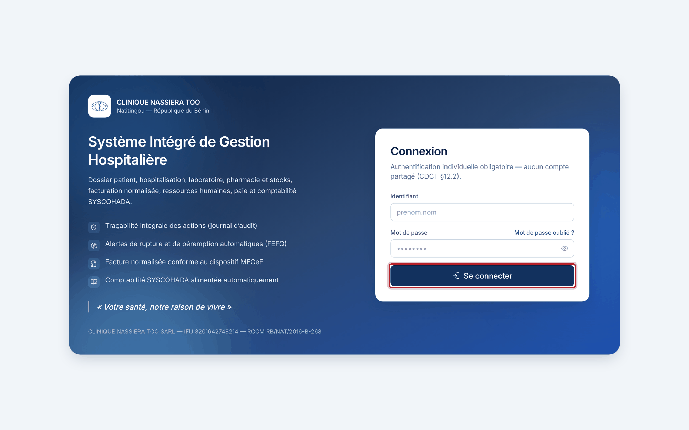
L’écran de connexion. Le bouton Se connecter ouvre la session.
ℹ️ Information
À la première connexion, ou après une réinitialisation, SIGH-CNT vous demande de remplacer le mot de passe provisoire : « Le mot de passe provisoire doit être remplacé avant d’ouvrir la session. » Saisissez le Nouveau mot de passe, puis Confirmer le mot de passe, et validez.
Mot de passe oublié
Sur l’écran de connexion, cliquez sur Mot de passe oublié ?.
Renseignez votre Identifiant ou adresse électronique.
Envoyez la demande. Le message « Demande transmise à l’administrateur système. » confirme l’envoi.
L’administrateur vous remet un mot de passe provisoire, que vous remplacez à la connexion suivante.
3.2 Se repérer dans l’écran
L’écran se compose de trois zones : la barre supérieure, le ruban horizontal et le contenu de l’écran.
La barre supérieure (1 : pastille de synchronisation ; 2 : recherche globale) et le ruban, ici déplié sur Pilotage.
La barre supérieure contient, de gauche à droite :
le logo et le nom de la clinique ;
la recherche globale (« Rechercher un patient, un produit, un employé… ») : elle s’ouvre aussi au clavier par Ctrl K ;
le menu Actions : les raccourcis vers les gestes les plus fréquents, filtrés selon votre rôle ;
le bouton plein écran ;
la pastille de synchronisation ;
la cloche des notifications ;
votre nom, votre rôle et le menu de votre compte.
Le ruban regroupe les écrans par domaine : Accueil, Soins, Logistique, Financier, RH, Administration, Système et Pilotage. Vous ne voyez que les domaines et les écrans permis à votre rôle.
3.3 Utiliser le ruban
Cliquez sur un domaine du ruban (par exemple Soins). Le panneau se déplie et montre les rangées du domaine, chacune avec ses écrans.
Cliquez sur l’écran voulu. L’écran s’ouvre et le panneau se replie.
Pour replier le panneau sans changer d’écran, cliquez de nouveau sur le domaine actif, ou sur la flèche à droite du ruban.
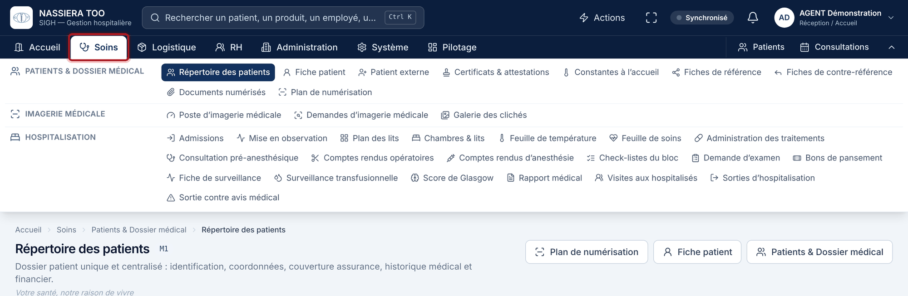
Le ruban déplié sur le domaine Soins, vu par la Réception. Chaque rangée porte le nom de son module.
✅ Astuce
À droite du ruban, les raccourcis Patients et Consultations ouvrent directement les deux écrans les plus utilisés. Le fil d’Ariane, sous le ruban (par exemple Accueil ➔ Soins ➔ Patients & Dossier médical ➔ Répertoire des patients), vous ramène d’un clic au niveau supérieur.
ℹ️ Information
L’onglet Système complet n’est affiché qu’à l’Administrateur système et à la DAF. Les autres rôles n’y voient que la rangée Importation de données, et seulement s’ils détiennent un droit sur un jeu d’import.
3.4 Votre tableau de bord
À la connexion, SIGH-CNT ouvre le tableau de bord de votre rôle (par exemple Tableau de bord — Accueil pour la Réception). Il présente en premier ce qui demande votre attention (encadré À regarder en premier), puis vos Accès rapides.
Le tableau de bord de la Réception : le premier encadré dit ce qui attend, avec un bouton pour y aller.
3.5 La pastille de synchronisation
Votre poste garde ses données sur place et les échange avec le poste mère de la clinique. Vous pouvez donc travailler même quand le réseau est coupé. La pastille de la barre supérieure dit toujours où en est l’échange :
Libellé de la pastille
Ce que cela veut dire
Que faire
Synchronisé (vert)
Le poste est à jour avec le poste mère.
Rien.
Synchronisation…
Un échange est en cours.
Rien, continuez à travailler.
En retard
Le dernier échange réussi date un peu.
Continuez ; signalez-le s’il dure.
Hors ligne · depuis …
Le poste mère ne répond pas. Vos saisies sont gardées sur le poste.
Continuez à travailler. Vos gestes partiront au retour du réseau.
… · N en attente
N gestes saisis sur ce poste n’ont pas encore été acceptés par la mère.
Ne fermez pas le poste avant le retour de la connexion si possible.
… · N à traiter
La mère a refusé N gestes. Chaque refus porte sa cause et le geste qui le corrige.
Ouvrez l’écran « À traiter » et corrigez.
Poste suspendu (rouge)
L’administrateur a suspendu ce poste.
Contactez l’administrateur.
ℹ️ Information
Sur la maquette, la pastille affiche des libellés voisins : « Synchronisé », « Envoi en cours… », « Synchronisé il y a N s » et « Hors ligne depuis N min, N geste(s) en attente ». Le sens est le même.
ℹ️ Information
Ce qui change quand le poste est hors ligne. Vous continuez à saisir, encaisser et imprimer. Deux limites protègent les règles : le poste ne sort du stock que sa part du stock connu (au-delà, refus nommé, jamais de stock négatif), et quand sa plage de numéros est épuisée, un dossier reçoit un code provisoire, jamais un numéro inventé. Une validation attendue d’un autre poste (DAF, Direction) attend le retour du réseau.
✅ Astuce
Le guide Panne de connexion (docs/guides/PANNE-DE-CONNEXION.md) détaille ce qui continue, ce qui attend et ce qui se passe au retour. En résumé : continuez à saisir, n’effacez rien, et laissez le poste allumé au retour du réseau.
3.6 Les notifications
La cloche de la barre supérieure annonce les alertes qui vous concernent : un résultat validé, une décision en attente, un produit sous le seuil, une péremption proche, etc. Le nombre d’alertes en attente s’affiche sur la cloche.
Cliquez sur la cloche. La liste des alertes s’ouvre.
Cliquez sur une alerte pour ouvrir l’écran concerné.
Traitez l’alerte sur l’écran ; elle disparaît de la liste une fois acquittée.
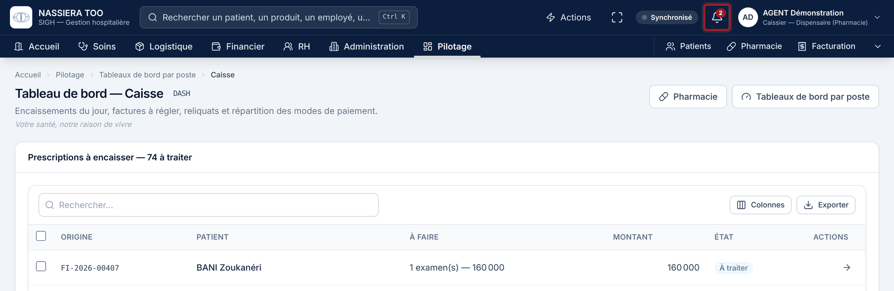
La cloche des notifications dans la barre supérieure (poste de la caisse).
ℹ️ Information
Aucune donnée de santé ne quitte la clinique dans une alerte, un son ou un message : une notification dit « un résultat est prêt », jamais le résultat lui-même.
3.7 Le menu Actions et la recherche globale
Le menu Actions donne accès en un clic aux gestes fréquents : Nouveau dossier patient, Patient externe : analyses, Nouvelle consultation, Nouvelle admission, Nouvelle facture, Encaisser un paiement, Assurés & cartes, Demande d’analyse, Mouvement de stock, Bon d’expression de besoins et Éditer un état. Seuls ceux permis à votre rôle s’affichent.
Le menu Actions ouvert par la Réception : seuls les raccourcis permis à ce rôle sont proposés.
La recherche globale trouve un patient, un produit, un employé ou un écran. Elle connaît aussi le contenu des écrans : chercher « péremption » ouvre directement l’onglet Péremptions des alertes de stock.
3.8 Verrouillage et fin de session
Après quinze minutes sans activité, l’écran se verrouille (Session verrouillée). Votre session n’est pas fermée : saisissez votre mot de passe et cliquez sur Déverrouiller pour retrouver l’écran exact où vous étiez.
⚠️ Attention
Quand vous quittez votre poste, fermez votre session par le menu de votre compte (en haut à droite). Un poste de l’accueil ou de la caisse est partagé : la personne suivante doit ouvrir SA session, jamais travailler dans la vôtre.
3.9 Décisions en attente de la mère
Une décision de validation (par exemple valider une commande de stock gros) se prend sur n’importe quel poste. Sur le poste mère, elle s’applique tout de suite. Sur un poste fileul, elle est signée puis déposée pour la mère, qui l’applique mécaniquement sous le rôle de son auteur dès qu’elle est joignable.
Prenez la décision comme d’habitude sur l’écran concerné (par exemple Administration ➔ Administration & Ambulance ➔ Validations en attente).
Sur un fileul, une pastille indique « N décisions en attente de la mère » : la décision est enregistrée, elle n’est pas encore appliquée.
Dès que la mère est joignable, elle applique la décision et la pastille retombe. Rien ne se perd et rien ne se refait.
Le centre « Validations en attente » (vue de la Directrice Administrative).
ℹ️ Information
Si une décision attend la mère plus de 4 heures (délai réglable par la clinique), une alerte le dit. L’attente ne bloque jamais le travail : vous pouvez continuer à soigner, facturer et encaisser.
⚠️ Attention
La mère revérifie que le compte signataire existe avec le bon rôle. Si ce n’est pas le cas, la décision est refusée et le refus est nommé : la personne qui l’a prise la reprend sur un poste habilité.
Chapitre 4Les gestes communs à tous les écrans
Tous les écrans de liste fonctionnent de la même façon : chercher, filtrer, créer, consulter, archiver, exporter, imprimer.
4.1 Chercher et filtrer dans un tableau
Les écrans de liste (patients, factures, mouvements de stock…) partagent la même barre d’outils.
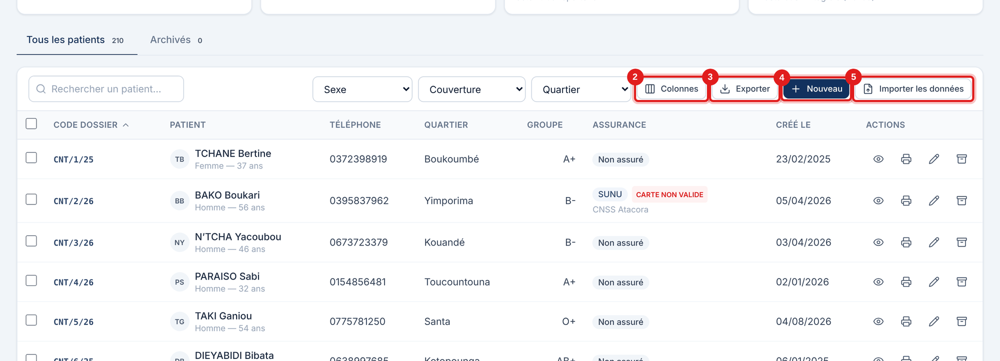
La barre d’outils d’un tableau : 1 recherche, 2 Colonnes, 3 Exporter, 4 Nouveau, 5 Importer les données.
Tapez quelques lettres dans le champ de recherche (par exemple « Rechercher un patient… »). Le tableau se filtre à mesure.
Affinez avec les listes de filtres placées à côté (par exemple Sexe, Couverture, Quartier).
Cliquez sur l’en-tête d’une colonne pour trier.
Cliquez sur Colonnes pour masquer ou réafficher des colonnes.
ℹ️ Information
Beaucoup d’écrans ont aussi des filtres de période : Aujourd’hui, Sept derniers jours, Toute la période. Les onglets au-dessus du tableau (par exemple Tous les patients et Archivés) indiquent leur nombre de lignes.
4.2 Créer, consulter, modifier
Cliquez sur Nouveau (ou sur le bouton nommé de l’écran : Nouveau relevé, Nouvelle commande…).
Remplissez le formulaire. Les champs marqués d’un astérisque (*) sont obligatoires.
Validez avec le bouton du formulaire (Créer, Enregistrer ou un bouton nommé comme Ouvrir le dossier).
Dans la colonne Actions de chaque ligne, des icônes donnent les gestes permis : Consulter, Imprimer l’état, Modifier, Archiver. Survolez une icône pour lire son nom.
La colonne Actions : les icônes Consulter, Imprimer l’état, Modifier et Archiver.
4.3 Archiver au lieu de supprimer
Dans SIGH-CNT, rien ne se supprime (règle RG-14). Une fiche qui n’a plus lieu d’être s’archive : elle quitte la liste courante mais reste consultable dans l’onglet Archivés, et l’archivage peut être annulé.
Dans la ligne à retirer, cliquez sur l’icône Archiver.
Confirmez. La fiche passe dans l’onglet Archivés.
Pour la rétablir, ouvrez l’onglet Archivés et utilisez l’action de restauration de la ligne.
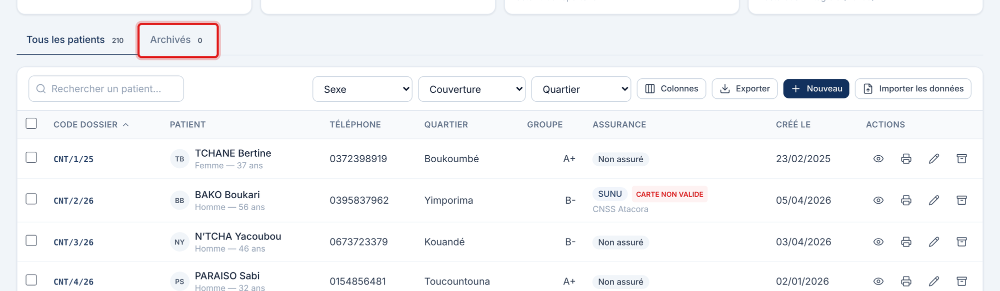
L’onglet Archivés garde les fiches retirées de la liste courante.
⚠️ Attention
Une pièce émise (facture, reçu, bon, résultat validé) ne se réécrit jamais. Pour corriger une facture, on émet un avoir ; pour corriger un résultat validé, on produit une version rectificative. Ces gestes sont décrits dans les chapitres concernés.
4.4 Exporter et imprimer les lignes d’un tableau
Le bouton Exporter sort les lignes d’un tableau dans un fichier ou sur papier. Cochez d’abord les lignes voulues si vous ne voulez pas tout sortir : la sélection est gardée d’une page du tableau à l’autre.
Cochez les lignes à sortir (case en début de ligne), ou aucune pour tout sortir.
Cliquez sur Exporter. La fenêtre Exporter les données s’ouvre.
Choisissez les lignes : Les N lignes cochées, Les N lignes filtrées (si un filtre est actif) ou Tout exporter.
Choisissez le format : Excel (.xlsx), CSV ou PDF / Impression.
Validez. Le fichier se télécharge, ou l’aperçu d’impression s’ouvre.
La fenêtre Exporter les données : choix des lignes, puis du format.
ℹ️ Information
L’export ne contient que ce que l’écran vous montre : les colonnes masquées ne sortent pas, et un rôle ne peut pas exporter ce qu’il ne voit pas. Chaque export est inscrit au journal (RG-12).
⚠️ Attention
Une limite de lignes par export est réglée par la clinique. Au-delà, l’export est refusé en le disant, jamais tronqué. Filtrez le tableau pour sortir moins de lignes. Exporter est un geste réservé (« exporter_donnees ») : sans lui, le bouton Exporter est absent.
4.5 Imprimer un document officiel
Tout document édité par SIGH-CNT (facture, reçu, bon, ordonnance, résultat, état) porte l’en-tête officiel de la clinique et un pied normalisé : pagination, date, utilisateur et identifiant du document. Trois formats existent :
A4 : factures, ordonnances, résultats, états ;
rouleau 80 mm : tickets de caisse, imprimés sur l’imprimante de la caisse ;
carte CR80 : badges du personnel.
Cliquez sur le bouton d’impression de l’écran (Imprimer, Éditer l’état, Imprimer la fiche…) ou sur l’icône d’impression de la ligne.
Vérifiez l’aperçu.
Choisissez l’imprimante et imprimez.
ℹ️ Information
Les totaux d’un état sont toujours calculés à partir des lignes, jamais saisis. Si une valeur ne peut pas être calculée, l’état l’écrit « non calculable » : ce n’est pas zéro.
4.6 Importer des données
Certains écrans portent le bouton Importer les données (répertoire des patients, stock gros, transferts, inventaires, courriers…). Il sert à reprendre des listes existantes depuis un classeur.
Cliquez sur Importer les données.
Téléchargez le modèle proposé et remplissez-le.
Déposez le fichier : SIGH-CNT le vérifie ligne par ligne et affiche les erreurs avant toute écriture.
Confirmez l’import. Le lot apparaît dans l’historique des lots ; il peut être annulé.
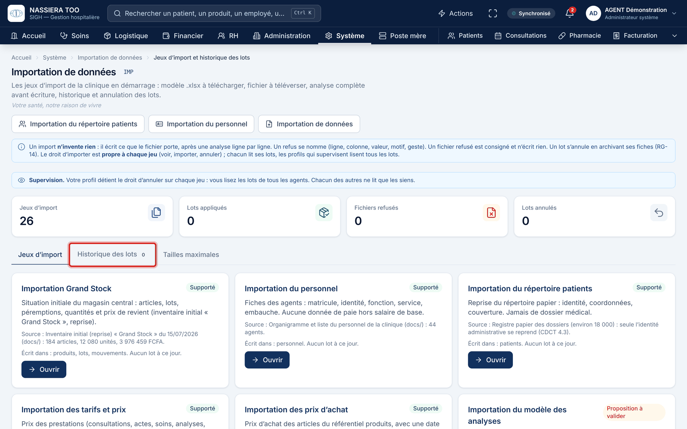
L’écran Jeux d’import et historique des lots (rangée Importation de données).
ℹ️ Information
Le même fichier importé deux fois est reconnu comme le même lot : il n’est pas écrit deux fois. Les droits d’import se règlent jeu par jeu.
Cliquez sur Nouveau. La fenêtre Nouveau rendez-vous s’ouvre.
Choisissez le Dossier patient. Pour un nouveau venu sans dossier, renseignez Nom, Prénom(s), Quartier / résidence et Numéro de téléphone.
Choisissez le Praticien, le Type, la Date et heure et le Motif.
Cliquez sur Créer.
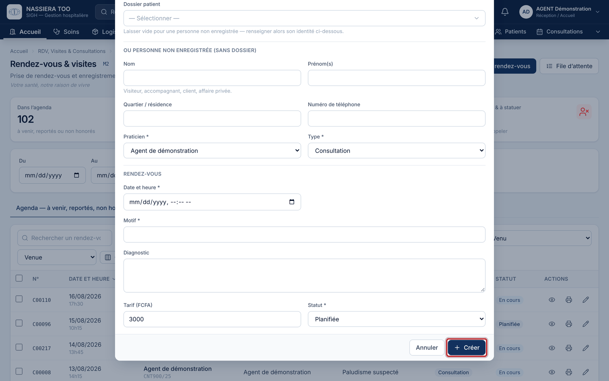
La fenêtre Nouveau rendez-vous.
L’onglet Agenda — à venir, reportés, non honorés liste les rendez-vous à suivre ; l’onglet Honorés (apurés de l’agenda) garde ceux qui ont eu lieu. L’écran Agenda présente la semaine en cours, avec le bouton Nouveau rendez-vous.
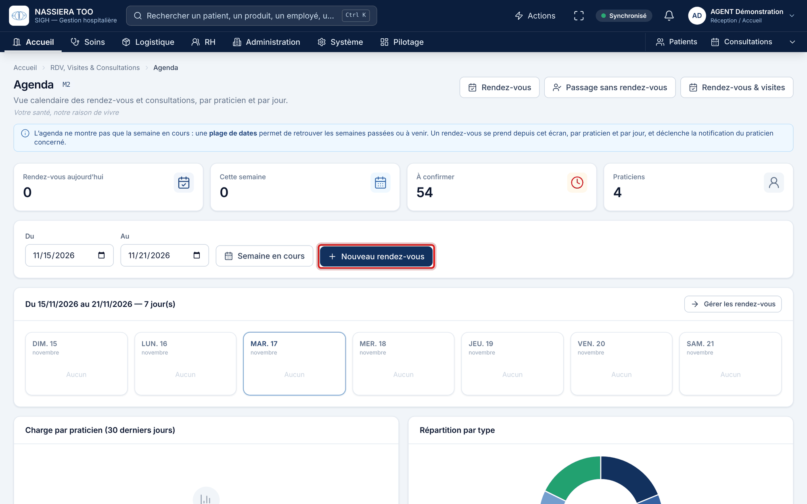
L’Agenda de la semaine.
Qui voit quoi : « Rendez-vous & visites » (droits d’origine de la clinique)
La File d’attente suit le patient de poste en poste. Ses onglets sont les postes de la clinique : Accueil, Consultation, Caisse, Salle de prélèvement, Pharmacie, Salle de soins, Imagerie médicale.
La tension se saisit en deux nombres, en cmHg (par exemple 12 et 8), et la diurèse en mL. Une valeur hors des bornes de contrôle est signalée dans la colonne Contrôle.
5.4 Accueillir un patient externe (analyses ou imagerie)
Un patient adressé de l’extérieur pour une analyse ou un examen d’imagerie n’a pas besoin d’un dossier complet.
Ouvrez Accueil ➔ Patients & constantes ➔ Patient externe.
Cliquez sur Nouvelle demande externe.
Renseignez le patient, l’examen et le prescripteur extérieur, puis enregistrez.
Suivez la demande dans les onglets Demandes — analyses, Demandes — imagerie médicale et Résultats.
L’écran Patient externe et son bouton Nouvelle demande externe.
Qui voit quoi : « Patient externe » (droits d’origine de la clinique)
Peut agir (créer, modifier)
Administrateur système, Directrice de l’Administration et des Finances (DAF), Médecin, Infirmier / Sage-femme, Biologiste médical, Réception / Accueil, Chirurgien
Consulte seulement
Direction / Gérance, Technicien d’échographie, Anesthésiste — Réanimateur
Ne voit pas l’écran
tous les autres rôles
5.5 Enregistrer un courrier
L’écran Accueil ➔ Courriers & orientation ➔ Courriers (départ / arrivée) tient le registre du courrier. Il est décrit au chapitre Administration.
Chapitre 6Patients et dossier médical
Le répertoire des patients est la porte d’entrée de tout le parcours : un patient, un dossier, un code unique.
6.1 Créer un dossier patient
Ouvrez Soins ➔ Patients & Dossier médical ➔ Répertoire des patients, ou utilisez Actions ➔ Nouveau dossier patient.
Vérifiez d’abord, avec la recherche, que le patient n’a pas déjà un dossier.
Cliquez sur Nouveau. La page Identité, coordonnées et couverture s’ouvre.
Renseignez Nom, Prénom(s), Sexe, Date de naissance et Téléphone (obligatoires), puis Groupe sanguin, Quartier, Adresse et Personne à prévenir.
Cochez Accepte de recevoir des SMS de la clinique si le patient l’accepte.
Renseignez si besoin les Antécédents, les Allergies connues et le Traitement en cours.
Si le patient est assuré, renseignez Compagnie d’assurance, Numéro de police, Taux de prise en charge (%) et Expiration de la carte.
Cliquez sur Ouvrir le dossier. Le code dossier est attribué automatiquement.
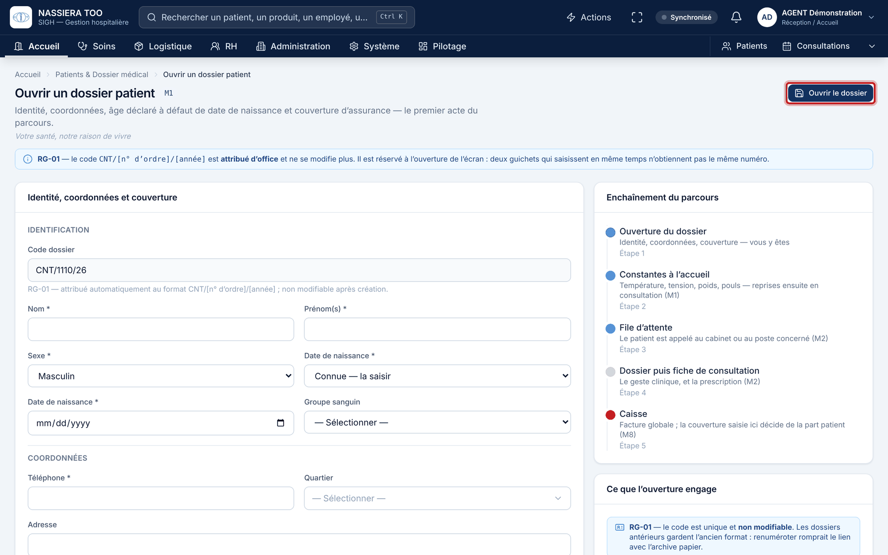
La page de création du dossier ; le bouton Ouvrir le dossier enregistre.
ℹ️ Information
Le code patient est unique et non modifiable (règle RG-01). Il est généré automatiquement au format CNT/[n° d’ordre]/[année], par exemple CNT/1/25. Vous ne le saisissez jamais. Les anciens dossiers gardent leur code d’origine (forme CNT530/25).
⚠️ Attention
La date d’expiration de la carte d’assurance compte : la prise en charge ne s’applique que si la carte est valide à la date de la facture (RG-09). Sinon, le patient paie le prix non assuré.
Qui voit quoi : « Répertoire des patients » (droits d’origine de la clinique)
Peut agir (créer, modifier)
Administrateur système, Directeur Médical, Directrice de l’Administration et des Finances (DAF), Médecin, Infirmier / Sage-femme, Réception / Accueil, Chirurgien
La Fiche patient réunit tout le dossier dans des onglets : Administratif, Médical, Antécédents & allergies, Soins, Hospitalisations, Maternité, Analyses & résultats, Imagerie médicale, Ordonnances, À domicile, Financier, Assurance et Traçabilité.
Dans le répertoire, cliquez sur l’icône Consulter de la ligne du patient.
Parcourez les onglets.
Utilisez Modifier le dossier pour corriger les coordonnées, Imprimer la fiche pour l’imprimer, ou Fiche de consultation pour ouvrir une consultation.
La fiche patient vue par un Médecin : 1 Modifier le dossier, 2 Imprimer la fiche.
ℹ️ Information
L’onglet Traçabilité montre qui a fait quoi sur le dossier, et quand (RG-12). Les onglets médicaux ne sont visibles que des soignants habilités (RG-13).
Choisissez le dossier, le type de document et le fichier, puis enregistrez.
ℹ️ Information
Le texte d’un scan peut être lu par la machine (lecture locale, sur le poste : rien ne sort de la clinique). Une correction de ce texte est une version signée et journalisée ; elle est réservée au geste « Corriger le texte lu par machine d’un scan ».
Chapitre 7Consultations et prescriptions
Le médecin consulte, prescrit, et la prescription suit le patient vers la caisse, la pharmacie, le laboratoire ou la salle de soins.
7.1 Le parcours d’une consultation
La fiche de consultation affiche l’Enchaînement du parcours, en cinq étapes :
Accueil, Zone 1 : identité, couverture et constantes saisies à l’accueil.
Dossier de consultation : anamnèse, antécédents, examen clinique, enregistrés d’abord.
Fiche de consultation : synthèse, diagnostic, conduite à tenir.
Caisse : une facture globale (part assureur et part patient) ; la délivrance, le prélèvement et l’imagerie se débloquent au règlement.
ℹ️ Information
Chaque ligne de prescription porte un prix strictement positif, lu au référentiel des tarifs à la date de la pièce. Quand un prix manque, la ligne l’affiche « prix à définir » avec sa cause : ce n’est jamais zéro. Les médicaments sont facturés au prix d’achat, sans marge (RG-02).
Ouvrez d’abord Soins ➔ Consultations & prescriptions ➔ Dossiers de consultation et enregistrez l’anamnèse et l’examen clinique du patient.
Ouvrez la Fiche de consultation sur ce dossier (depuis le dossier, ou par Fiche de consultation sur la fiche patient). Vérifiez le Dossier patient affiché.
Remplissez Synthèse, diagnostic et conduite à tenir.
Pour chaque médicament, choisissez-le dans la liste Médicament, précisez la posologie, puis cliquez sur Ajouter un médicament. Ajoutez de même les analyses et les examens d’imagerie.
Cliquez sur Enregistrer et prescrire. Les prescriptions partent vers la caisse puis vers les postes d’exécution.
Imprimez avec Éditer l’ordonnance et Éditer le bulletin d’analyses.
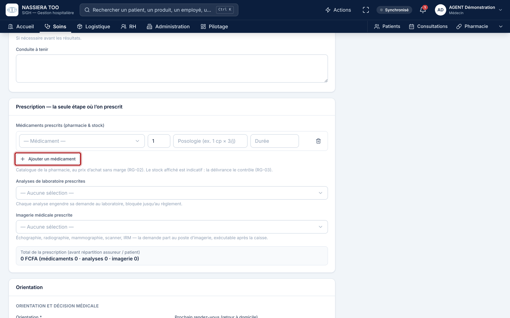
La section Prescription de la fiche : Ajouter un médicament ajoute une ligne. Analyses et imagerie se choisissent dessous.Le bouton Enregistrer et prescrire, en bas de la fiche.
⚠️ Attention
Sans dossier de consultation enregistré, la fiche refuse et le dit : « Fiche impossible sans dossier ». Le bouton Ouvrir les dossiers de consultation vous y conduit. Les constantes ne se saisissent pas sur la fiche : elles se relèvent à l’accueil.
⚠️ Attention
Une ordonnance enregistrée est une pièce émise : elle ne se réécrit pas. Pour changer un traitement, faites une nouvelle prescription.
7.4 Suivre les prescriptions et les ordonnances
L’écran Soins ➔ Consultations & prescriptions ➔ Prescriptions liste toutes les prescriptions, avec les onglets Toutes, Prescriptions de soins, Ordonnances et En cours. Les colonnes Destinataire et Règlement disent où en est chaque ligne. Le bouton Nouvelle prescription de soins prescrit un acte infirmier hors consultation.
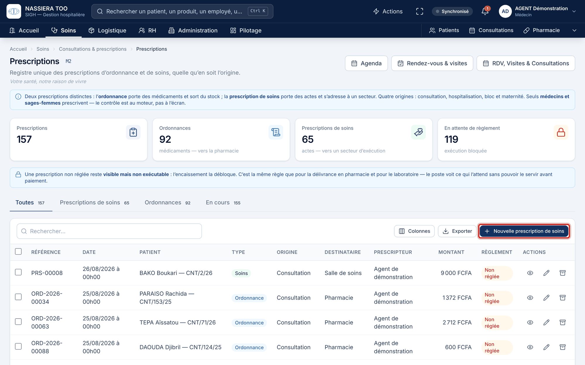
L’écran Prescriptions et son bouton Nouvelle prescription de soins.
L’écran Ordonnances montre, pour chaque ordonnance, l’état à la Caisse et à la Pharmacie.
7.5 Administrer un soin en salle de soins
Ouvrez Soins ➔ Consultations & prescriptions ➔ Salle de soins.
Repérez la ligne (colonnes Prescription, Patient, Acte ou produit).
Cliquez sur Administrer et confirmez ce qui a été fait.
La salle de soins : le bouton Administrer enregistre l’acte réalisé.
Qui voit quoi : « Salle de soins » (droits d’origine de la clinique)
Cliquez sur Nouvelle demande, choisissez le patient, l’examen et la modalité, puis enregistrez.
Une fois l’examen réalisé, l’opérateur clique sur Saisir le CR (ou Poursuivre le CR) pour rédiger le compte rendu.
Cliquez sur Rendre pour mettre le compte rendu à disposition du prescripteur.
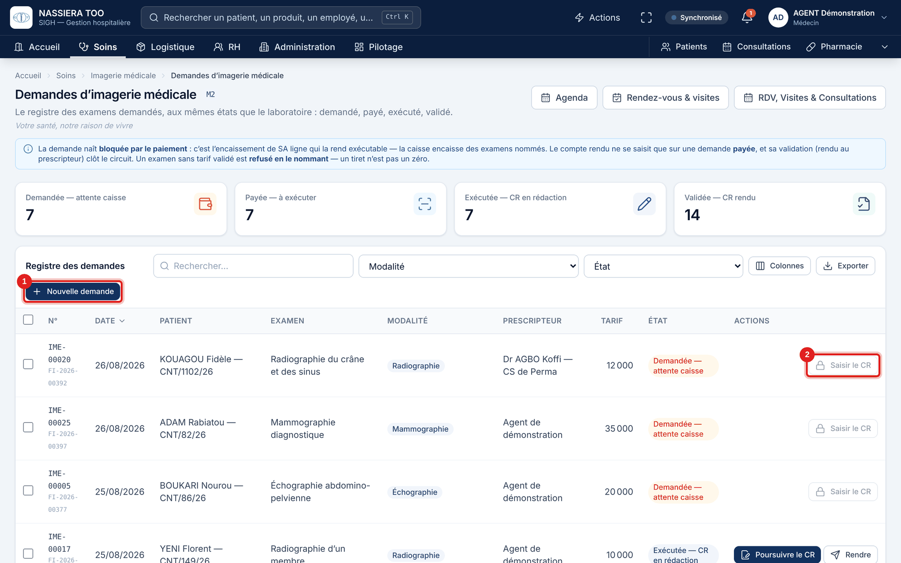
Les demandes d’imagerie : 1 Nouvelle demande, 2 Saisir le CR.
Les tableaux Tableau Échographie, Tableau Radiographie, Tableau Mammographie, Tableau Scanner et Tableau IRM listent les comptes rendus par modalité ; la Galerie des clichés regroupe les images.
7.7 Prescrire un acte ou un médicament dont le prix n’est pas fixé
Le médecin prescrit toujours. Si un acte, une analyse ou un médicament n’a pas encore de prix dans le référentiel des tarifs, la ligne n’est pas bloquée et n’est jamais mise à zéro.
La ligne porte la mention prix à définir (ou prix à valoriser pour un médicament). Son prix et les totaux affichent Non calculable.
La pièce prend l’état « en attente de prix ».
Une alerte « prix manquant » part, une seule par code de prestation, vers les agents qui peuvent modifier l’écran des prix.
Dès que le prix est posé au référentiel, la ligne se valorise à la date de la pièce.
🛑 Alerte
Seul l’encaissement est refusé : la caisse ne peut pas encaisser une pièce dont une ligne n’a pas de prix. La commande est absente, rien n’est envoyé au MECeF et le refus est nommé (ENCAISSEMENT_PRIX_MANQUANT). Par défaut, c’est la pièce entière qui attend ; la clinique peut régler d’encaisser la partie chiffrée seulement (réglage daté, « non » au départ).
ℹ️ Information
Un code de prestation ne se réutilise pas, même écrit autrement : un « Certificat d’aptitude » (5 000 FCFA) et un certificat d’aptitude à la conduite (7 000 FCFA) sont deux prestations distinctes.
Chapitre 8Hospitalisation
Admettre un patient dans un lit, suivre ses soins, puis organiser sa sortie dans les règles.
8.1 Admettre un patient
Ouvrez Soins ➔ Hospitalisation ➔ Admissions, ou utilisez Actions ➔ Nouvelle admission.
Cliquez sur Nouveau. La fenêtre Nouveau admission s’ouvre.
Choisissez le Dossier patient, le Lit et l’Infirmier référent.
Renseignez la Date d’entrée, le Type de prise en charge, le Diagnostic d’entrée et les Symptômes constatés.
Cliquez sur Créer.
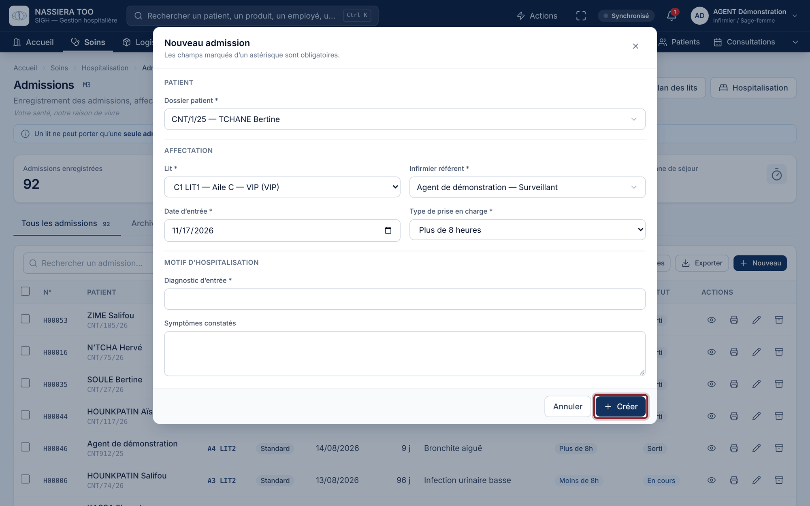
La fenêtre d’admission.
ℹ️ Information
Un lit ne porte qu’une seule admission active. Un lit occupé n’est pas proposé.
Qui voit quoi : « Admissions » (droits d’origine de la clinique)
Le Plan des lits montre chaque chambre et chaque lit, avec le patient et la durée du séjour, ou la mention Disponible. L’écran Chambres & lits tient la liste des chambres.
Le plan des lits.
8.3 Suivre les soins du patient hospitalisé
Plusieurs écrans de la rangée Hospitalisation servent au suivi quotidien :
Feuille de soins : chaque acte réalisé (bouton Nouveau) ;
Administration des traitements : les onglets À administrer et Historique, avec le bouton Administrer ;
Feuille de température, Fiche de surveillance, Score de Glasgow, Surveillance transfusionnelle ;
Demande d’examen, Bons de pansement, Rapport médical, Visites aux hospitalisés.
⚠️ Attention
Certaines check-listes et bornes de surveillance portent la mention « à valider » : elles attendent la validation écrite du professionnel désigné. Utilisez-les comme aide, pas comme référence définitive.
8.4 Organiser la sortie d’un patient
Une sortie d’hospitalisation exige quatre conditions (règles RG-06 à RG-08) : le solde apuré, la signature du patient, la signature de l’infirmier et le constat du gardien.
Ouvrez Soins ➔ Hospitalisation ➔ Sorties d’hospitalisation. La colonne Solde (RG-06) montre ce qui reste dû.
Si le solde n’est pas nul, envoyez la famille à la caisse avant d’aller plus loin.
Dans la ligne du patient, cliquez sur Préparer la sortie.
Renseignez la Date de sortie, l’État à la sortie et les Consignes de sortie et suivi.
Cochez Signature du patient recueillie, Signature de l’infirmier traitant et Constat du gardien effectué au fur et à mesure.
Imprimez le bon avec Éditer le bon de sortie, puis cliquez sur Finaliser la sortie. Le lit redevient disponible.
La fenêtre Sortie d’hospitalisation ; Finaliser la sortie clôt le séjour.
⚠️ Attention
Si le solde n’est pas apuré, la sortie demande une Dérogation de la Direction (si solde non apuré). Sans elle, la sortie ne se finalise pas.
8.5 Sortie contre avis médical
Ouvrez Soins ➔ Hospitalisation ➔ Sortie contre avis médical.
Renseignez le patient et le motif de la sortie (obligatoire), et consignez l’avis du Procureur s’il a été requis.
Cliquez sur Enregistrer.
🛑 Alerte
Une sortie contre avis médical engage la clinique. Le motif doit être précis et complet : le document enregistré ne se réécrit pas.
Chapitre 9Maternité, naissances et décès
Du suivi de grossesse au registre des naissances.
9.1 Les écrans de la maternité
La rangée Soins ➔ Maternité, Naissances & Décès réunit : Dossier obstétrical, Suivi maternité, CPN & carte maternelle, Partogramme, Accouchements, Dossier bébé & soins du nouveau-né, Consultations post-natales (CPoN), Planification familiale, Registre SONUB / SONUC, Registre PTME, Soins curatifs & urgences maternité, Comptes rendus de maternité, Registre des naissances et Registre des décès.
Qui voit quoi : « Accouchements » (droits d’origine de la clinique)
Renseignez la parturiente, la date et l’heure, le type d’accouchement, les actes associés, la durée du travail, les complications, le praticien et l’issue.
Enregistrez, puis déclarez le nouveau-né dans le Registre des naissances (bouton Nouveau) : sexe, poids, Apgar, périmètres.
L’écran Accouchements et son bouton Nouveau.
ℹ️ Information
Les statistiques de la maternité (Statistiques maternité & naissances, domaine Pilotage) sont calculées à partir de ces registres.
Chapitre 10Laboratoire
Une analyse passe par quatre étapes : demande, prélèvement, saisie du résultat, validation biologique.
10.1 Le circuit d’une analyse
La demande arrive du médecin (prescription), de la maternité, de l’hospitalisation ou d’un patient externe.
Le patient règle à la caisse : le prélèvement n’est possible qu’après règlement.
Le préleveur enregistre le prélèvement et le transmet au laboratoire.
Le laboratoire saisit le résultat, puis le biologiste le valide biologiquement : il devient visible du prescripteur.
Qui voit quoi : « Saisie des résultats » (droits d’origine de la clinique)
Direction / Gérance, Technicien d’échographie, Chirurgien, Anesthésiste — Réanimateur
Ne voit pas l’écran
tous les autres rôles
10.2 Prélever et transmettre
Ouvrez Soins ➔ Laboratoire ➔ Salle de prélèvement. Trois onglets : À prélever, À transmettre, Reçus au laboratoire.
Dans l’onglet À prélever, imprimez si besoin le bon (icône Imprimer le bon d’analyse).
Cliquez sur l’icône Enregistrer le prélèvement de la ligne.
Dans l’onglet À transmettre, cliquez sur Transmettre au laboratoire.
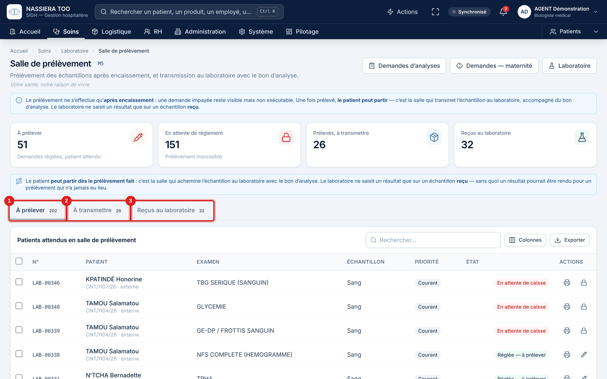
La salle de prélèvement et ses trois onglets.
ℹ️ Information
Un cadenas Règlement requis avant prélèvement remplace l’action tant que la caisse n’a pas encaissé. Envoyez le patient à la caisse.
10.3 Saisir et valider les résultats
Ouvrez Soins ➔ Laboratoire ➔ Saisie des résultats. Trois onglets : À saisir, À valider biologiquement, Rendus au prescripteur.
Dans À saisir, cliquez sur Saisir le résultat, renseignez les valeurs et enregistrez.
Le biologiste ouvre À valider biologiquement, relit l’ensemble et clique sur Valider biologiquement (ou Valider la sélection pour plusieurs lignes).
Le résultat passe dans Rendus au prescripteur.
La saisie des résultats : les trois onglets du circuit.
🛑 Alerte
Une fois validés, les résultats sont visibles du prescripteur. Au-delà, une correction produit une version rectificative et le prescripteur en est averti : relisez avant de valider.
⚠️ Attention
En l’absence du biologiste médical, la validation se fait par intérim (bouton Valider par intérim) et le dit. Valider un seuil de variation brutale est un geste réservé au Biologiste médical. Les bornes marquées « à valider » attendent la validation écrite du biologiste.
10.4 Imprimer les résultats
Ouvrez Soins ➔ Laboratoire ➔ Impression des résultats.
Sélectionnez la ligne (colonne Règlement à jour).
Cliquez sur Imprimer.
Impression des résultats.
Les autres écrans du laboratoire : Catalogue des analyses, Unités de mesure, Valeurs de référence, Comparatif des résultats, Réactifs & consommables, Banque de sang, Donneurs & transfusions et les statistiques.
Chapitre 11Pharmacie et stocks
Délivrer les médicaments, tenir le stock gros et le stock détail, transférer, inventorier, déclarer une perte.
11.1 Les règles du stock
Le stock ne devient jamais négatif (RG-03) : une sortie supérieure au stock est refusée.
Toute sortie a un justificatif : ordonnance, bon de transfert, constat de perte (colonne Justificatif (RG-03)).
FEFO (RG-05) : le premier lot à périmer sort le premier. L’onglet Ordre de sortie FEFO de l’écran Lots & péremptions (FEFO) le montre.
Prix d’achat, sans marge (RG-02) : un médicament est facturé au prix d’achat ; le coût moyen (CUMP) est calculé automatiquement.
Qui voit quoi : « Stock détail (pharmacie) », « Dispensation » (droits d’origine de la clinique)
Peut agir (créer, modifier)
Administrateur système, Directrice de l’Administration et des Finances (DAF), Gestionnaire de Stock, Caissier — Dispensaire (Pharmacie)
Consulte seulement
Direction / Gérance, Médecin, Comptable
Ne voit pas l’écran
tous les autres rôles
11.2 Délivrer une ordonnance encaissée
Ouvrez Logistique ➔ Pharmacie & Stocks ➔ Dispensation. La liste File des délivrances (ordonnances encaissées) montre ce qui attend.
Repérez le patient (colonnes Origine, Patient, À faire).
Cliquez sur Délivrer dans la ligne.
Vérifiez les produits et les quantités, puis confirmez. Le stock détail est débité, lot par lot, dans l’ordre FEFO.
La dispensation, vue de la caisse du dispensaire : le bouton Délivrer de la ligne.
ℹ️ Information
Les écrans Pharmacie interne — urgences et Pharmacie externe — voie orale présentent les mêmes délivrances par circuit ; le bouton Délivrer y demande une confirmation produit par produit.
11.3 Consulter le stock gros et le stock détail
Le Stock gros (magasin) et le Stock détail (pharmacie) listent chaque article : quantité, seuil, CUMP, valeur et emplacement. Le bouton Éditer l’état imprime l’état du stock.
Le stock détail ; Éditer l’état imprime l’état valorisé.
11.4 Transférer du stock gros vers le stock détail
Renseignez Article, Nature de la perte, Magasin concerné, Quantité perdue, Date du constat, Justificatif, Constaté par et les Circonstances.
Cliquez sur Déclarer la perte, puis imprimez le constat avec Éditer le constat.
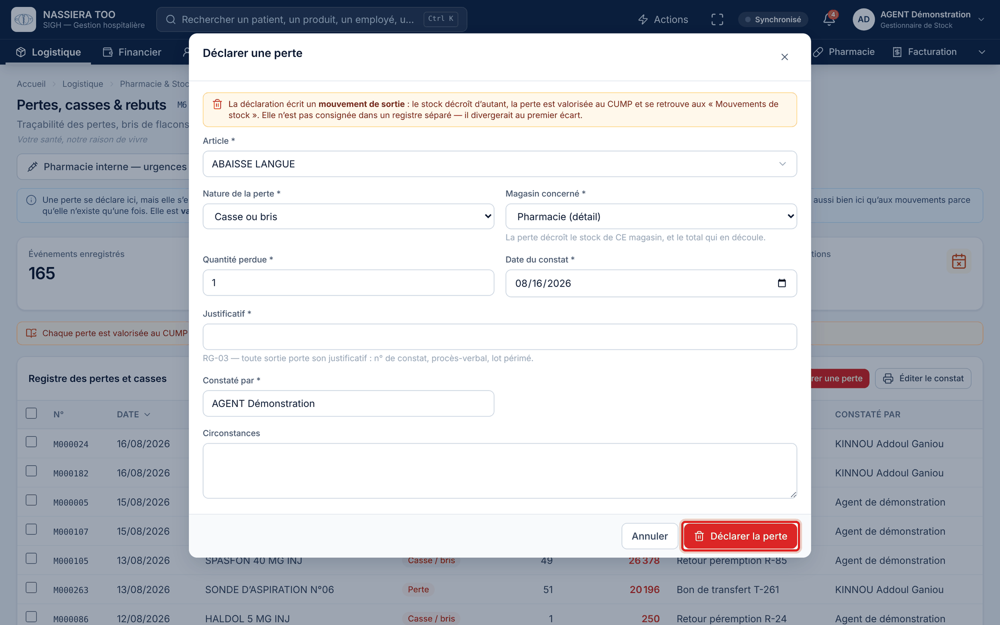
La fenêtre Déclarer une perte.
11.7 Surveiller les alertes de stock
L’écran Alertes & seuils a trois onglets : Ruptures, Sous le seuil et Péremptions. Le bouton Ouvrir les bons de besoins (M7) enchaîne sur une demande d’achat.
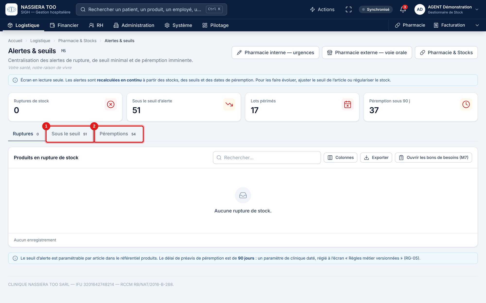
Les alertes de stock : produits sous le seuil et péremptions.
ℹ️ Information
Le préavis de péremption est un réglage de la clinique, enregistré en base.
Les autres écrans : Tableau de bord stock, Référentiel produits, Mouvements de stock, Lots & péremptions (FEFO), Étiquetage & emplacements, Suivi des ventes, Point du stock valorisé.
11.8 Les articles non comptés d’un inventaire
La feuille d’inventaire part vide : aucune quantité n’est préremplie. Vous comptez ce que vous avez réellement en main.
Un article que vous ne comptez pas est enregistré « non compté ». Ce n’est jamais « compté, écart zéro ».
Le stock d’un article non compté n’est jamais régularisé : il reste ce qu’il était (le stock ne peut pas devenir négatif, RG-03).
Vous pouvez quand même valider l’inventaire. Le registre et l’état imprimé disent combien d’articles ne sont pas comptés et lesquels.
✅ Astuce
Avant de valider, ouvrez la carte « Articles non comptés (stock inchangé) » : elle liste les articles à reprendre au prochain passage.
11.9 Les préavis de péremption : un paramètre de la clinique
Le préavis avant péremption et les tranches de la balance âgée ne sont plus écrits dans le logiciel : ce sont des paramètres de clinique datés. Les alertes du stock (Péremptions), les écrans et les tableaux de bord les lisent à la date du jour. Un changement s’applique à partir de sa date d’effet.
Geste réservé « Régler les paramètres de clinique » : détenu d’origine par Administrateur système, Directrice de l’Administration et des Finances (DAF). Sans ce geste, la commande est absente de l’écran et le moteur refuse aussi.
Chapitre 12Achats et fournisseurs
Du besoin exprimé par un service à la réception contrôlée de la livraison.
Renseignez Date, Service demandeur, Demandeur, Catégorie du besoin et le Motif de la demande ; cochez Besoin urgent si nécessaire.
Ajoutez chaque article avec sa Qté demandée (bouton Ajouter).
Cliquez sur Créer le bon.
La fenêtre Nouveau bon d’expression de besoins.
Les onglets suivent le circuit : Mes demandes, Arbitrage & validation DAF, Besoins validés — achats & logistique, Tous les bons. La DAF fixe la Qté accordée.
12.2 Passer une commande
Ouvrez Logistique ➔ Achats & Fournisseurs ➔ Bons de commande.
Cliquez sur Nouvelle commande.
Renseignez Date de la commande, Fournisseur et Statut.
Ajoutez les articles (Article, Quantité, Prix unitaire, puis Ajouter).
Cliquez sur Créer la commande.
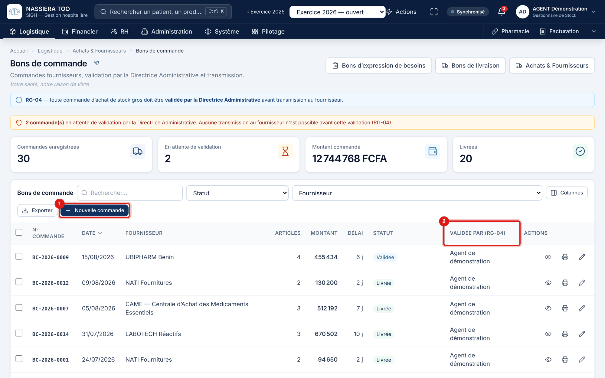
Les bons de commande : la colonne Validée par (RG-04) dit qui a validé.
⚠️ Attention
Une commande de stock gros doit être validée par la Directrice Administrative avant d’être transmise au fournisseur (RG-04). La colonne Validée par (RG-04) le montre. Ne transmettez jamais une commande non validée.
Qui voit quoi : « Bons de commande » (droits d’origine de la clinique)
Peut agir (créer, modifier)
Administrateur système, Directrice de l’Administration et des Finances (DAF), Biologiste médical, Gestionnaire de Stock, Assistant Comptable
Dans la ligne de la commande, cliquez sur Réceptionner.
Renseignez le N° bordereau de livraison, la Date de réception et les contrôleurs (Contrôleur 1, Contrôleur 2, Contrôleur 3 (facultatif)).
Cliquez sur Valider la réception. Le stock est crédité.
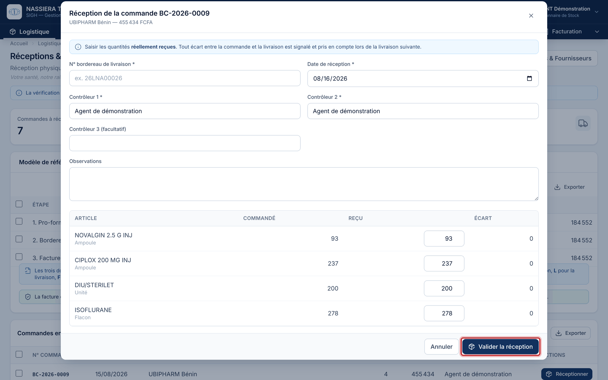
La réception d’une commande, contrôlée par plusieurs personnes.
Un écart entre commande et livraison se suit dans Écarts de livraison ; les procès-verbaux se dressent dans PV de réception — consommables et PV de réception — réactifs. Les factures du fournisseur se saisissent dans Factures fournisseurs.
12.4 Valider une commande de stock gros (RG-04)
Une commande de stock gros doit être validée par la Directrice Administrative avant d’être transmise au fournisseur. C’est un geste réservé : seul le rôle qui le détient voit le bouton de validation.
Ouvrez Logistique ➔ Achats & Fournisseurs ➔ Bons de commande.
Repérez la commande en attente ; sa ligne affiche son état.
Cliquez sur l’icône Valider la commande de la ligne, puis confirmez Valider la commande. Le validateur enregistré est vous, l’agent de la session.
Une fois validée, la commande peut être transmise au fournisseur, puis livrée et soldée.
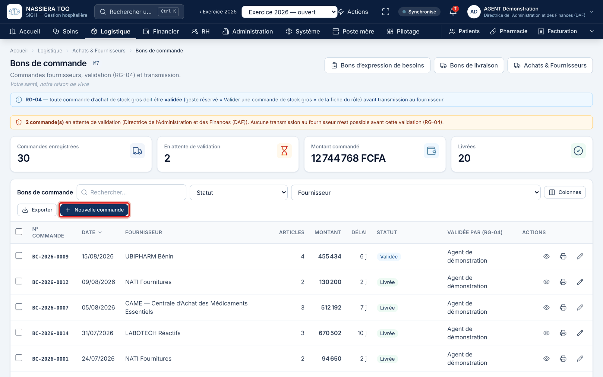
Les bons de commande vus par la Directrice Administrative.
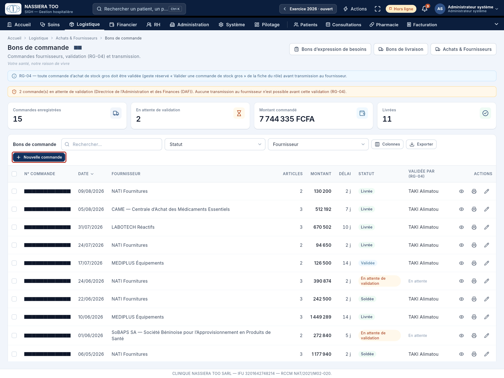
Le même écran sur le poste de bureau (capture du poste Flutter, jeu de test) : 1 Nouvelle commande.
Geste réservé « Valider une commande de stock gros » : détenu d’origine par Directrice de l’Administration et des Finances (DAF). Sans ce geste, la commande est absente de l’écran et le moteur refuse aussi.
⚠️ Attention
Les états « Validée », « Transmise », « Livrée » et « Soldée » ne se choisissent pas dans le formulaire : ils ne s’obtiennent que par le geste de validation. Un autre rôle, même administrateur, ne peut pas valider une commande si la fiche de son rôle ne lui donne pas ce geste.
Deux autres gestes réservés complètent le circuit des besoins : « Arbitrer un bon de besoins » (détenu d’origine par Directrice de l’Administration et des Finances (DAF), Direction / Gérance, Administrateur système) et « Traiter un besoin accordé » (détenu d’origine par Comptable, Gestionnaire de Stock, qui reçoit la tâche « besoin accordé »).
12.5 La commande voyage entre les postes
Une commande créée sur un poste fileul est transmise au poste mère comme le reste de l’activité. Trois points à connaître :
Tant que la mère n’a pas répondu, la commande porte une référence provisoire du type BC-2026-P<poste>-0001. La mère la remplace par le rang définitif (BC-2026-0001). Une référence définitive ne se réécrit plus.
La Directrice Administrative valide depuis n’importe quel poste : sur un fileul, la décision est signée et déposée, la mère l’applique (voir « Décisions en attente de la mère »).
Deux postes qui saisissent exactement la même commande (même fournisseur, même jour, mêmes lignes) n’en font qu’une. Si deux numéros identiques sont attribués par hasard, la commande est marquée en doublon et jamais corrigée en silence : signalez-le à l’administrateur.
ℹ️ Information
Les commandes, les prix d’achat et les fournisseurs ne vont jamais sur un téléphone.
Chapitre 13Facturation et caisse
Facturer, encaisser, rendre la monnaie juste, arrêter la caisse chaque jour.
13.1 Établir une facture
Ouvrez Financier ➔ Facturation & Caisse ➔ Nouvelle facture, ou Actions ➔ Nouvelle facture.
Choisissez le patient et la nature de la facture (par exemple Consultation généraliste).
Ajoutez les prestations avec Ajouter. Les prix viennent du référentiel des tarifs : vous ne les saisissez pas.
Cliquez sur Enregistrer et encaisser pour encaisser tout de suite, ou sur Facture pro-forma pour un devis.
Imprimez le Ticket de caisse sur l’imprimante 80 mm.
La nouvelle facture : 1 Ajouter, 2 Enregistrer et encaisser.
ℹ️ Information
La grille de prix porte deux prix : non assuré et assuré. SIGH-CNT applique le prix assuré et la part de l’assurance seulement si la carte est valide à la date de la facture (RG-09).
Qui voit quoi : « Nouvelle facture », « Paiements » (droits d’origine de la clinique)
Peut agir (créer, modifier)
Administrateur système, Directrice de l’Administration et des Finances (DAF), Caissier — Dispensaire (Pharmacie), Comptable
Consulte seulement
Direction / Gérance, Directeur Médical, Assistant Comptable
Ne voit pas l’écran
tous les autres rôles
13.2 Encaisser un paiement
Ouvrez Financier ➔ Facturation & Caisse ➔ Paiements. L’onglet À encaisser liste les factures dues.
Cliquez sur Encaisser dans la ligne de la facture.
Saisissez le Montant encaissé (FCFA) et le Mode de règlement ; ajoutez la Référence de la transaction pour un paiement mobile ou bancaire.
Cliquez sur Valider l’encaissement. La pièce de caisse est émise et le reçu s’imprime.
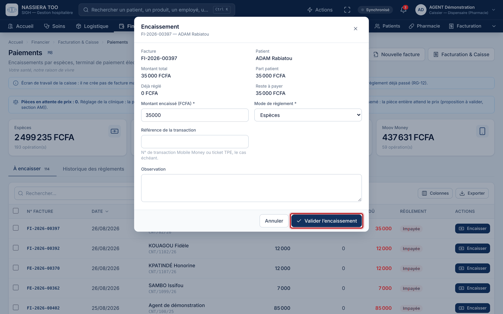
La fenêtre Encaissement.
ℹ️ Information
Un paiement partiel laisse un reste dû : il se suit dans Reliquats et se solde par Régler l’encaissement partiel. L’onglet Historique des règlements garde tous les reçus.
⚠️ Attention
Le MECeF est le boîtier fiscal physique branché à la caisse. La facture normalisée y est certifiée localement. Le branchement du boîtier réel attend les réponses du fournisseur : voir le chapitre MECeF.
Cliquez sur Choisir la facture à rectifier, puis renseignez le Motif de l’avoir et la Suite donnée.
Cliquez sur Émettre l’avoir.
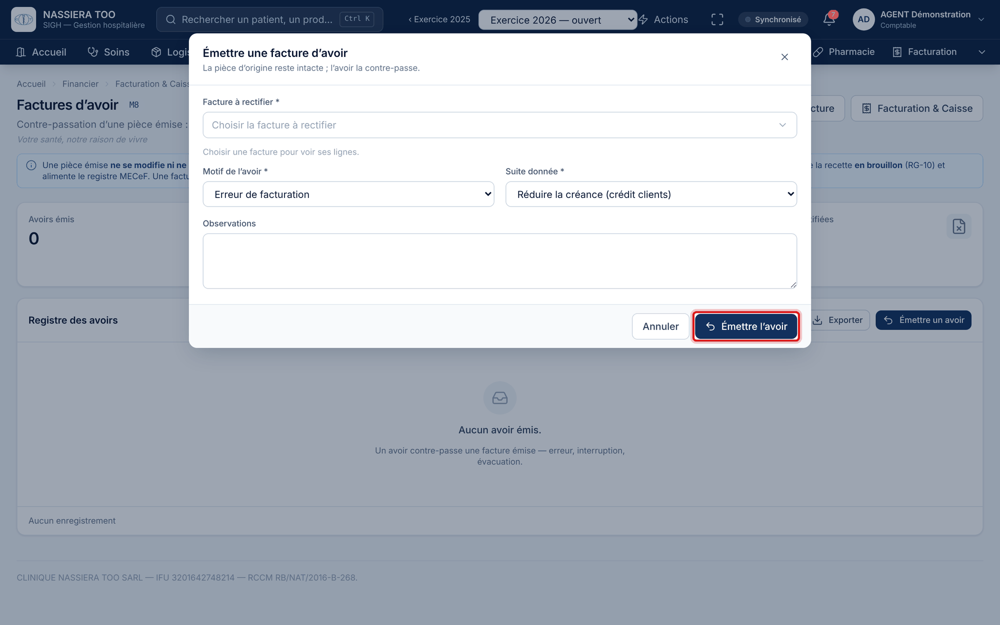
La fenêtre Émettre une facture d’avoir (vue par le Comptable).
⚠️ Attention
Le Caissier consulte les avoirs mais ne les émet pas : le bouton Émettre un avoir est absent de son écran. Adressez-vous au Comptable ou à la DAF.
Les remboursements et annulations se saisissent dans Remboursements & annulations (bouton Nouvelle opération). Les autres écrans : Tableau de bord facturation, Factures, Factures pro-forma, Opérations de caisse, Recettes par période.
13.5 La facture d’un patient ne porte ni AIB ni IFU d’acheteur
La facture d’un patient n’a ni IFU d’acheteur, ni nom d’entreprise, ni AIB, et le bloc « Facture normalisée » d’un document d’entreprise n’y figure pas. Si un moteur reçoit quand même un AIB pour un patient, il refuse (AIB_FACTURE_PATIENT). La fenêtre d’encaissement ne demande donc que le montant, le mode de règlement, la référence de la transaction et une observation.
ℹ️ Information
Quand une entreprise, un assureur ou une convention prend un patient en charge, la clinique émet une facture distincte au tiers payeur : voir la fiche suivante.
13.6 Facturer un tiers payeur
Le tiers payeur est l’entreprise, l’assureur ou la convention qui prend un patient en charge. Sa facture est une pièce propre, avec l’IFU (13 chiffres) et le nom de l’acheteur. L’AIB est proposé par le logiciel et décidé par le comptable.
Ouvrez Financier ➔ Facturation & Caisse ➔ Factures aux tiers payeurs. L’écran a quatre onglets : Factures, Tiers payeurs, Règlements et lettrage, Créances.
Onglet Tiers payeurs : cliquez sur Nouveau tiers payeur et renseignez Nom, Type, IFU (13 chiffres), Adresse, Délai de paiement (jours) et Conditions. Une modification crée une nouvelle version datée.
Onglet Factures : cliquez sur Nouvelle facture à un tiers payeur. Sans tiers enregistré, l’écran vous renvoie à l’onglet Tiers payeurs.
Choisissez le Tiers payeur, la Facture du patient et, pour chaque prestation prise en charge, le Montant pris en charge (un montant partiel est permis). Le brouillon est créé.
Cliquez sur Décider de l’AIB. Le comptable répond à Appliquer l’AIB à cette facture ? (Oui, appliquer ou Non, ne pas appliquer), choisit la Ligne du barème (situation de l’acheteur), confirme le Taux retenu (%), donne un Motif et clique sur Enregistrer la décision.
Émettez la facture : elle devient une facture normalisée (colonne MECeF) avec le Net à payer (base plus AIB décidé). Imprimez avec Imprimer la facture (A4).
Quand le tiers paie : onglet Règlements et lettrage, Enregistrer un règlement reçu (Montant reçu (FCFA), Mode, Référence du paiement), puis Lettrer le règlement sur la facture. Le Reste dû diminue.
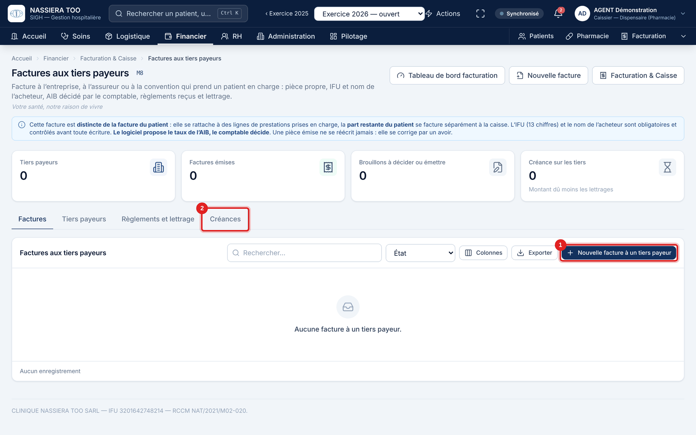
Les factures aux tiers payeurs : 1 Nouvelle facture, 2 Créances.
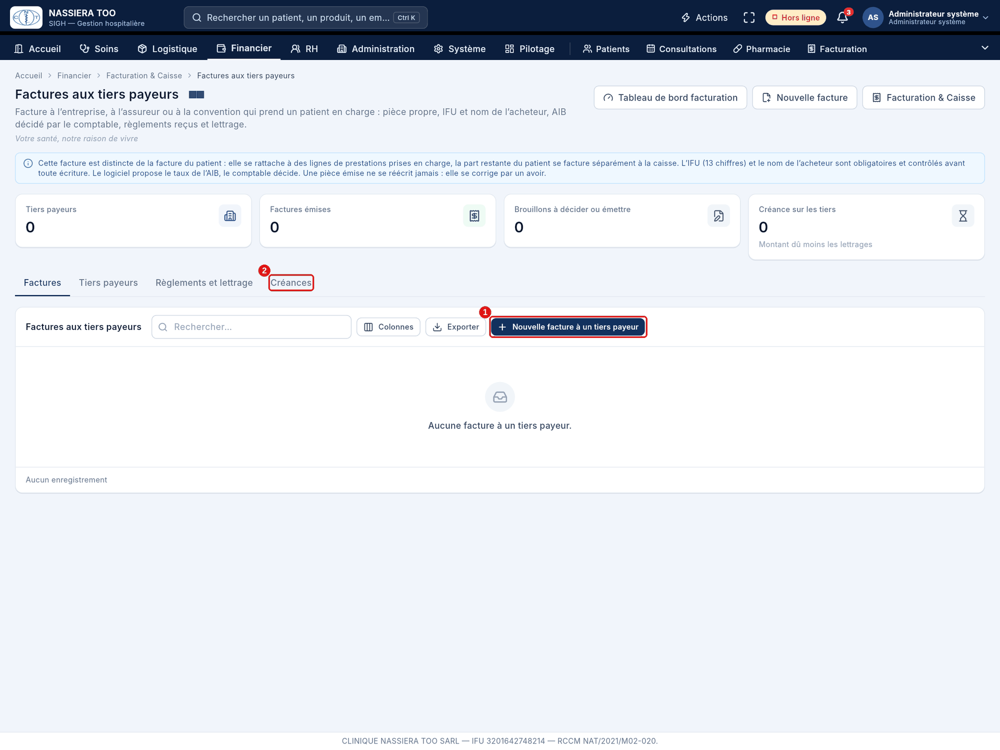
Sur le poste de bureau : 1 Nouvelle facture à un tiers payeur, 2 Créances.
Corriger : une facture émise ne se modifie pas. La correction est un avoir total, avec lettrage ou délettrage d’un règlement, réservé au geste « Corriger une facture à un tiers payeur ».
Créances : le montant dû moins les lettrages, par tiers, en tranches (30 et 90 jours à l’origine). Sans délai convenu, l’échéance est « non calculable » et l’écran le dit.
Un tiers n’est jamais facturé deux fois pour la même prestation. Un trop-perçu reste non lettré : le remboursement ne se gère pas ici.
Geste réservé « Émettre une facture à un tiers payeur » : détenu d’origine par Caissier — Dispensaire (Pharmacie), Directrice de l’Administration et des Finances (DAF), Comptable, Administrateur système. Sans ce geste, la commande est absente de l’écran et le moteur refuse aussi.
⚠️ Attention
Le caissier propose et émet ; il ne décide jamais de l’AIB. La décision de l’AIB appartient au geste « Imputer l’AIB » (comptable, Directrice Administrative, administrateur). La caisse du patient n’est pas modifiée : la part restante du patient se calcule et s’imprime, mais l’encaissement de la facture du patient encaisse toujours la pièce entière.
Qui voit quoi : « Factures aux tiers payeurs » (droits d’origine de la clinique)
Peut agir (créer, modifier)
Administrateur système, Directrice de l’Administration et des Finances (DAF), Caissier — Dispensaire (Pharmacie), Comptable
Consulte seulement
Direction / Gérance, Directeur Médical, Gestionnaire de Stock, Assistant Comptable
Ne voit pas l’écran
tous les autres rôles
Chapitre 14Assurances et créances
Vérifier la carte, appliquer la prise en charge, facturer l’assureur chaque mois.
Une carte expirée à la date de facturation entraîne la facturation intégrale au patient (RG-09). Vérifiez la carte à l’enregistrement, pas à la sortie.
Qui voit quoi : « Assurés & cartes » (droits d’origine de la clinique)
Peut agir (créer, modifier)
Administrateur système, Directrice de l’Administration et des Finances (DAF), Caissier — Dispensaire (Pharmacie), Comptable, Assistant Comptable
Consulte seulement
Direction / Gérance
Ne voit pas l’écran
tous les autres rôles
14.2 Suivre les prises en charge et facturer l’assureur
L’écran Prises en charge détaille, par facture, la Part assureur et la Part patient.
En fin de mois, ouvrez Factures mensuelles assureur et choisissez la compagnie.
Contrôlez l’onglet Relevé des prestations, puis cliquez sur Éditer le relevé et Éditer la facture mensuelle.
Suivez le paiement dans Créances et Relances.
ℹ️ Information
Une garantie et une couverture sont des versions datées : SIGH-CNT lit celle qui était en vigueur à la date de la pièce.
Chapitre 15MECeF : facture normalisée
Le suivi fiscal des factures certifiées par le boîtier MECeF de la caisse.
15.1 Suivre les factures normalisées
La rangée Financier ➔ MECeF — Facture normalisée comprend : Tableau de bord fiscal, Factures normalisées, Transmission & réponses, Avoirs & annulations, Journal des transactions et Configuration fiscale.
Ouvrez Factures normalisées.
Lisez la colonne Statut fiscal de chaque facture.
Ouvrez Transmission & réponses pour traiter les transmissions en attente et les rejets.
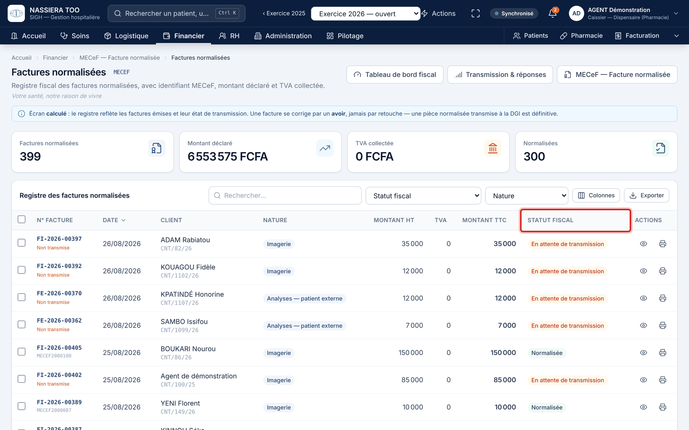
Les factures normalisées et leur statut fiscal.
Qui voit quoi : « Factures normalisées » (droits d’origine de la clinique)
Peut agir (créer, modifier)
Administrateur système, Directrice de l’Administration et des Finances (DAF), Caissier — Dispensaire (Pharmacie), Comptable
Consulte seulement
Direction / Gérance, Assistant Comptable
Ne voit pas l’écran
tous les autres rôles
⚠️ Attention
Le MECeF est un boîtier physique branché à la caisse, avec certification locale. Le pilotage du boîtier réel n’est pas encore éprouvé : il attend les réponses du fournisseur. Les écrans existent ; la certification réelle reste à vérifier sur site.
15.2 Choisir le mode de certification
La clinique certifie ses factures par le boîtier MECeF physique (mode d’origine) ou, plus tard, par l’e-MECeF. Le mode se règle sur l’écran de configuration fiscale.
La carte Mode de certification dit le Mode en vigueur : Boîtier physique par défaut.
Cliquez sur Régler le mode, choisissez le mode et validez.
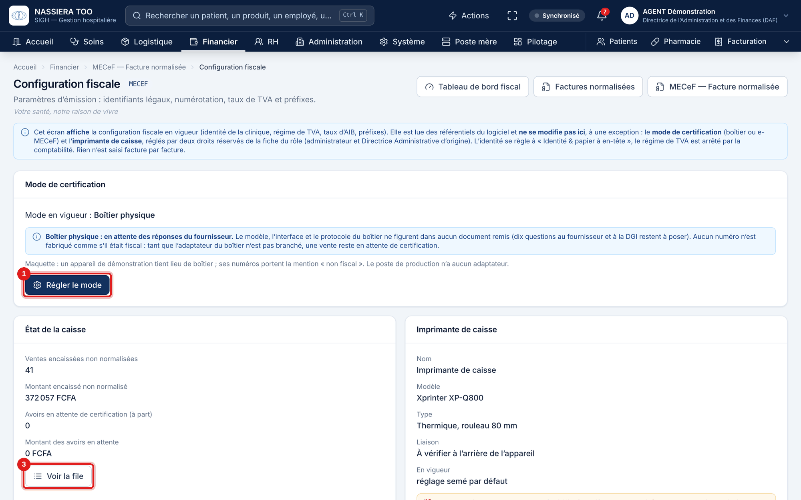
La configuration fiscale : 1 Régler le mode, 2 Régler l’imprimante (plus bas), 3 Voir la file.
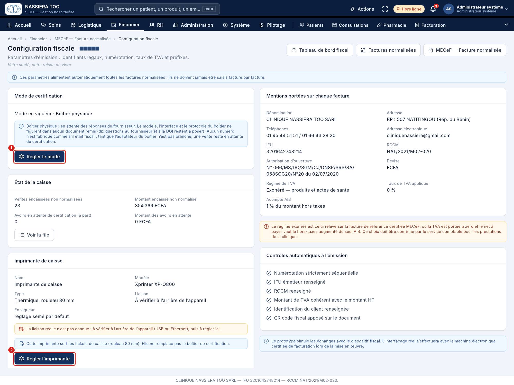
Sur le poste de bureau : la configuration fiscale et le réglage du mode.
Geste réservé « Régler le mode de facturation normalisée » : détenu d’origine par Administrateur système, Directrice de l’Administration et des Finances (DAF). Sans ce geste, la commande est absente de l’écran et le moteur refuse aussi.
🛑 Alerte
Aucun numéro n’est jamais fabriqué comme s’il était fiscal. Tant que l’appareil réel n’est pas branché, le mode boîtier dit « en attente des réponses du fournisseur » et une vente reste en attente de certification ; le mode e-MECeF dit « non configuré : dossier d’interface DGI requis ». Le bouton « Tester la connexion au dispositif » le dit aussi au lieu d’annoncer une connexion qui n’existe pas.
15.3 Lire l’état de la caisse
La carte État de la caisse compte ce qui est encaissé sans être encore normalisé :
Ventes encaissées non normalisées et leur Montant encaissé non normalisé : une vente encaissée dont la facture n’est pas encore certifiée.
Avoirs en attente de certification (à part) et leur montant : comptés à part, jamais mélangés aux ventes.
Si un montant n’est pas connu, l’écran écrit Non calculable : ce n’est pas zéro et le total n’est pas affirmé.
Le bouton Voir la file ouvre Financier ➔ MECeF — Facture normalisée ➔ Transmission & réponses, où l’on suit et retransmet les ventes.
15.4 Régler l’imprimante de caisse
La carte Imprimante de caisse montre le Nom, le Modèle (Xprinter XP-Q800), le Type (thermique, rouleau 80 mm), la Liaison et la date d’entrée en vigueur.
Regardez à l’arrière de l’appareil si la liaison est USB ou Ethernet : l’écran la marque « à vérifier » tant que personne ne l’a constatée.
Cliquez sur Régler l’imprimante, renseignez le nom et la liaison, et choisissez la date d’effet.
Validez. Le réglage est daté et se garde en historique.
Geste réservé « Régler l’imprimante de caisse » : détenu d’origine par Administrateur système, Directrice de l’Administration et des Finances (DAF). Sans ce geste, la commande est absente de l’écran et le moteur refuse aussi.
⚠️ Attention
Un réglage ne s’insère pas dans le passé : la date d’effet est aujourd’hui ou une date à venir, car des tickets sont déjà imprimés.
Chapitre 16Comptabilité SYSCOHADA
Écritures, dépenses journalières, balance, états financiers et clôture de l’exercice.
Renseignez Date de l’opération, Journal, Libellé de l’opération, Centre de coûts et Référence de la pièce justificative.
Pour chaque ligne, choisissez le Compte et saisissez le Débit ou le Crédit ; cliquez sur Ajouter la ligne.
Cliquez sur Enregistrer en brouillon pour finir plus tard, ou sur Valider l’écriture.
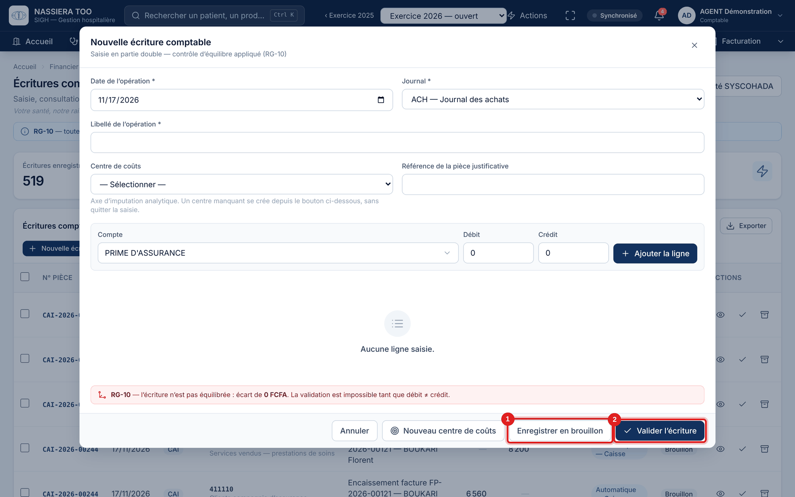
La fenêtre Nouvelle écriture comptable : 1 Enregistrer en brouillon, 2 Valider l’écriture.
⚠️ Attention
Une écriture ne se valide que si elle est équilibrée : total débit = total crédit (RG-10). Une écriture validée ne se réécrit plus : une erreur se corrige par une écriture de contrepassation.
ℹ️ Information
La plupart des écritures (ventes, encaissements, achats, paie) sont produites automatiquement par les autres modules ; la colonne Origine le dit.
Qui voit quoi : « Écritures comptables » (droits d’origine de la clinique)
Peut agir (créer, modifier)
Administrateur système, Directrice de l’Administration et des Finances (DAF), Comptable, Assistant Comptable
Renseignez Date de la transaction, Compte de trésorerie et Catégorie de dépenses ; joignez la photo du Reçu / facture (photo).
Ajoutez les lignes (Ajouter une ligne) puis cliquez sur Enregistrer.
Imprimez la pièce avec l’icône Imprimer la pièce ; État des dépenses imprime le récapitulatif.
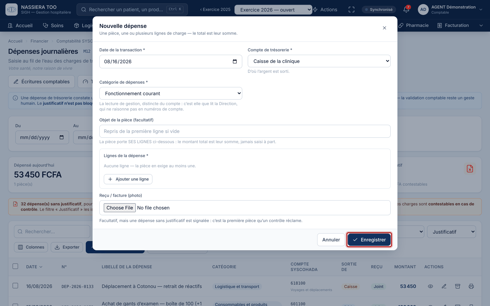
La fenêtre Nouvelle dépense.
Qui voit quoi : « Dépenses journalières » (droits d’origine de la clinique)
Peut agir (créer, modifier)
Administrateur système, Directrice de l’Administration et des Finances (DAF), Comptable, Assistant Comptable
Consulte seulement
Direction / Gérance
Ne voit pas l’écran
tous les autres rôles
16.3 Consulter la balance et les états
L’écran Balance générale & âgée a deux onglets : Balance générale et Balance âgée (tiers). Le bouton Imprimer la balance l’imprime.
La balance générale.
Les autres états : Grand livre, Compte de résultat, Tableau des flux de trésorerie, États financiers, Seuil de rentabilité, Comptabilité analytique, Budgets, Immobilisations & amortissements, Banques & rapprochements, Échéances fiscales & paiements, Calendrier fiscal mensuel.
ℹ️ Information
Le sélecteur d’exercice de la barre supérieure n’apparaît que sur les écrans qui suivent une année (comptabilité). Choisissez l’exercice avant de lire un état.
16.4 Clôturer un exercice
L’écran Exercices & clôtures conduit la clôture annuelle. Ses onglets : Exercices, Périodes de l’exercice, Lettrage des tiers, Comptes de résultat, Circuit de clôture.
Vérifiez dans Circuit de clôture qui démarre, qui passe l’inventaire, qui clôture et qui peut rouvrir.
Lancez la Pré-clôture et traitez les avertissements.
Faites clôturer par la personne désignée.
Ouvrez l’exercice suivant dans Bilan d’ouverture & à-nouveaux.
Exercices & clôtures : l’onglet Circuit de clôture.
🛑 Alerte
Un exercice clos n’accepte plus aucune pièce : même une pièce saisie sur un autre poste et datée de cet exercice est refusée à la synchronisation. Avant de clôturer, assurez-vous que tous les postes sont synchronisés (pastille « Synchronisé »).
ℹ️ Information
Les soldes d’ouverture inconnus sont affichés « inconnus », jamais zéro. Le circuit de clôture est un réglage daté, réservé au geste « Régler le circuit de la clôture annuelle ».
16.5 Confirmer le versement CNSS
Le versement CNSS est marqué « à confirmer, non arrêté » tant que la CNSS n’a pas confirmé la règle. La confirmation se fait par un bouton, avec une référence obligatoire.
Ouvrez Système ➔ Configuration Clinique ➔ Paramètres comptables & obligations et repérez l’obligation CNSS-VERSEMENT (versement dans les quinze jours, employeur de plus de vingt salariés : mensuel).
Cliquez sur Confirmer dans sa ligne.
Saisissez la Référence de la confirmation (obligatoire : courrier, e-mail ou page de la CNSS qui confirme, avec sa date), puis validez. La confirmation est signée, journalisée et versionnée par date.
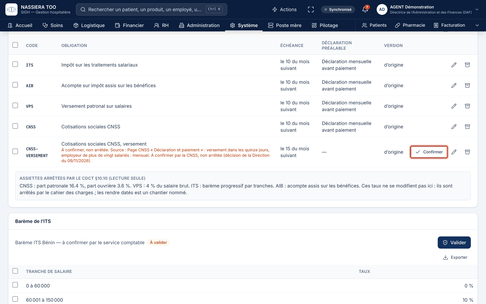
Les obligations fiscales : 1 Confirmer, dans la ligne CNSS-VERSEMENT.
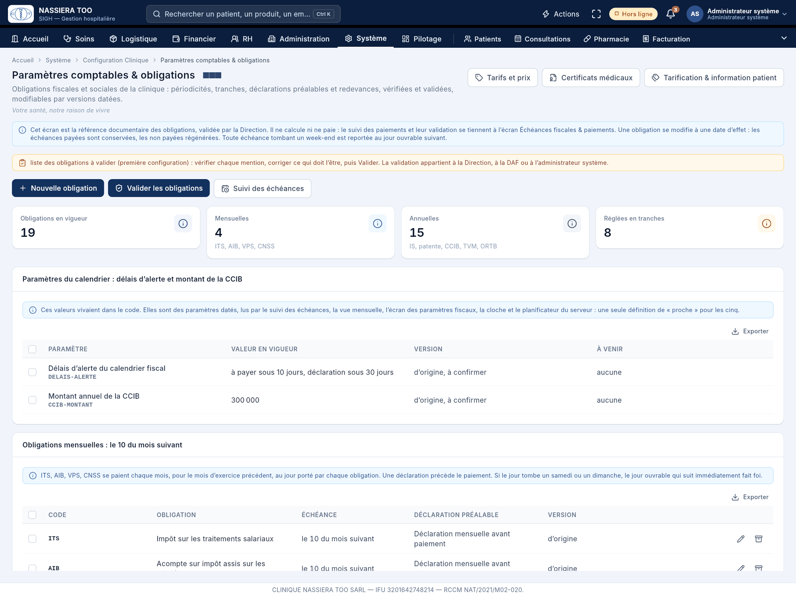
Sur le poste de bureau : 1 Confirmer la ligne CNSS-VERSEMENT.
Geste réservé « Confirmer une obligation fiscale » : détenu d’origine par Administrateur système, Directrice de l’Administration et des Finances (DAF), Direction / Gérance. Sans ce geste, la commande est absente de l’écran et le moteur refuse aussi.
ℹ️ Information
Le calendrier fiscal mensuel (Financier ➔ Comptabilité SYSCOHADA ➔ Calendrier fiscal mensuel) affiche ensuite l’échéance du versement avec sa date confirmée. Les assiettes des cotisations (CNSS part patronale 16,4 %, part ouvrière 3,6 %, VPS 4 %) sont celles du cahier des charges.
16.6 Imputer l’AIB opération par opération
L’AIB ne s’applique pas tout seul : le comptable l’impute opération par opération. Le logiciel propose le taux du barème à la date de l’opération ; il ne décide jamais.
Ouvrez Système ➔ Configuration Clinique ➔ Barème de l’AIB et cliquez sur l’onglet Imputations (les autres onglets sont Barème par version, Situations et lignes, Réglages, Achats à écrire).
Choisissez l’opération : un achat auprès d’un fournisseur, le règlement d’un prescripteur ou d’un prestataire externe, ou un règlement reçu d’un assureur.
Saisissez la base (montant hors taxes), acceptez ou changez le taux proposé, indiquez le compte et le motif, et enregistrez.
Une imputation se corrige par une annulation motivée (archivage) : elle ne s’efface pas.
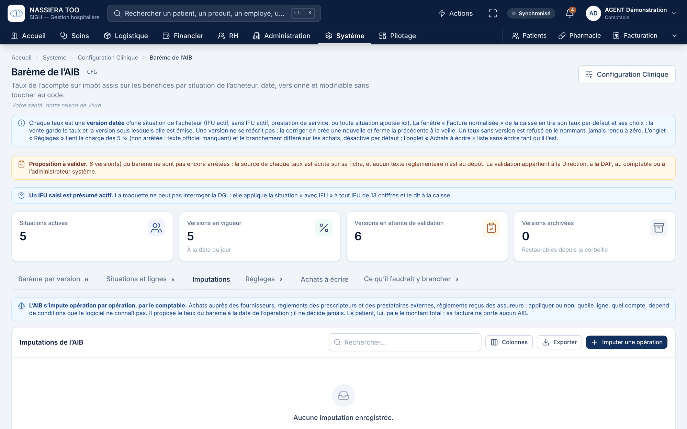
L’onglet Imputations du barème de l’AIB (vue du Comptable).
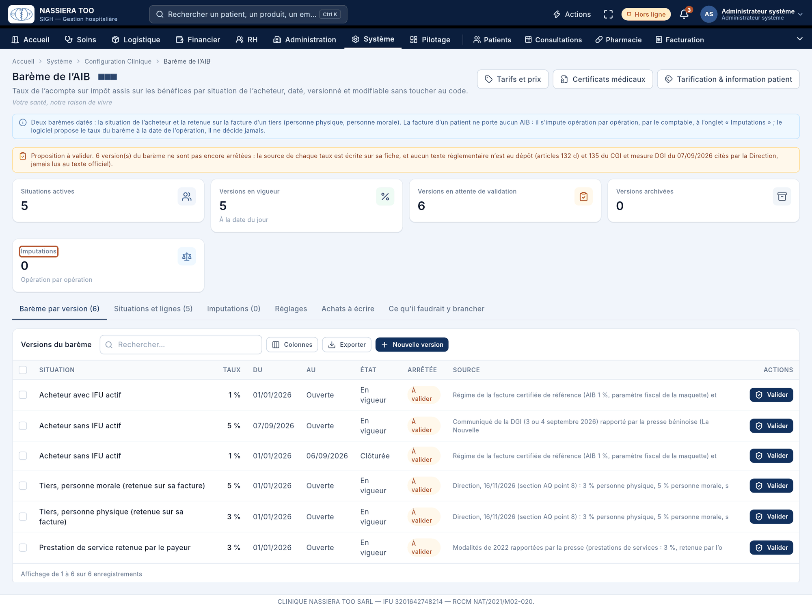
Sur le poste de bureau : 1 onglet Imputations du barème de l’AIB.
Geste réservé « Imputer l’AIB opération par opération » : détenu d’origine par Comptable, Directrice de l’Administration et des Finances (DAF), Administrateur système. Sans ce geste, la commande est absente de l’écran et le moteur refuse aussi.
⚠️ Attention
Deux barèmes datés coexistent : la situation de l’acheteur (1 %, 5 %, 3 %) et la retenue sur la facture d’un tiers (3 % pour une personne physique, 5 % pour une personne morale). Ces derniers taux sont des hypothèses à confirmer par la Direction : les textes officiels n’ont pas été relus. L’imputation n’écrit aucune écriture comptable pour l’instant.
Le droit d’écrire une version du barème est « Écrire le barème de l’AIB » (détenu d’origine par Comptable, Administrateur système, Directrice de l’Administration et des Finances (DAF)) ; l’onglet Nouvelle version demande un motif. Tout changement du validateur d’une famille exige aussi un motif.
Chapitre 17Ressources humaines et paie
Planning et gardes, congés, badges, paie et primes.
Choisissez la semaine et le service ; le tableau montre chaque agent et ses vacations (Garde 24h, Repos 24h, Repos 48h, Garde soins, Garde hospitalisation, Perm., Soirée…).
Posez ou changez une vacation dans la case de l’agent et du jour.
Pour une exception, utilisez Déroger pour un agent ; pour un nouveau cycle, Nouveau régime.
Imprimez avec Imprimer le planning.
Le planning des gardes (noms du personnel masqués).
ℹ️ Information
Les primes de garde et de permanence sont calculées depuis le planning validé et la grille en vigueur (RG-11). Un planning non validé ne produit pas de prime.
Qui voit quoi : « Planning & gardes » (droits d’origine de la clinique)
Peut agir (créer, modifier)
Administrateur système, Directrice de l’Administration et des Finances (DAF), Surveillant
Consulte seulement
Direction / Gérance
Ne voit pas l’écran
tous les autres rôles
17.2 Enregistrer un congé
Ouvrez RH ➔ Ressources humaines ➔ Congés.
Cliquez sur Nouveau.
Renseignez Agent, Nature du congé, Date de début, Date de fin, Remplaçant désigné et Motif.
Cliquez sur Créer. La décision s’inscrit dans la colonne Décision.
La fenêtre Nouveau congé.
17.3 Émettre un badge
L’écran Badges du personnel a les onglets Badges en cours, Retirés, Agents sans badge et À décider par la Direction. Le bouton Émettre un badge crée le badge, imprimé au format carte CR80 (sans IFU ni RCCM). L’écran Vérifier un badge contrôle un badge présenté.
17.4 Calculer la paie
Ouvrez RH ➔ Paie & Primes ➔ Calcul de la paie.
Cliquez sur Lancer le calcul. Le tableau montre, par agent, la base, les primes, le brut, les retenues (CNSS, ITS, avances) et le Net à payer.
Contrôlez, puis cliquez sur Générer les bulletins.
Faites valider par la Direction (Validation Direction) et imprimez Éditer le journal de paie.
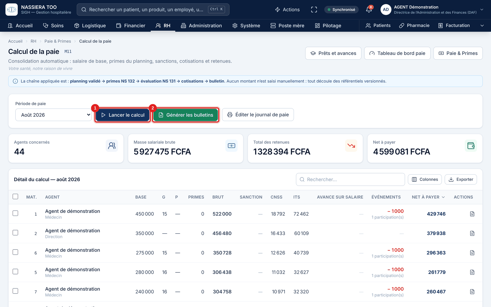
Le calcul de la paie : 1 Lancer le calcul, 2 Générer les bulletins.
ℹ️ Information
Les cotisations sociales sont calculées automatiquement : part patronale 16,4 %, part ouvrière 3,6 %.
⚠️ Attention
Les écrans RH et paie sont réservés aux profils RH et comptables (RG-13). Le rôle « Responsable RH » est archivé dans la configuration actuelle : ces écrans sont tenus par la DAF, la Direction et l’administrateur.
17.5 Ouvrir la fiche de mon équipe (Surveillant)
Le Surveillant n’ouvre pas la fiche complète du personnel (elle porte le salaire, la CNSS, l’assurance et les primes). Il ouvre une fiche restreinte, limitée aux agents de son service, sans lui-même.
Ouvrez RH ➔ Ressources humaines ➔ Fiche de mon équipe.
Dans Agent de l’équipe, choisissez l’agent. Le bandeau dit « Équipe : N agent(s) ».
Lisez l’onglet Informations (matricule, nom, sexe, fonction, poste, service), Planning personnalisé et Planning du mois.
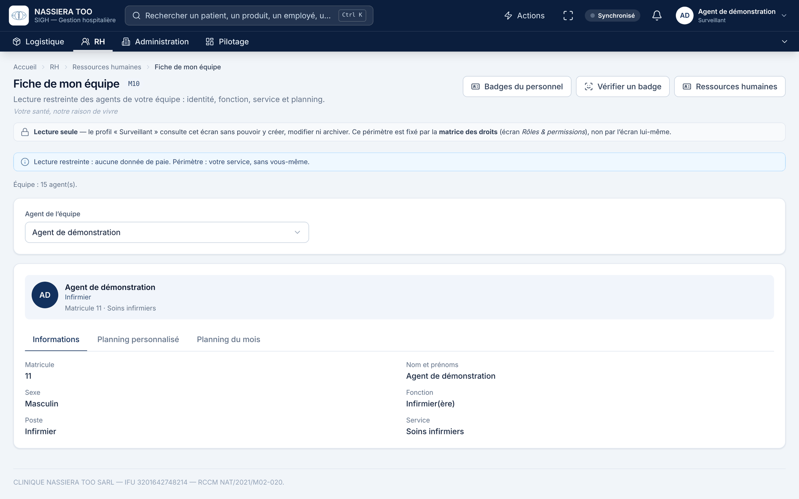
La fiche de mon équipe (Surveillant), noms masqués.
Geste réservé « Ouvrir la fiche du personnel de son équipe » : détenu d’origine par Surveillant. Sans ce geste, la commande est absente de l’écran et le moteur refuse aussi.
Lecture seule : aucune donnée de paie, aucun bouton de création, de modification ou d’archivage.
Si votre session n’est pas celle d’un agent du personnel rattaché à un service, l’écran refuse en le disant : jamais « tout le personnel ».
Le Surveillant gère aussi le planning de son équipe : voir la fiche « Planning personnalisé d’un agent ». Il ne règle pas son propre planning (c’est à la Directrice Administrative ou à l’administrateur).
17.6 Régime individuel : déroger ou remplacer
Chaque catégorie suit son régime de travail. Un agent peut avoir un régime individuel en deux modes, choisis dans le formulaire :
Déroge : seuls les champs renseignés changent, le reste suit la catégorie.
Remplace : rien n’est hérité. Les vacations et le repos sont exigés ; ce qui n’est pas dit reste « non défini ».
Ouvrez RH ➔ Ressources humaines ➔ Planning & gardes. Sous les régimes par catégorie, la section des régimes individuels liste les agents concernés avec leur Mode.
Cliquez sur Déroger pour un agent (ou sur Régler dans la ligne d’un agent).
Choisissez le Mode, les vacations, le repos, le cycle, l’honoraire, la date d’effet (jamais dans le passé) et validez.
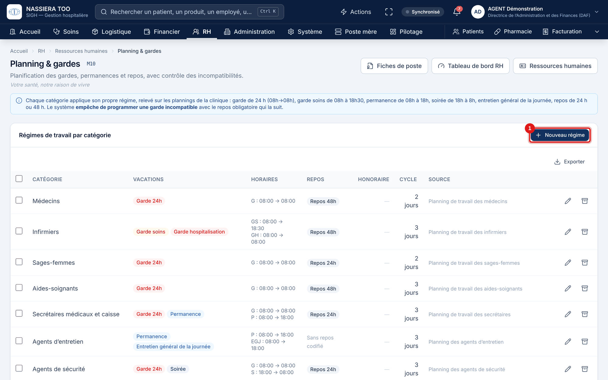
Planning et gardes : 1 Nouveau régime (régimes par catégorie). Le bouton Déroger pour un agent est plus bas.
Geste réservé « Régler le régime individuel d’un agent » : détenu d’origine par Administrateur système, Directrice de l’Administration et des Finances (DAF). Sans ce geste, la commande est absente de l’écran et le moteur refuse aussi.
ℹ️ Information
Chaque version est datée et ne se réécrit pas. Les vacations déjà posées gardent le régime sous lequel elles l’ont été. Un régime individuel ne voyage pas encore d’un poste à l’autre.
17.7 Planning personnalisé d’un agent
Le planning personnalisé est un modèle (une semaine type ou un mois type) rattaché à un agent. Il ne compte pour aucune prime : seules les vacations validées du planning comptent (RG-11).
Ouvrez la fiche de l’agent (RH ➔ Ressources humaines ➔ Fiche employé, bouton Choisir un agent) puis l’onglet Planning personnalisé.
Cliquez sur la commande de définition, choisissez un modèle hebdomadaire ou mensuel, remplissez les jours et la date d’effet, et enregistrez : une version datée est créée.
Cliquez sur Appliquer le planning personnalisé et choisissez la période (92 jours au plus). Les vacations sont écrites validées.
Lisez le compte rendu : les jours déjà occupés ne sont jamais écrasés et sont listés ; un jour refusé par le contrôle de la grille (repos, double affectation) est nommé sans bloquer les autres.
Geste réservé « Définir le planning personnalisé d’un agent » : détenu d’origine par Administrateur système, Directrice de l’Administration et des Finances (DAF), Surveillant. Sans ce geste, la commande est absente de l’écran et le moteur refuse aussi.
⚠️ Attention
Dans un modèle hebdomadaire, la semaine se lit en boucle : une garde le dimanche et une garde le lundi se heurtent. Dans un modèle mensuel, le 31 puis le 1er ne se heurtent pas.
17.8 Les valeurs d’attente de la fiche du personnel
Quatre valeurs de la fiche d’un agent peuvent être des valeurs d’attente, c’est-à-dire des valeurs tirées en attendant la bonne : le salaire, la catégorie, la date d’embauche et le numéro CNSS. Chaque champ concerné porte une marque qui le dit.
La marque disparaît quand vous modifiez le champ, ou quand vous cliquez sur Confirmer et donnez un motif.
Un agent créé sans ces valeurs n’en porte aucune, et aucune marque.
La paie ne compte que les vacations validées : recalculez le mois par RH ➔ Paie & Primes ➔ Calcul de la paie si des bulletins ont été calculés avant la correction.
Geste réservé « Confirmer une valeur d’attente de la fiche du personnel » : détenu d’origine par Administrateur système, Directrice de l’Administration et des Finances (DAF). Sans ce geste, la commande est absente de l’écran et le moteur refuse aussi.
ℹ️ Information
Un Surveillant, depuis la fiche de son équipe, ne voit ni ne confirme jamais une valeur d’attente (refus VALEUR_ATTENTE_HORS_PORTEE).
Chapitre 18Administration, documents et états
Courrier, réunions, validations en attente, enquêtes, gestion documentaire et bibliothèque des états.
Renseignez le sens (départ ou arrivée), la date, le correspondant, l’objet, la nature et la personne à qui il est affecté.
Enregistrez ; joignez le scan du courrier.
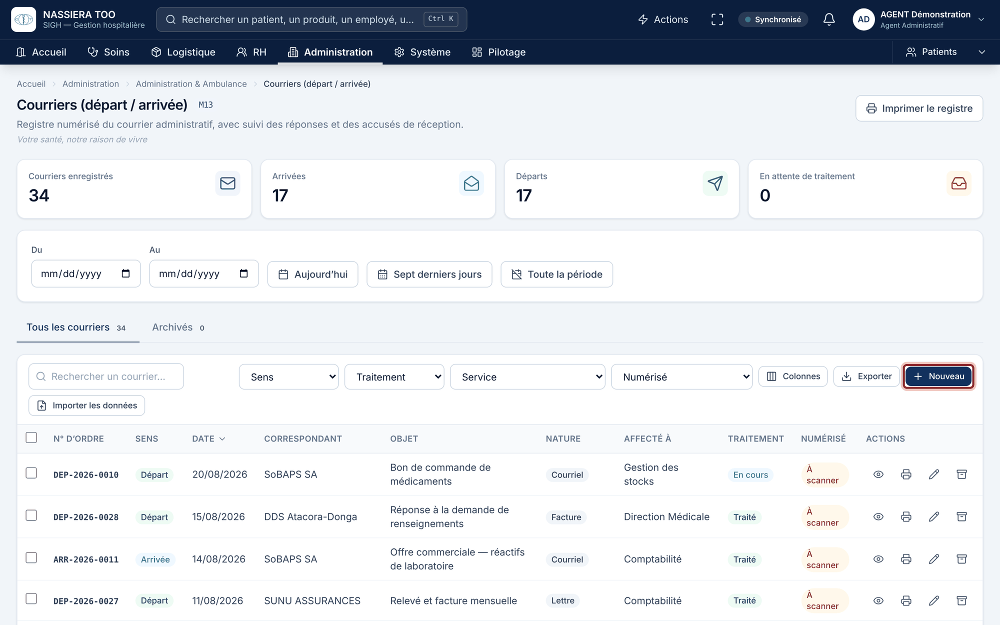
Le registre des courriers.
Qui voit quoi : « Courriers (départ / arrivée) » (droits d’origine de la clinique)
Peut agir (créer, modifier)
Administrateur système, Direction / Gérance, Directrice de l’Administration et des Finances (DAF), Réception / Accueil, Agent Administratif, Assistant de Direction
Consulte seulement
aucun rôle
Ne voit pas l’écran
tous les autres rôles
18.2 Traiter les validations en attente
L’écran Validations en attente réunit tout ce qui attend une décision : changements de prix, bons de besoins, référentiels. Chaque carte porte un bouton Ouvrir ou Y aller vers l’écran où se prend la décision.
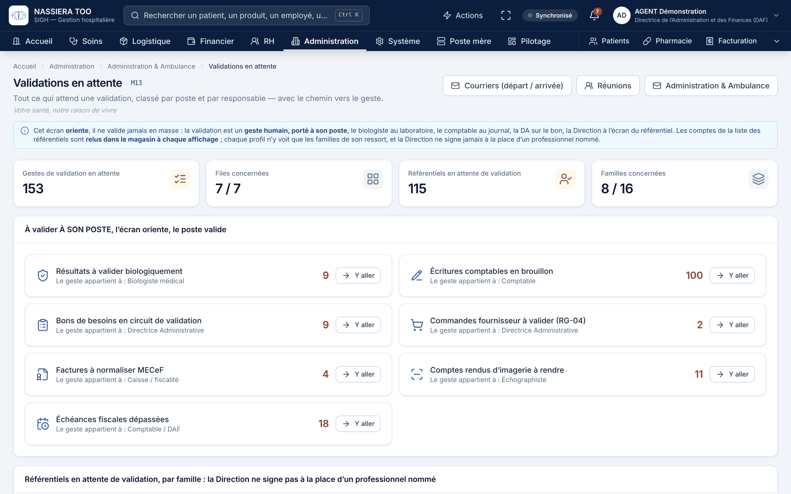
Le centre des validations en attente, vu par la DAF.
ℹ️ Information
Une décision peut se prendre sur n’importe quel poste. Prise sur un poste autre que la mère, elle est signée, déposée, puis appliquée par la mère : une pastille « N décisions en attente de la mère » le rappelle. Ce n’est jamais un blocage.
18.3 Éditer un état
Ouvrez Administration ➔ Rapports & Impression ➔ Bibliothèque des états, ou Actions ➔ Éditer un état.
Choisissez l’état et cliquez sur Éditer.
Réglez la période et les filtres, puis imprimez ou exportez.
La bibliothèque des états, vue par la Direction.
Les autres écrans : Réunions, Notes de service, Plan annuel de travail, Interventions ambulance, Répertoire des ambulances, Parc technique & maintenance, Enquêtes & questionnaires, Satisfaction des patients, Bibliothèque documentaire, Workflow de validation, Archivage & conservation, Générateur de rapports, Historique des éditions.
18.4 Le plan annuel de travail
Le plan annuel de travail se tient par exercice : celui du jour s’ouvre par défaut. Chaque action a une référence PA-AAAA-NNN, un axe, des trimestres, un responsable choisi dans le personnel ou l’organigramme (jamais un texte libre), un budget prévu et un indicateur.
Ouvrez Administration ➔ Administration & Ambulance ➔ Plan annuel de travail ; choisissez l’exercice.
Cliquez sur Nouvelle action, renseignez l’action, l’axe, les trimestres T1 à T4, le responsable, le budget prévu, l’indicateur et la cible, puis enregistrez.
Suivez l’avancement (état, pourcentage, budget réalisé, valeur atteinte, observations). Un budget non renseigné s’affiche « non renseigné », jamais zéro.
Quand le plan est arrêté, la Direction l’adopte. Le contenu ne change plus ensuite que par version datée ; le suivi reste libre.
Imprimez avec Imprimer le plan ou Imprimer le bilan. Les signataires se règlent avec Signataires de l’impression (un à quatre, par fonction).
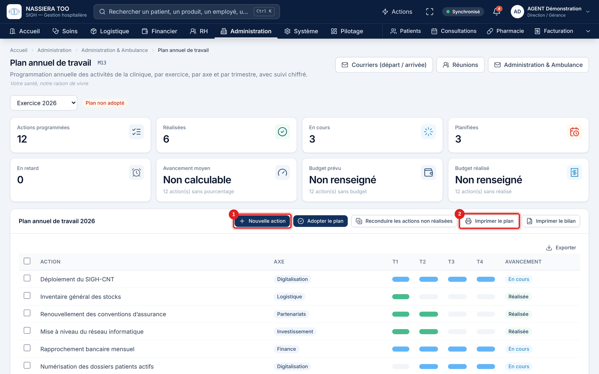
Le plan annuel de travail : 1 Nouvelle action, 2 Imprimer le plan.
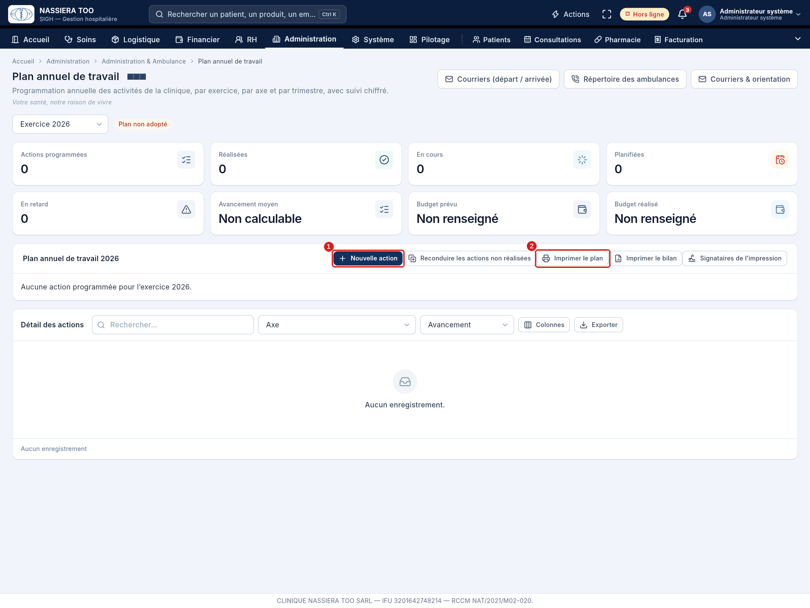
Sur le poste de bureau : 1 Nouvelle action, 2 Imprimer le plan.
Reconduire les actions non réalisées copie, une seule fois par action, celles d’un exercice précédent vers le nouveau, suivi remis à zéro.
Une action non réalisée dont le dernier jour du trimestre de fin est passé déclenche une alerte de retard (une seule par action), qui retombe quand l’action est réalisée ou replanifiée.
Pour ajouter une action à un plan déjà adopté, utilisez « Ajouter après adoption » et donnez un motif.
Geste réservé « Adopter le plan annuel de travail d’un exercice » : détenu d’origine par Direction / Gérance, Directrice de l’Administration et des Finances (DAF). Sans ce geste, la commande est absente de l’écran et le moteur refuse aussi.
ℹ️ Information
Le plan annuel se synchronise entre les postes mais ne va jamais sur un téléphone. Le jeu de démonstration de la maquette sème douze actions ; le poste de bureau part avec un plan vide.
18.5 Recueillir l’avis des patients en ligne (satisfaction)
Un questionnaire de satisfaction peut être rempli sur le téléphone du patient, par une adresse publique ou par un code QR. La page est un formulaire seul : ce n’est pas un portail patient. Les réponses sont chiffrées dans le navigateur du patient avant d’être envoyées ; le relais ne les lit jamais, seul le poste mère les ouvre.
Ouvrez Administration ➔ Administration & Ambulance ➔ Enquêtes & questionnaires. Onglet Modèles : choisissez l’enquête, cliquez sur Partager à un tiers (icône de partage de la ligne).
Dans Recueil, choisissez Anonyme (aucun lien vers un dossier patient) ou Nominatif. Dans Où le tiers répond-il ?, choisissez En ligne : adresse publique ou code QR, le Point de collecte (accueil, consultation, laboratoire, pharmacie, maternité, hospitalisation, sortie) et la date d’expiration du lien.
L’onglet Liens de partage liste le lien. Cliquez sur Afficher le lien et le QR.
Cliquez sur Imprimer l’affiche (A4) : le bloc « À afficher en salle d’attente » donne l’affiche avec le code QR. Copier l’adresse copie le lien.
Pour arrêter la collecte, cliquez sur Révoquer le lien : la page répond « Ce lien n’est plus valable ».
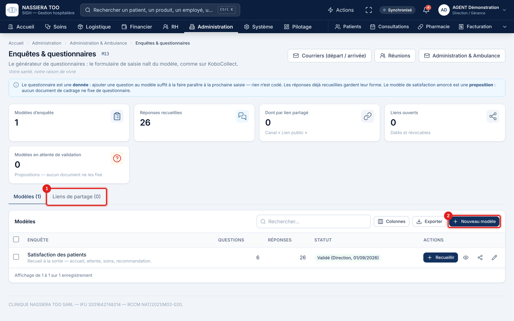
Enquêtes et questionnaires : 1 Liens de partage, 2 Nouveau modèle.
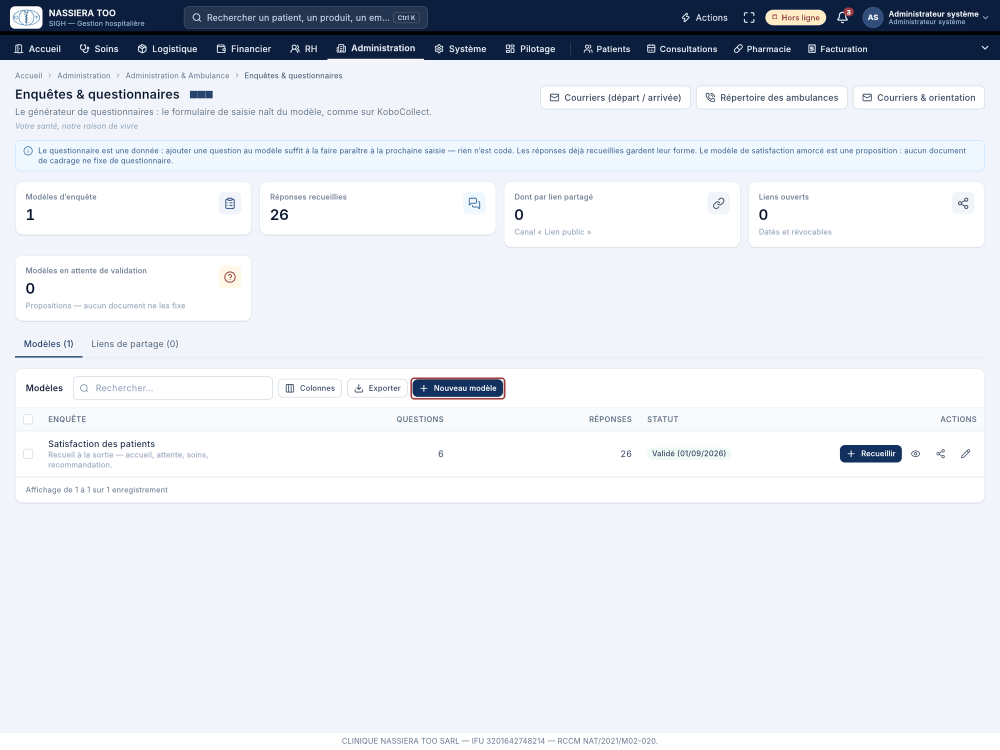
Sur le poste de bureau : 1 Nouveau modèle.
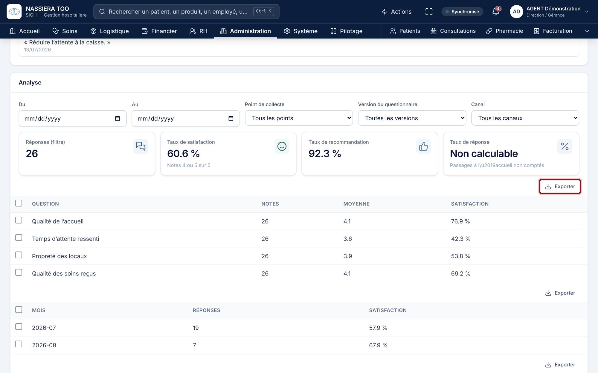
La satisfaction des patients : notes par question, taux et commentaires.
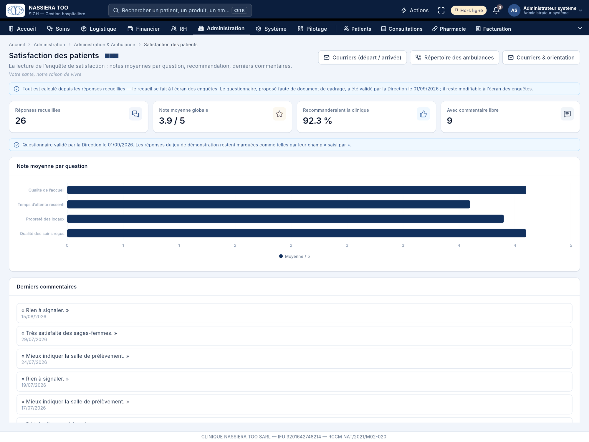
Sur le poste de bureau : la satisfaction des patients.
L’écran Administration ➔ Administration & Ambulance ➔ Satisfaction des patients donne l’analyse : Réponses recueillies, Note moyenne globale, Recommanderaient la clinique, Avec commentaire libre, la note par question, l’évolution par mois et le résultat par point de collecte.
ℹ️ Information
Le taux de satisfaction compte les notes 4 ou 5 sur les notes valides. Le taux de réponse est « non calculable » tant que les passages à l’accueil ne sont pas comptés : ce n’est pas zéro.
⚠️ Attention
La collecte en ligne est désactivée par défaut : une page publique ne s’ouvre pas sans geste. La page exige un navigateur récent (Chrome 133, Firefox 130, Safari 17) et le dit sinon ; un téléphone plus ancien ne peut pas répondre. Aucun nom, aucun numéro de dossier ni aucune donnée de santé ne doit figurer dans une réponse : le poste mère refuse la réponse qui en contient.
Chapitre 19Système et pilotage
Ce que les utilisateurs voient du domaine Système, et les tableaux de bord du Pilotage.
19.1 Le domaine Système
Le domaine Système (utilisateurs, rôles, sauvegardes, configuration de la clinique, poste mère) est réservé à l’Administrateur système et à la DAF. Il est décrit dans le Manuel administrateur.
Les autres rôles n’y voient que la rangée Importation de données, limitée aux jeux sur lesquels ils ont un droit (chapitre « Les gestes communs »).
ℹ️ Information
Chaque agent peut demander à l’administrateur la réinitialisation de son mot de passe (lien Mot de passe oublié ?). Pour changer de rôle, de secteur ou obtenir un droit, adressez-vous à l’administrateur : un agent ne modifie jamais ses propres droits.
19.2 Les tableaux de bord du pilotage
Le domaine Pilotage réunit les tableaux de bord de la Direction (Direction, Statistiques de la Direction, Tableau de bord dynamique croisé, Tableau de bord décisionnel), les statistiques par activité et les tableaux de bord de chaque poste.
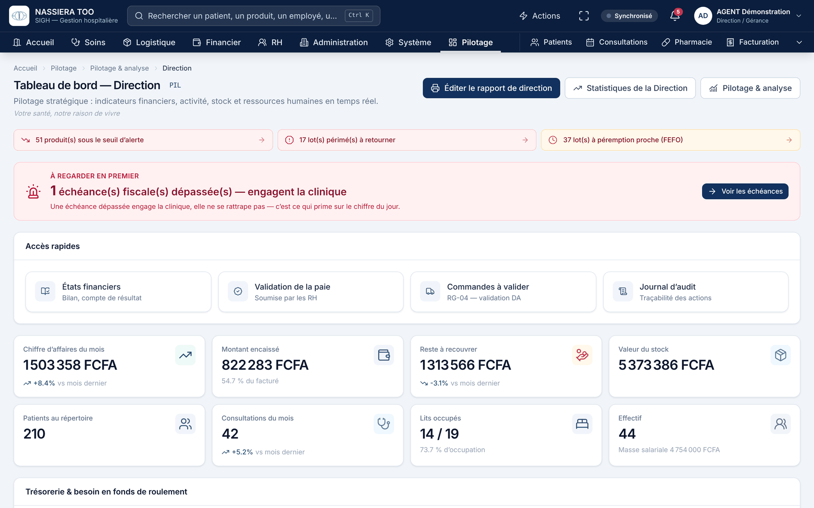
Le tableau de bord de la Direction.
ℹ️ Information
Chaque indicateur est calculé à partir des données saisies. Un indicateur qui ne peut pas être calculé (donnée manquante) est affiché « non calculable », jamais zéro.
Qui voit quoi : « Direction », « Statistiques de la Direction », « Tableau de bord dynamique croisé » (droits d’origine de la clinique)
Peut agir (créer, modifier)
Administrateur système, Direction / Gérance, Directeur Médical, Directrice de l’Administration et des Finances (DAF), Comptable
Consulte seulement
aucun rôle
Ne voit pas l’écran
tous les autres rôles
19.3 Les SMS automatiques de la clinique
La clinique envoie deux sortes de SMS, calculés par le poste mère et envoyés par le relais :
le rappel de rendez-vous, la veille à 18 h (et, pour un rendez-vous vu après cet envoi, le matin même à 7 h, heure à valider) ;
les vœux d’anniversaire, à 9 h, pour les patients et pour le personnel.
Les modèles ont cinq variables au plus et aucun mot médical : le SMS ne dit ni le médecin, ni le service, ni le motif. Seuls les patients reçoivent des SMS ; les alertes du personnel passent par la cloche et le son du poste.
Ouvrez Système ➔ Configuration Clinique ➔ Passerelle SMS. Les cartes d’en-tête disent la Passerelle (configurée ou non), l’Activation, le Dernier test et les Envois aujourd’hui.
Dans Réglages de la passerelle, choisissez le Fournisseur (Twilio par défaut, ou Vonage), le Plafond par jour, l’Expéditeur et les heures calmes (21 h à 7 h à l’origine : un message non urgent attend la fin des heures calmes).
Cliquez sur Enregistrer la passerelle. Les identifiants du fournisseur (Account SID, jeton, clé API) ne s’affichent jamais : l’écran dit seulement « défini » ou « non défini ».
Dans Test d’envoi, saisissez un numéro de test au format international et cliquez sur Tester l’envoi. L’écran dit « accepté par le fournisseur » avec son identifiant, ou un refus nommé avec le geste qui le corrige. Accepté ne veut pas dire reçu : vérifiez sur le téléphone.
Cochez Passerelle active pour activer les envois automatiques.
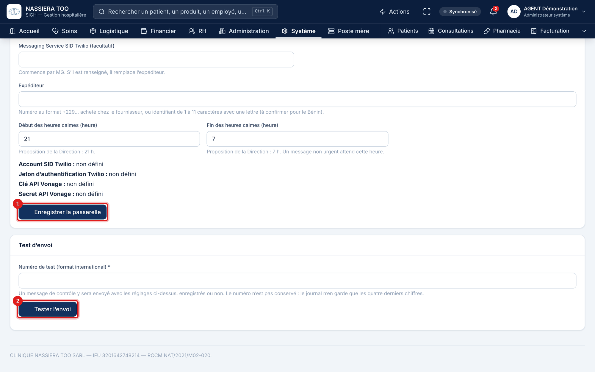
La passerelle SMS : 1 Enregistrer la passerelle, 2 Tester l’envoi.
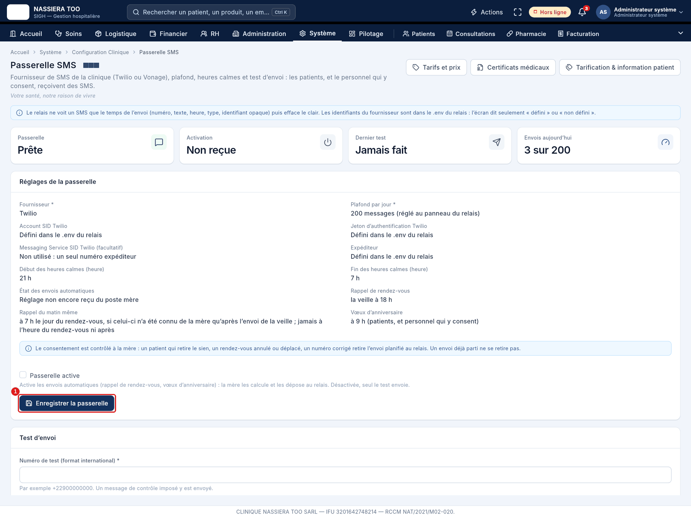
Sur le poste de bureau : la passerelle SMS et ses cartes d’état.
Geste réservé « Régler la passerelle SMS » : détenu d’origine par Administrateur système, Directrice de l’Administration et des Finances (DAF). Sans ce geste, la commande est absente de l’écran et le moteur refuse aussi.
🛑 Alerte
Les envois automatiques sont désactivés par défaut : activez-les seulement quand la passerelle est testée. La couverture du Bénin, l’expéditeur alphanumérique et le coût d’un message n’ont jamais été vérifiés avec un vrai compte : la première semaine, gardez un plafond bas.
Le consentement se règle sur la fiche : la case Accepte de recevoir des SMS de la clinique du dossier patient (cochée par défaut) et la case Accepte de recevoir les vœux d’anniversaire par SMS de la fiche du personnel, décochée par défaut. Sans consentement, aucun SMS ne part.
Administration ➔ Administration & Ambulance ➔ Journal des envois SMS garde une ligne par envoi tenté : motif, statut, code du refus, fournisseur et numéro masqué (les quatre derniers chiffres seulement). Filtres : Aujourd’hui, Sept derniers jours, Toute la période ; onglets Tous les envois et Archivés.
Le journal des envois SMS.Sur le poste de bureau : le journal des envois SMS.
ℹ️ Information
Un rendez-vous pris juste avant un rappel qui part trop tard n’est pas rappelé à l’heure du rendez-vous ni après. Un message est refusé s’il a plus de 3 heures de retard sur son heure.
19.4 L’identité de la clinique sur les pièces (RCCM)
L’identité imprimée est unique et versionnée par date : IFU 3201642748214 et RCCM NAT/2021/M02-020 à partir du 16 novembre 2026 (date à confirmer par la Direction). L’ancien numéro RB/NAT/2016-B-268 est la version 1, close au 15 novembre 2026. Une pièce lit l’identité de sa propre date : une facture d’octobre garde l’ancien numéro, une facture de décembre porte le nouveau.
Ouvrez Système ➔ Configuration Clinique ➔ Paramètres fiscaux (IFU / RCCM) (paramètres fiscaux) ou Système ➔ Configuration Clinique ➔ Identité & papier à en-tête (identité et papier à en-tête).
Modifiez la mention, choisissez la date d’effet, puis cliquez sur Enregistrer.
Si la mention est une première configuration, cliquez sur Valider l’identité légale : la validation appartient à la Direction, à la DAF ou à l’administrateur.
Contrôlez avec Prévisualiser un état.
Les paramètres fiscaux : 1 Enregistrer.Sur le poste de bureau : les paramètres fiscaux, version 2 en force (RCCM NAT/2021/M02-020).Identité et papier à en-tête : 1 Enregistrer, 2 Prévisualiser un état.
Le droit de poser l’identité est celui d’écrire l’un de ces deux écrans (administrateur, Direction, DAF d’origine). Sur un poste fileul, la modification est signée et déposée ; la mère la revérifie sous le rôle de l’auteur et la propage à tous les postes.
Les options d’impression (logo de part et d’autre, filigrane) sont un réglage de clinique qui voyage avec l’identité.
Un poste déjà installé qui n’avait que la version 1 reçoit la version 2 au démarrage, sans réécrire la version 1. Un fileul rattaché ne migre pas : il la reçoit de la mère.
Rien de l’identité ne part vers un téléphone.
Geste réservé « Valider l’identité légale et la configuration fiscale » : détenu d’origine par Direction / Gérance, Directrice de l’Administration et des Finances (DAF), Administrateur système. Sans ce geste, la commande est absente de l’écran et le moteur refuse aussi.
Chapitre 20L’application mobile
Le téléphone du soignant en tournée, du médecin et de la sage-femme à domicile, et la réception de secours.
20.1 Les profils du téléphone
Le téléphone est attribué à un agent. Son accueil dépend de son profil, et chaque profil ne voit que ses écrans :
Profil
Accueil
Ce qu’il fait
Soignant (infirmier)
Ma tournée
Agenda du jour, dossiers du lot, constantes, notes de soins.
Médecin
Mes visites
Consultation à domicile, Prescription, Demande d’analyses.
Ouvrir un dossier, Orienter un patient, quand le poste de l’accueil est indisponible.
⚠️ Attention
Les captures de ce chapitre viennent du simulateur mobile de la maquette. L’application Flutter (dossier apps/mobile) reprend ces écrans ; son accueil soignant s’intitule Ma tournée avec les onglets Agenda du jour et Dossiers du lot, et la réception s’intitule Réception de secours. Elle n’a pas été éprouvée sur un téléphone réel.
ℹ️ Information
Le téléphone ne parle jamais directement au poste mère : il passe par le relais web, et tout ce qu’il envoie est chiffré. Il ne travaille que sur le lot de tournée que la mère lui a préparé.
20.2 Appairer le téléphone
L’appairage relie le téléphone à la clinique. Il se fait une seule fois, avec l’administrateur.
Ouvrez l’application. L’écran Appairer ce téléphone s’affiche.
Saisissez le Code d’appairage remis par l’administrateur (il le crée sur le poste mère, écran Appareils et appairage).
Touchez Scanner le QR et visez la Clé de clinique affichée sur le poste mère.
Vérifiez le Profil de ce téléphone (Soignant, Médecin, Sage-femme ou Réception) et, dans l’application de production, le Nom de l’agent.
Touchez Appairer.
Choisissez votre Code PIN : il protège l’application à chaque ouverture.
L’écran Appairage.
Le code PIN protège l’application.
🛑 Alerte
Un téléphone perdu doit être signalé tout de suite à l’administrateur : il le suspend depuis le poste mère. Le bandeau du téléphone affiche alors « Téléphone suspendu, contactez la clinique ».
20.3 Le bandeau d’état
En haut de chaque écran, un bandeau dit toujours l’état du téléphone : Connecté ou Hors ligne, suivi s’il y a lieu de « N en attente d’envoi », « N à traiter » ou « lot de tournée expiré ». Touchez le bandeau quand il annonce des refus : l’écran À traiter s’ouvre.
20.4 Faire sa tournée (soignant)
Ouvrez l’accueil Ma tournée. L’agenda du jour s’affiche en premier.
Touchez un patient pour ouvrir son Dossier du patient.
Touchez Saisir les constantes et renseignez les mesures, puis Enregistrer.
Les saisies partent à la prochaine connexion ; le bandeau compte celles « en attente d’envoi ».
L’accueil Ma tournée.
Le dossier du patient.
La saisie des constantes sur le téléphone.
20.5 Visites du médecin et suivis de la sage-femme
Le médecin ouvre Mes visites, choisit le patient, puis Consultation à domicile.
Pour prescrire, il ouvre Prescription, choisit le Médicament du catalogue ou les Examens demandés, coche Urgence si besoin et enregistre.
La sage-femme ouvre Mes suivis et choisit la visite (CPN, CPoN, surveillance mère-bébé).
L’accueil Mes visites (médecin).
La prescription depuis le téléphone.
20.6 Réception de secours
Quand le poste de l’accueil est indisponible, la réception de secours ouvre les dossiers sur le téléphone.
Ouvrez Accueil de secours. L’écran montre les Numéros réservés restants et le Numéro suivant.
Touchez Nouveau dossier et renseignez Nom, Prénom, Âge déclaré, Téléphone, Quartier.
Touchez Ouvrir le dossier. Le dossier rejoint le répertoire de la clinique par le relais.
Retrouvez vos dossiers dans Dossiers ouverts ; si besoin, touchez Orienter un patient.
ℹ️ Information
Le téléphone de secours numérote dans une plage de numéros réservée à l’avance. Si la plage est épuisée, le dossier reçoit un code provisoire (badge « PROV »). Un dossier qui ressemble à un dossier existant est marqué « Doublon ? » et attend l’arbitrage de la clinique : il n’est jamais fusionné en silence. La caisse et le dossier médical complet ne sont pas couverts par ce profil.
L’accueil de secours.
L’ouverture d’un dossier.
ℹ️ Information
La réception de secours ne voit pas le lot de tournée ni les écrans de soins : ce que son profil ne couvre pas n’est pas proposé, et le serveur le refuserait de toute façon.
20.7 Synchronisation, refus et réglages
Synchronisation : ce qui est parti, ce qui attend, et le bouton Synchroniser maintenant.
À traiter : les refus de la clinique, chacun avec « À faire : » et le geste qui corrige.
Lot de tournée : les dossiers confiés à ce téléphone et leur date d’expiration (bouton Rafraîchir).
Réglages : l’agent, le profil, le code PIN et Réinitialiser l’appairage (à ne faire qu’avec l’administrateur).
L’écran Synchronisation.
L’écran À traiter.
Le lot de tournée.
Les réglages du téléphone.
20.8 Ce que le téléphone ne reçoit jamais
Le téléphone ne reçoit que ce qu’il lui faut pour la tournée. Les données de gestion de la clinique ne vont jamais sur un téléphone, quel que soit le profil :
la configuration de la clinique : identité, fiscalité, barèmes, paramètres de clinique, règles, tarifs ;
les achats : commandes de stock gros, fournisseurs, prix d’achat ;
la facturation aux tiers payeurs, les imputations de l’AIB et toute collection fiscale ;
le plan annuel de travail, les régimes et plannings personnalisés du personnel ;
la passerelle SMS, ses numéros et ses textes, et les réponses de satisfaction.
Chapitre 21Le relais web
Ce que l’agent voit, et ne voit pas, du relais en ligne de la clinique.
21.1 À quoi sert le relais
Le relais web est un service hébergé en ligne (adresse de la clinique : sighcnt.nassieratoo.com). Il transporte des paquets chiffrés entre le poste mère, les postes de la clinique et les téléphones. Il ne sait pas les lire : la clé reste à la clinique.
Vous ne vous connectez jamais au relais pour travailler : le travail se fait sur le poste ou sur le téléphone.
Vous voyez le relais seulement à travers la pastille de synchronisation du poste et le bandeau du téléphone.
Les SMS de la clinique (rappels de rendez-vous, vœux d’anniversaire, si la personne l’a accepté) partent par le relais.
Un lien de partage ou un code QR d’une enquête de satisfaction peut être remis à un patient ; il ouvre un questionnaire sans aucun accès au dossier, et la réponse est chiffrée dans son navigateur.
ℹ️ Information
Le panneau du relais (adresse /panneau) est réservé au superadministrateur. Un agent n’y a pas de compte. Il est décrit dans le Manuel administrateur.
⚠️ Attention
Le relais réel sur l’hébergement de la clinique n’a pas été éprouvé en conditions de production au moment de cette édition. Aucune donnée de santé ne transite en clair : si le relais est indisponible, les postes continuent de travailler entre eux et les téléphones gardent leurs saisies jusqu’au retour du service.
21.2 Les SMS passent par le relais
Le relais tient la passerelle SMS. Le poste mère calcule les messages (rappels, vœux), les dépose au relais sous un identifiant opaque, et le relais les envoie par une tâche planifiée, puis efface le texte et le numéro en clair. Entre le dépôt et l’envoi, le relais détient le numéro et le texte : c’est la seule exception à son opacité, et elle ne concerne que les SMS aux patients. Seul le poste mère règle et déclenche cette passerelle ; un fileul n’y touche pas.
21.3 La page publique de satisfaction
Quand la collecte en ligne est activée, le relais sert une page publique sans cookie, par exemple sighcnt.nassieratoo.com/s/<jeton>. La page porte la devise de la clinique et le questionnaire seul. Les réponses sont chiffrées dans le navigateur ; le relais les garde sans pouvoir les lire jusqu’à ce que le poste mère les relève (chaque minute). Un lien révoqué ou expiré affiche « Ce lien n’est plus valable ».
ℹ️ Information
Le panneau superadmin du relais (appareils, boîtes, codes, indicateurs, synchronisation, alertes, journal, comptes, paramètres, hébergement, sauvegarde, SMS, opacité, consultation, messagerie) n’est pas un écran d’agent. Il est décrit dans le Manuel administrateur.
Annexe ALimites connues et points non vérifiés
Cette annexe récapitule ce que le manuel ne garantit pas encore, au 17 novembre 2026. Elle est écrite pour que chaque agent sache ce qui est éprouvé et ce qui ne l’est pas.
Poste Windows : le poste de bureau n’a pas été compilé ni éprouvé sous Windows pour cette édition. Les captures sont celles de la maquette de référence, pas du poste compilé.
Captures du poste de bureau : onze écrans des derniers lots sont aussi montrés tels que le poste Flutter les dessine, mais dans un banc de test sous Linux, avec le jeu sobre du poste (listes vides, pastille « Hors ligne »). Le rendu natif sous Windows n’a pas été vu.
Application mobile : captures du simulateur de la maquette ; l’application Flutter n’a pas été éprouvée sur un téléphone réel.
SMS réels : aucun SMS réel n’a été envoyé à un vrai numéro avec un vrai compte de fournisseur. La couverture du Bénin, l’expéditeur alphanumérique, le coût d’un message et les codes d’erreur des deux fournisseurs restent à vérifier sur site, la première semaine, avec un plafond bas. Les envois automatiques sont désactivés au départ.
Satisfaction en ligne : la page publique et le chiffrement des réponses dans le navigateur n’ont pas été éprouvés sur les téléphones du terrain ; un navigateur ancien (avant Chrome 133, Firefox 130, Safari 17) ne peut pas répondre. La collecte est désactivée au départ.
Relais web : non éprouvé sur l’hébergement réel de la clinique, ni avec deux machines et une vraie charge.
MECeF : le boîtier physique n’est pas encore piloté et le dossier d’interface e-MECeF de la DGI manque : aucun numéro fiscal n’est produit, une vente reste en attente de certification. Le modèle, l’interface et le protocole du boîtier restent à obtenir du fournisseur.
Imprimante de caisse : le modèle Xprinter XP-Q800 est semé ; sa liaison (USB ou Ethernet) est à constater sur l’appareil, l’impression en pixels n’est pas vérifiée.
Chiffrement de la base locale (SQLCipher) : non branché à la date de cette édition.
Taux de l’AIB : les taux de retenue sur la facture d’un tiers (3 % pour une personne physique, 5 % pour une personne morale) sont des hypothèses à confirmer ; les textes officiels n’ont pas été relus. L’imputation n’écrit aucune écriture comptable pour l’instant.
Factures aux tiers payeurs : le montant dû est la base plus l’AIB décidé ; la caisse du patient n’est pas encore ajustée à la part restante ; l’avoir est total seulement, sans certification MECeF ; aucune écriture comptable n’est produite.
Dates et valeurs à confirmer : la date d’effet du RCCM (16 novembre 2026), les heures des SMS (rappel de la veille à 18 h, du matin à 7 h, vœux à 9 h), les valeurs d’attente de la fiche du personnel (salaire, catégorie, date d’embauche, CNSS), le délai d’alerte d’une décision qui attend la mère (4 heures).
Plusieurs postes : deux postes coupés de la mère peuvent attribuer le même numéro à deux factures aux tiers ou à deux actions du plan annuel ; la commande de stock gros, elle, porte une référence provisoire par poste. Les régimes individuels ne voyagent pas encore d’un poste à l’autre.
Seuils du laboratoire : la validation d’un seuil de variation et son délai entre deux mesures existent sur la maquette ; le poste de bureau ne les porte pas encore.
Libellés : extraits de la maquette ; quelques titres de fenêtre gardent une tournure brute qui sera corrigée à l’écran.
Droits : les tableaux « Qui voit quoi » et le répertoire montrent les droits d’origine ; votre clinique a pu les ajuster. Les noms des signataires de plusieurs états imprimés sont encore écrits dans le logiciel et seront lus de l’organigramme.
Données de démonstration : toutes les captures montrent des données de démonstration, les noms du personnel sont masqués ; le répertoire patients de démonstration porte des noms fictifs.
Répertoire des écrans : l’annexe C décrit chaque écran en une ligne, extraite de l’écran réel ; les écrans principaux sont détaillés en fiches pas à pas dans les chapitres. Les écrans de statistiques, de la gestion documentaire et des registres annexes ne sont décrits que par cette ligne.
Annexe BGlossaire
Terme
Définition
Archiver
Retirer une fiche de la liste courante sans la détruire (RG-14). L’archivage s’annule.
Avoir
Facture qui corrige ou annule une facture émise, qui elle ne se modifie jamais.
Coût unitaire moyen pondéré d’un article, calculé automatiquement.
FEFO
« Premier périmé, premier sorti » : ordre de sortie des lots (RG-05).
Fileul
Poste de la clinique rattaché au poste mère.
Lot de tournée
Ensemble des dossiers confiés à un téléphone pour une durée limitée.
MECeF
Boîtier fiscal de la caisse qui certifie la facture normalisée.
Poste mère
Poste central de la clinique : il consolide les données de tous les postes et téléphones.
Relais web
Service en ligne qui transporte les données chiffrées entre la mère, les fileuls et les téléphones.
Geste réservé
Action sensible permise seulement aux rôles qui la détiennent ; sans elle, la commande est absente.
RG-xx
Règle de gestion de la clinique, appliquée par le logiciel (par exemple RG-03 : le stock ne devient jamais négatif).
SYSCOHADA
Référentiel comptable de l’espace OHADA, suivi par la comptabilité de la clinique.
Annexe CRépertoire de tous les écrans
Ce répertoire nomme tous les écrans du logiciel : ceux du manifeste (382, groupés par module), puis ceux qui sont propres au poste de travail, au téléphone et au relais. Les colonnes viennent de l’écran réel de la maquette, vu par l’administrateur ; les droits viennent de la matrice de la clinique (droits d’origine, abréviations du chapitre « Les rôles et ce qu’ils voient »). « Lit » veut dire que le rôle consulte sans pouvoir créer ni modifier.
Le rang affiché n’est pas un champ : il découle de la priorité et de l’heure d’arrivée. Faire passer un patient devant se fait en changeant sa priorité, ce qui est… Onglets : Accueil, Consultation, Caisse, Salle de prélèvement, Pharmacie, Salle de soins, Imagerie médicale.Boutons : Inscrire un patient.
Consultations & soins à domicileAccueil ➔ RDV, Visites & Consultations
Cet écran ne présente que les prestations de type Domicile. Les consultations réalisées à la clinique sont gérées depuis l’écran « Consultations ». Onglets : Tous les interventions à domicile, Archivés.Boutons : Nouveau.
Fiche de consultationSoins ➔ Consultations & prescriptions
Fiche impossible sans dossier. Aucun dossier de consultation enregistré pour ce patient. La fiche fait le RÉCAPITULATIF du dossier : ouvrir d’abord « Soins ›…Boutons : — Aucune sélection —,, Médicament —, Ajouter un médicament, Enregistrer et prescrire, Éditer l’ordonnance, Éditer le bulletin d’analyses.
Salle de soinsSoins ➔ Consultations & prescriptions
La salle de soins administre tous les traitements ambulatoires, du premier au dernier passage, et la première administration des traitements hospitaliers. Le relais…
Les listes de choix pré-insérées viennent du brouillon manuscrit de l’échographiste, des cinq comptes rendus réels et de ses corrections du 14/09/2026. Deux ou trois…Boutons : Nouveau compte rendu.
Examens et variables proposés, à valider. Aucun modèle de compte rendu de radiographie n’a été remis : le catalogue suit la pratique radiologique courante et reste…Boutons : Nouveau compte rendu.
Examens et variables proposés, à valider. Aucun modèle de compte rendu de mammographie n’a été remis : le catalogue suit la pratique radiologique courante et reste…Boutons : Nouveau compte rendu.
Examens et variables proposés, à valider. Aucun modèle de compte rendu de scanner n’a été remis : le catalogue suit la pratique radiologique courante et reste…Boutons : Nouveau compte rendu.
Examens et variables proposés, à valider. Aucun modèle de compte rendu de irm, imagerie par résonance magnétique n’a été remis : le catalogue suit la pratique…Boutons : Nouveau compte rendu.
Dossier de consultation — saisieSoins ➔ Consultations & prescriptions
Le récit clinique : début, évolution, signes associés, ce qui a déjà été tenté.Boutons : — Sélectionner —,, Aucune sélection —, Normal par défaut, Annuler, Enregistrer le dossier.
Nouvelle ordonnance — saisieSoins ➔ Consultations & prescriptions
Chaque analyse cochée engendre sa demande au laboratoire, sans ressaisie.Boutons : — Médicament —, Ajouter un médicament,, Aucune sélection —, Annuler, Prescrire et transmettre.
Compte rendu d’imagerie — saisieSoins ➔ Imagerie médicale
L’en-tête de ce compte rendu n’a pas été relevé, la saisie s’ouvre depuis le tableau de la modalité, qui demande l’examen et le patient.Boutons : Revenir au tableau, Annuler, Enregistrer le compte rendu.
Registre des visites de suivi cliniqueAccueil ➔ RDV, Visites & Consultations
Le registre des visites est fusionné dans « Rendez-vous & visites » : les venues sur rendez-vous et les passages spontanés s’y tiennent ensemble, et le filtre Venue les…Boutons : Ouvrir Rendez-vous & visites, Agenda.
Le patient externe arrive avec une ordonnance d’un médecin extérieur. L’accueil la transcrit en cochant les examens au catalogue, puis l’oriente vers la caisse. Le… Onglets : Demandes, analyses (28), Demandes, maternité, Demandes, hospitalisation, Demandes, imagerie médicale (0), Résultats (14).Boutons : Nouvelle demande externe.
Les allergies déclarées sont remontées automatiquement à la prescription (M2) et à la dispensation en pharmacie (M6) afin de bloquer toute délivrance contre-indiquée.
L’assurance ne couvre pas les certificats, à l’exception de SOS. La mention figure en toutes lettres sur la grille tarifaire de la clinique. Un assuré d’une autre… Onglets : Toutes les pièces, Patients de la clinique, Patients externes, Archives.Boutons : Délivrer une pièce.
Constantes à l’accueilSoins ➔ Patients & Dossier médical
Ces relevés alimentent la feuille de température (graphique à cinq échelles) et la fiche de surveillance (le même relevé en tableau). Une seule collection, deux…Boutons : Nouveau relevé.
Agit : Admin, Dir. Médical, DAF, Médecin, Infirmier, Accueil, Aide-soign. et 2 autres. Lit : Direction.
Fiches de référenceSoins ➔ Patients & Dossier médical
le centre d’accueil n’a pas encore répondu Onglets : Toutes, Sortantes, Entrantes, Contre-référence attendue.Boutons : Nouvelle fiche de référence.
Fiches de contre-référenceSoins ➔ Patients & Dossier médical
Une discordance de diagnostic ou une référence jugée non justifiée n’est pas une faute à masquer : c’est l’information la plus utile que le centre d’accueil puisse…Boutons : Enregistrer une contre-référence.
Le dossier médical informatisé est fusionné dans le répertoire des patients : la fiche de chaque patient y agrège consultations, hospitalisations, analyses, ordonnances…Boutons : Ouvrir le répertoire des patients, Consultations.
Dossier de consultation étenduSoins ➔ Patients & Dossier médical
Le dossier de consultation a déménagé dans son propre écran, « Soins › Consultations & prescriptions › Dossiers de consultation » (14/09/2026). Le dossier s’y…
Ouvrir un dossier patientAccueil ➔ Patients & Dossier médical
RG-01, attribué automatiquement au format CNT/[n° d’ordre]/[année] ; non modifiable après création.Boutons : — Sélectionner —,, Aucune sélection —, Annuler, Ouvrir le dossier.
Les certificats des patients adressés de l’extérieur ont rejoint le registre unique, « Certificats & attestations », onglet Patients externes (22/09/2026). La…Boutons : Ouvrir le registre des certificats.
Direction, l’exécution des soins prescrits ne vous revient pas. Les soins prescrits sont réalisés par les infirmiers ; la feuille de soins reste consultable pour la… Onglets : Tous les actes de soins, Archivés.Boutons : Nouveau.
Administration des traitementsSoins ➔ Hospitalisation
Ce poste ne voit pas les premières administrations : elles appartiennent à la salle de soins. C’est le relais décrit par la Direction, le rang du passage décide du… Onglets : À administrer, Historique.
Les items proposés suivent la pratique courante de sécurité au bloc. La clinique n’a remis aucune check-liste écrite : cette liste est une proposition à valider par les… Onglets : Check-liste d’entrée, Check-liste de sortie.Boutons : Remplir la check-liste.
La huitième ligne du formulaire officiel est illisible au scan. Elle figure ici sous l’intitulé provisoire « Autre élément surveillé » et reste à confirmer par le…Boutons : Nouvelle surveillance.
Le logiciel calcule et signale ; il ne diagnostique pas. Un score de 8 ou moins est classiquement le seuil du coma, mais l’appréciation clinique revient au médecin, et…Boutons : Nouvelle évaluation.
Cette procédure dégage la responsabilité de la clinique. Le motif du refus de soins et la décharge signée du patient sont impératifs.Boutons : Enregistrer.
Onglets : Tous les soins curatifs, Archivés.Boutons : Sept derniers jours, Toute la période, Nouveau.
Agit : Admin, Dir. Médical, Médecin, Infirmier. Lit : Direction.
Comptes rendus de maternitéSoins ➔ Maternité, Naissances & Décès
Les actes de planification familiale, pose et retrait d’implant, de DIU, injectables, sont NON COUVERTS par les assurances selon la grille gynéco-obstétricale de la… Onglets : d’accouchement, de planning familial, d’AMIU.Boutons : Nouveau, d’accouchement.
Agit : Admin, Dir. Médical, Médecin, Infirmier. Lit : Direction.
Registre des naissancesSoins ➔ Maternité, Naissances & Décès
Onglets : Tous les naissances, Archivés.Boutons : Nouveau.
Agit : Admin, Dir. Médical, Médecin, Infirmier. Lit : Direction.
Registre des décèsSoins ➔ Maternité, Naissances & Décès
Onglets : Tous les décès, Archivés.Boutons : Nouveau.
Agit : Admin, Dir. Médical, Médecin, Infirmier. Lit : Direction.
Ouvrir un dossier obstétricalSoins ➔ Maternité, Naissances & Décès
Série annuelle NNNNN/AA, reprise du cahier de la maternité.Boutons : Annuler, Ouvrir le dossier.
Agit : Admin, Dir. Médical, Médecin, Infirmier. Lit : Direction.
M5 : Laboratoire (Soins, 16 écrans)
Écran
Ce que l’écran contient
Droits d’origine
LaboratoireSoins ➔ Laboratoire
Page d’accueil du module : elle liste ses écrans.
Selon la fiche du rôle.
Demandes d’analysesSoins ➔ Laboratoire
Onglets : Tous les demandes d’analyses, Archivés.Boutons : Nouveau.
Sans prix : à tarifier dans « Tarifs et prix » (Nouvelle prestation, famille Analyses de laboratoire, même code). Onglets : Tous les analyses, Par catégorie, Archivés.Boutons : Nouveau.
Source : Bulletin d’analyses bio-médicales (formulaire papier) et fiche de résultats du dossier 2026080411, éditée le 21/08/2026. Onglets : Tous les unités, Archivés.Boutons : Nouveau.
Agit : Admin, Dir. Médical, Biologiste. Lit : Direction, Échographie.
Valeurs de référenceSoins ➔ Laboratoire
Boutons : Imprimer le référentiel, Nouvelle variable, Nouvelle plage de lot.
Le patient peut partir dès le prélèvement fait : c’est la salle qui achemine l’échantillon au laboratoire avec le bon d’analyse. Le laboratoire ne saisit un résultat… Onglets : À prélever, À transmettre, Reçus au laboratoire.
Le magasin central reçoit les livraisons fournisseurs. Les sorties s’effectuent par transfert vers le stock de détail, chaque transfert étant tracé (RG-03).Boutons : Éditer l’état.
La pharmacie de détail dispense aux patients et aux services. Toute sortie est rattachée à une facture ou à un bon de service (RG-03).Boutons : Éditer l’état.
Le seuil d’alerte est paramétrable par article dans le référentiel produits. Le délai de préavis de péremption est de 90 jours : un paramètre de clinique daté, réglé à… Onglets : Ruptures, Sous le seuil, Péremptions.
Chaque perte est valorisée au CUMP et génère une écriture comptable au débit du compte de charges correspondant (module M12).Boutons : Déclarer une perte, Éditer le constat.
Le rangement suit le principe FEFO : à l’intérieur de chaque casier, les lots sont classés par date de péremption croissante. Les sérums sont rangés par planches avec…Boutons : Nouvel emplacement, Éditer toutes les étiquettes.
Onglets : Journal des ventes, Par client, Par patient, Par article, Par groupe et famille, Évolution.Boutons : Tous les clients, Tous les groupes, Tous les articles et prestations, Point détaillé, Point global, Point par patient.
Point du stock valoriséLogistique ➔ Pharmacie & Stocks
Stock restant à la pharmacie, état à date, indépendant de la périodicité choisie : ce qui reste en rayon ne dépend pas de la fenêtre qu’on regarde.Boutons : Toutes les familles, Imprimer le point.
Importation Grand StockLogistique ➔ Pharmacie & Stocks
Le modèle est un classeur .xlsx de trois feuilles : « Données » (en-têtes exacts et une ligne d’exemple), « Instructions » (colonnes, formats, valeurs permises) et «… Onglets : Articles repris, Points à traiter, Rapprochement au catalogue tarifaire.Boutons : Télécharger le modèle (.xlsx), Modèle CSV, Valider la reprise, Éditer le bordereau.
Saisir le stock physique compté pour chaque article. Les écarts avec le stock théorique du Stock gros (magasin central) sont calculés en direct et valorisés au CUMP.…Boutons : Annuler, Valider l’inventaire.
Bons d’expression de besoinsLogistique ➔ Achats & Fournisseurs
Exprimez ici vos besoins de fournitures, papier, produits d’entretien, stylos, petit matériel. La DAF arbitre, puis l’achat et la distribution suivent : vous voyez… Onglets : Mes demandes, Arbitrage & validation DAF, Besoins validés, achats & logistique, Tous les bons.Boutons : Nouveau bon.
Agit : Admin, Direction, Dir. Médical, DAF, Médecin, Infirmier, Biologiste et 13 autres.
Bons de commandeLogistique ➔ Achats & Fournisseurs
Écarts de livraisonLogistique ➔ Achats & Fournisseurs
Les manquants sont notifiés au fournisseur et reportés automatiquement sur la livraison suivante, conformément au processus de la clinique.Boutons : Éditer l’état des manquants.
Patient non assuré : la facturation est intégrale à sa charge.Boutons : GOUNOU Rachidatou,, Nature de la facture —, Nouvelle nature, Ajouter, Enregistrer et encaisser, Facture pro-forma.
Convertie en vente, une pro-forma se facture au prix du jour, l’écart avec son prix étant affiché (bouton « Prix à la conversion »), sauf pendant 30 jours : dans ce…Boutons : Nouvelle pro-forma, Durée de validité.
Pièces en attente de prix : 0. Réglage de la clinique : la pièce entière attend le prix (rien ne s’encaisse tant qu’une ligne est sans prix). En vigueur depuis le… Onglets : À encaisser, Historique des règlements.Boutons : Régler l’encaissement partiel, Encaisser.
La facture mère ne peut pas être émise. Une mère qui ne se recoupe pas avec ses filles donnerait à la compagnie un montant que la clinique ne saurait pas justifier… Onglets : Consolidation, Détail par ligne d’assurance, Factures mères émises.Boutons : Choisir une compagnie, Aperçu de la facture mère.
Créance sur un tiers payeur = montant dû (base + AIB) moins les lettrages. Les tranches de la balance âgée sont celles des paramètres de clinique. Une échéance sans…Boutons : Réinitialiser, Éditer l’état des créances.
Boîtier physique : en attente des réponses du fournisseur. Le modèle, l’interface et le protocole du boîtier ne figurent dans aucun document remis (dix questions au…Boutons : Régler le mode, Voir la file, Régler l’imprimante, Tester la connexion au dispositif.
Colonnes : Date, N°, Libellé de la dépense, Catégorie, Compte SYSCOHADA, Sortie de, Reçu, Montant.Boutons : Ce mois, Tout l’historique, Nouvelle dépense, État des dépenses.
Un compte de gestion ne se reporte jamais : il est soldé par le résultat. · DébiteurBoutons : Choisir un compte, Imprimer le grand livre, Grand livre complet.
La balance est équilibrée : le total des débits est égal au total des crédits (RG-10). Onglets : Balance générale, Balance âgée (tiers).Boutons : Imprimer la balance.
Compte de résultatFinancier ➔ Comptabilité SYSCOHADA
Colonnes : RÉF, LIBELLÉS, (2), NOTE, EXERCICE 2026 (N), EXERCICE AU 31/12/2025 (N-1), NET (1), calculé, arrêté au 17/11/2026, NET (1), déposé, liasse BK505416.Boutons : Imprimer le compte de résultat.
Seuil de rentabilitéFinancier ➔ Comptabilité SYSCOHADA
La répartition fixe / variable est une proposition. Aucun plan comptable ne la porte : elle relève de l’analyse de gestion. Elle est affichée compte par compte…Boutons : Imprimer l’analyse, Valider.
Onglets : Bilan, Compte de résultat, Tableau des flux de trésorerie, Disponibilités, Fiche de synthèse.Boutons : Imprimer le bilan, Flux de trésorerie, Immobilisations.
Besoin en fonds de roulementPilotage ➔ Gestion & trésorerie
Les trois encours sont arrêtés au 17/11/2026, ils ne dépendent pas de la fenêtre choisie. Seul le chiffre d’affaires, et donc le BFR exprimé en jours, se lit sur la…Boutons : Imprimer l’état du BFR, Ouvrir le point de stock, Ouvrir les factures fournisseurs.
Marge sur consommables, et non coût de revient. Le coût de personnel n’est pas réparti par séjour : aucun document de la clinique ne donne la clé qui le permettrait, et…Boutons : Imprimer l’analyse.
ils rendent l’évaluation NS 131 mesurableBoutons : Nouvelle fiche de poste.
Agit : Admin, DAF. Lit : Direction.
Tableau de bord RHRH ➔ Ressources humaines
Colonnes : Référence, Objet, Version, Date d’effet, Statut, Signataire.
Agit : Admin, DAF. Lit : Direction.
PersonnelRH ➔ Ressources humaines
Source : Organigramme de la Clinique NASSIERA TOO. Onglets : Tous les agents, Archivés.Boutons : Nouveau.
Agit : Admin, DAF. Lit : Direction.
Fiche employéRH ➔ Ressources humaines
Boutons : Choisir un agent, Retour à la liste.
Agit : Admin, DAF. Lit : Direction.
Fiche de mon équipeRH ➔ Ressources humaines
Votre profil ne dispose pas des habilitations requises pour cet écran. L’accès est régi par la matrice RBAC (CDCT §12.1) et toute tentative est journalisée.
Lit : Surveillant.
ContratsRH ➔ Ressources humaines
Onglets : Tous les contrats, Archivés.Boutons : Nouveau.
Agit : Admin, DAF. Lit : Direction.
Badges du personnelRH ➔ Ressources humaines
Onglets : Badges en cours (0), Retirés (0), Agents sans badge (0), À décider par la Direction.Boutons : Émettre un badge.
Un badge vérifié valide crée une présence « à valider » (arrivée, puis départ au passage suivant) : elle ne compte pas tant que le circuit de validation ne l’a pas…Boutons : Régler, Vérifier, Pointer.
Onglets : Tous les modèles de badge, Archivés.Boutons : Nouveau, Valider.
Agit : Admin, Direction, DAF.
Planche d’impression des badgesRH ➔ Ressources humaines
La planche pose dix badges par feuille (2 × 5 au format CR80). Sélectionner davantage de cartes engendre les feuilles nécessaires, dans l’ordre du tableau.
Agit : Admin, Direction, DAF.
Planning & gardesRH ➔ Ressources humaines
Le régime de la catégorie reste la règle. Une version individuelle est au choix « déroge » (seuls les champs renseignés changent, le reste suit la catégorie) ou «…Boutons : Nouveau régime, Déroger pour un agent, Régler, Imprimer le planning, Imprimer l’état.
Agit : Admin, DAF, Surveillant. Lit : Direction.
Propositions de planningRH ➔ Ressources humaines
Une présence, une absence, un congé ou un ordre de mission non validé est visible mais ne compte pas. Un planning proposé ne change rien tant qu’il n’est pas validé.Boutons : Régler.
Agit : Admin, Direction, Dir. Médical, DAF, Médecin, Infirmier, Biologiste et 13 autres.
Mon espaceRH ➔ Ressources humaines
La copie ne porte que la pièce émise de l’agent lui-même, jamais celle d’un autre ni l’ensemble de la paie. Elle se règle à la mère et se synchronise.Boutons : Régler.
Agit : Admin, Direction, Dir. Médical, DAF, Médecin, Infirmier, Biologiste et 13 autres.
Statistiques de gardeRH ➔ Ressources humaines
Boutons : Appliquer, Imprimer l’état.
Agit : Admin, DAF. Lit : Direction, Surveillant.
Statistiques des permanencesRH ➔ Ressources humaines
Boutons : Imprimer l’état.
Agit : Admin, DAF. Lit : Direction, Surveillant.
Taux de présence par serviceRH ➔ Ressources humaines
Boutons : Trente derniers jours, Imprimer l’état.
Agit : Admin, DAF. Lit : Direction, Surveillant.
Présences & absencesRH ➔ Ressources humaines
Une présence, une absence, un congé ou un ordre de mission non validé est visible mais ne compte pas. Un planning proposé ne change rien tant qu’il n’est pas validé.Boutons : Régler, Mois en cours, Sept derniers jours, Ajouter un pointage, Imprimer l’état.
Agit : Admin, DAF, Surveillant. Lit : Direction.
CongésRH ➔ Ressources humaines
Une présence, une absence, un congé ou un ordre de mission non validé est visible mais ne compte pas. Un planning proposé ne change rien tant qu’il n’est pas validé. Onglets : Tous les congés, Archivés.Boutons : Régler, Nouveau.
Agit : Admin, DAF. Lit : Direction, Surveillant.
Ordres de missionRH ➔ Ressources humaines
Une erreur est survenue lors de l’affichage de cet écran.Boutons : Réessayer.
Agit : Admin, DAF. Lit : Direction, Surveillant.
Évaluations (NS 131)RH ➔ Ressources humaines
Le barème est consultable. Pour le modifier, ouvrir la porte depuis « Paramètres système », onglet Barème NS 131. Un barème de sanctions ne se retouche pas au détour…Boutons : Paramètres système, Imprimer la note, Nouvelle évaluation.
Agit : Admin, DAF. Lit : Direction.
SanctionsRH ➔ Ressources humaines
Les sanctions sont exclusivement issues du barème NS 131/07/DM/DA/CNT/2026. Aucune retenue ne peut être appliquée hors de ce cadre.
Agit : Admin, DAF. Lit : Direction.
Primes (NS 132)RH ➔ Ressources humaines
Colonnes : Prime, Mode, AIDE-SOIGNANT(E), CAISSIÈRE, ACCUEIL / SECRÉTAIRE MÉDICAL, INFIRMIER(ÈRE), SAGE-FEMME, TSL (TECHNICIEN SUPÉRIEUR DE LABORATOIRE).Boutons : Nouvelle prime, Imprimer la note, Éditer l’état des primes.
Agit : Admin, DAF. Lit : Direction.
Événements du personnelRH ➔ Ressources humaines
Créer un événement engendre automatiquement une participation par agent.Boutons : Nouvel événement.
Agit : Admin, DAF. Lit : Direction.
Frais de participationRH ➔ Ressources humaines
Boutons : Imprimer l’état.
Agit : Admin, DAF. Lit : Direction.
Assurance du personnelRH ➔ Ressources humaines
Boutons : Imprimer l’état.
Agit : Admin, DAF. Lit : Direction.
Prestataires externesRH ➔ Ressources humaines
Un prestataire sans facture normalisée expose la clinique : la charge n’est pas déductible et la dépense reste hors du circuit MECeF. Ces lignes apparaissent en rouge… Onglets : Tous les prestataires, Archivés.Boutons : Nouveau.
Agit : Admin, DAF. Lit : Direction.
Sécurité & entretienRH ➔ Ressources humaines
Rotation à trois agents sur un cycle de 3 jours.Boutons : Imprimer le planning, Nouvel agent.
Agit : Admin, DAF. Lit : Direction.
M11 : Paie & Primes (RH, 10 écrans)
Écran
Ce que l’écran contient
Droits d’origine
Paie & PrimesRH ➔ Paie & Primes
Page d’accueil du module : elle liste ses écrans.
Selon la fiche du rôle.
Prêts et avancesRH ➔ Paie & Primes
Ces sommes transitent : un prêt n’est ni une charge ni une recette, c’est une créance sur l’agent. Elle se solde par des retenues, chacune portée au bulletin du seul…Boutons : Nouveau prêt ou avance.
Agit : Admin, DAF, Comptable. Lit : Direction.
Tableau de bord paieRH ➔ Paie & Primes
Masse salariale non calculable : aucun salaire de base renseigné.
Agit : Admin, DAF, Comptable. Lit : Direction.
Calcul de la paieRH ➔ Paie & Primes
Boutons : Lancer le calcul, Générer les bulletins, Éditer le journal de paie.
Agit : Admin, DAF, Comptable. Lit : Direction.
Bulletins de paieRH ➔ Paie & Primes
Les bulletins sont produits par le moteur de calcul : ils ne sont pas modifiables directement. Toute correction passe par la reprise du calcul de la période. Onglets : Tous les bulletins, Archivés.
Onglets : Tous les déclarations, Archivés.Boutons : Nouveau.
Agit : Admin, DAF, Comptable. Lit : Direction.
Avances sur salaireRH ➔ Paie & Primes
La mensualité de remboursement est automatiquement retenue sur le bulletin de paie tant que l’avance n’est pas soldée. Onglets : Tous les avances, Archivés.Boutons : Nouveau.
Agit : Admin, DAF, Comptable. Lit : Direction.
Redevance ORTBRH ➔ Paie & Primes
Redevances ORTB non calculables : aucun agent n’a de salaire de base renseigné.Boutons : Imprimer l’état, Obligations.
Agit : Admin, DAF, Comptable. Lit : Direction.
Validation DirectionRH ➔ Paie & Primes
Lancer le calcul de la paie puis générer les bulletins avant de les soumettre à validation.Boutons : Calculer la paie.
Répertoire des ambulancesAdministration ➔ Administration & Ambulance
Les moyens disponibles remontent en tête, ceux de la clinique avant l’extérieur. Un numéro qu’on appelle pour s’entendre dire « nous sommes en course » a coûté deux…Boutons : Ajouter une ambulance.
Générateur de rapportsAdministration ➔ Rapports & Impression
Le rapport reprend automatiquement l’entête et le pied de page officiels de la clinique.Boutons : Prévisualiser et imprimer, Bilan socialRessources humaines.
Onglets : Tous les comptes, Archivés.Boutons : Nouveau.
Agit : Admin, Direction, DAF.
Sécurité des utilisateursSystème ➔ Sécurité & Utilisateurs
Les valeurs de cette liste sont celles que la maquette affiche ou que le poste applique. La profondeur de l’historique des mots de passe est une proposition à valider :… Onglets : Politique, Comptes, Tentatives de connexion, Sessions.Boutons : Modifier la politique.
Chaque case résume les trois droits du rôle sur le module : vert plein accès, bleu lecture seule, gris module fermé. Le détail se règle case par case avec le bouton «… Onglets : Matrice des droits, Détail par rôle, Habilitations métier, Tentatives refusées, Rôles archivés.Boutons : Imprimer la matrice.
Agit : Admin, Direction, DAF.
Prescripteurs & exécutants de soinsSystème ➔ Sécurité & Utilisateurs
Les effectifs énoncés par la Direction, 3 médecins, 3 sages-femmes, 7 infirmiers, se retrouvent exactement dès lors qu’on met à part les deux agents qui ne sont ni… Onglets : Tous, Prescripteurs, Exécutants.Boutons : Nouveau soignant.
Agit : Admin, Direction, DAF.
Sessions activesSystème ➔ Sécurité & Utilisateurs
Sur les postes partagés (accueil et caisse), un délai d’inactivité de 15 minutes entraîne le verrouillage automatique de l’écran. Clôturer une session va plus loin :…Boutons : Régler le délai de secours, Clôturer.
Agit : Admin, Direction, DAF.
Journal d’auditSystème ➔ Sécurité & Utilisateurs
La durée de conservation du journal d’audit est fixée contractuellement à cinq ans minimum pour les données financières et médicales.Boutons : Imprimer le journal.
Colonnes : Tâche, Fréquence, Dernière exécution, Résultat, Durée, Alertes, Début (UTC), Déclenchée par.Boutons : Destination de la sauvegarde, Exécuter.
NS 145/08/DA/CNT/2026, Répartition des secteurs de la clinique et désignation des responsables, signée le 06/08/2026 par TAKI Alimatou épse BASSONGUI, Directrice… Onglets : Secteurs (NS 145), Organigramme, Poste → rôle → accès.Boutons : Nouveau, Imprimer la répartition.
Agit : Admin, Direction, DAF.
Identité & papier à en-têteSystème ➔ Configuration Clinique
identité légale à valider (première configuration) : vérifier chaque mention, corriger ce qui doit l’être, puis Valider. La validation appartient à la Direction, à la…Boutons : Enregistrer, Prévisualiser un état, Déposer une ressource.
Agit : Admin, Direction, DAF.
Tarifs et prixSystème ➔ Configuration Clinique
Consultations, actes, hospitalisation (la journée par type de chambre), actes médico-infirmiers, gynéco-obstétrique et certificats. Le libellé de facturation est celui… Onglets : Prestations, Analyses, Imagerie, Produits, Alertes, Historique.
Agit : Admin, Direction, DAF. Lit : Accueil.
Catalogue de l’imagerieSystème ➔ Configuration Clinique
Agit : Admin, Direction, DAF. Lit : Dir. Médical, Échographie.
Papier à en-tête officielSystème ➔ Configuration Clinique
identité légale à valider (première configuration) : vérifier chaque mention, corriger ce qui doit l’être, puis Valider. La validation appartient à la Direction, à la…Boutons : Paramètres fiscaux et validation, Identité & papier à en-tête.
Agit : Admin, Direction, DAF.
Types de pièces certifiantesSystème ➔ Configuration Clinique
Le prototype compose les messages et les met en file. Il ne les envoie pas : la solution fonctionne hors ligne, sans passerelle SMS ni serveur de messagerie. Prétendre… Onglets : Modèles de message, Rappels préparés, Variables.Boutons : Nouveau modèle, Valider.
Le préavis de péremption (RG-05) et les tranches de la balance âgée des créances sont des paramètres de la clinique, en base : une nouvelle valeur s’applique à partir…Boutons : Régler, Imprimer la matrice, Voir, Consulter les notes.
identité légale à valider (première configuration) : vérifier chaque mention, corriger ce qui doit l’être, puis Valider. La validation appartient à la Direction, à la…Boutons : Enregistrer, Valider l’identité légale, Configuration MECeF, Éditer.
liste des obligations à valider (première configuration) : vérifier chaque mention, corriger ce qui doit l’être, puis Valider. La validation appartient à la Direction,…Boutons : Nouvelle obligation, Valider les obligations, Suivi des échéances, Confirmer, Valider, Modifier les paramètres ORTB.
Agit : Admin, Direction, DAF.
Barème de l’AIBSystème ➔ Configuration Clinique
Un IFU saisi est présumé actif. La maquette ne peut pas interroger la DGI : elle applique la situation « avec IFU » à tout IFU de 13 chiffres et le dit à la caisse. Onglets : Barème par version, Situations et lignes, Imputations, Réglages, Achats à écrire, Ce qu’il faudrait y brancher.Boutons : Nouvelle version.
Agit : Admin, DAF, Comptable. Lit : Direction.
NotificationsSystème ➔ Configuration Clinique
Ces réglages gouvernent la façon dont une alerte se manifeste sur CE poste. Ils ne modifient ni les seuils, ni les destinataires, ni les priorités.Boutons : Tester la sonorisation, Valider, Enregistrer le paramétrage.
Agit : Admin, Direction, DAF.
Mon compteSystème ➔ Configuration Clinique
Ces informations viennent du compte tenu par l’administrateur (écran « Utilisateurs »). Elles ne se modifient pas depuis cet écran dans la maquette.Boutons : Matrice RBAC.
Agit : Admin, Direction, DAF.
Activité des modulesSystème ➔ Configuration Clinique
Une activité fermée n’est pas supprimée. Ses écrans, ses données de démonstration et son paramétrage restent en place : rouvrir l’activité les rend en l’état. C’est ce…Boutons : Piloter une activité.
Le plan du site liste tous les écrans du logiciel. Tant que la case reste décochée, ses boutons n’apparaissent ni dans les paramètres ni sur les pages 403 et 404, et… Onglets : Installation et données, Corbeille, Barème NS, Jeux de test, Relais en ligne.Boutons : Réinitialiser le jeu de données, Exporter les données.
Agit : Admin, Direction, DAF.
Ce poste (mode fileul / mère)Système ➔ Configuration Clinique
À faire sur le serveur local uniquement. Exige l’adresse du relais, le secret de la mère et la clé de clinique.Boutons : Activer le mode mère.
Agit : Admin, DAF.
Échanges entre postes (mode pair)Système ➔ Configuration Clinique
Délivré par le relais. Consommé au premier lancement, jamais gardé.Boutons : Enregistrer la configuration, Générer la clé.
Agit : Admin, DAF.
Messagerie (SMTP)Système ➔ Configuration Clinique
Laisser vide si le serveur n’exige aucune authentification.Boutons : Enregistrer la messagerie, Envoyer un message de test.
Agit : Admin, DAF.
Passerelle SMSSystème ➔ Configuration Clinique
Couverture du Bénin et expéditeur : déclarés par la Direction, à confirmer chez le fournisseur. Aucun document du dépôt ne dit si l’identifiant alphanumérique est…Boutons : Enregistrer la passerelle, Tester l’envoi.
Le catalogue tarifaire à deux prix a rejoint le référentiel de prix unique : « Tarifs et prix » porte, pour chaque prestation, le prix non assuré, le prix assuré (ou…Boutons : Ouvrir « Tarifs et prix ».
Agit : Admin, Direction, DAF. Lit : Accueil.
IMP : Importation de données (Système, 27 écrans)
Écran
Ce que l’écran contient
Droits d’origine
Importation de donnéesSystème ➔ Importation de données
Page d’accueil du module : elle liste ses écrans.
Selon la fiche du rôle.
Jeux d’import et historique des lotsSystème ➔ Importation de données
Supervision. Votre profil détient le droit d’annuler sur chaque jeu : vous lisez les lots de tous les agents. Chacun des autres ne lit que les siens. Onglets : Jeux d’import, Historique des lots, Tailles maximales.
Importation du répertoire patientsSystème ➔ Importation de données
Jeu restreint (RG-13). Le fichier est lu et contrôlé ici, mais aucune valeur de cellule n’est recopiée dans l’historique ni dans le rapport : chaque constat porte la…Boutons : Télécharger le modèle (.xlsx), Modèle CSV.
Importation du personnelSystème ➔ Importation de données
Jeu restreint (RG-13). Le fichier est lu et contrôlé ici, mais aucune valeur de cellule n’est recopiée dans l’historique ni dans le rapport : chaque constat porte la…Boutons : Télécharger le modèle (.xlsx), Modèle CSV.
Agit : Admin, Direction, DAF.
Importation des tarifs et prixSystème ➔ Importation de données
Un import de prix ne change jamais le prix en vigueur par lui-même : la ligne devient une proposition soumise à l’alerte Oui/Non de la Directrice Administrative ou de…Boutons : Télécharger le modèle (.xlsx), Modèle CSV.
Agit : Admin, Direction, DAF, Gest. Stock.
Importation des prix d’achatSystème ➔ Importation de données
Ce jeu ne change jamais le prix en vigueur par lui-même : la ligne devient une proposition soumise à l’alerte Oui/Non de la Directrice Administrative ou de la…Boutons : Télécharger le modèle (.xlsx), Modèle CSV.
Agit : Admin, DAF, Gest. Stock, Comptable.
Importation du modèle des analysesSystème ➔ Importation de données
Proposition à valider. PROPOSITION À VALIDER : seule l’entrée du catalogue est créée. Sans variables ni bornes, un examen importé ne peut pas recevoir de résultat avant…Boutons : Valider, Télécharger le modèle (.xlsx), Modèle CSV.
Agit : Admin, Direction, DAF, Biologiste.
Importation des fournisseursSystème ➔ Importation de données
Fiches déjà tenues : ignorées. Une ligne dont la fiche existe déjà n’écrit rien et ne modifie rien ; elle est comptée et nommée au rapport. Un fichier peut donc être…Boutons : Télécharger le modèle (.xlsx), Modèle CSV.
Importation des compagnies d’assuranceSystème ➔ Importation de données
Le modèle est un classeur .xlsx de trois feuilles : « Données » (en-têtes exacts et une ligne d’exemple), « Instructions » (colonnes, formats, valeurs permises) et «…Boutons : Télécharger le modèle (.xlsx), Modèle CSV.
Importation des souscripteursSystème ➔ Importation de données
La grille de garanties du souscripteur (taux par catégorie, plafonds, exclusions) ne s’importe pas : elle se saisit à l’écran Souscripteurs. Sans elle, la facture reste…Boutons : Télécharger le modèle (.xlsx), Modèle CSV.
Importation du plan comptableSystème ➔ Importation de données
Le modèle est un classeur .xlsx de trois feuilles : « Données » (en-têtes exacts et une ligne d’exemple), « Instructions » (colonnes, formats, valeurs permises) et «…Boutons : Télécharger le modèle (.xlsx), Modèle CSV.
Importation des soldes d’ouvertureSystème ➔ Importation de données
Jeu restreint (RG-13). Le fichier est lu et contrôlé ici, mais aucune valeur de cellule n’est recopiée dans l’historique ni dans le rapport : chaque constat porte la…Boutons : Télécharger le modèle (.xlsx), Modèle CSV.
Importation du référentiel produitsSystème ➔ Importation de données
Ce jeu crée des fiches NEUVES, sans stock : les quantités et les lots se reprennent par « Importation Grand Stock », et un fichier qui porte une colonne de quantité ou…Boutons : Télécharger le modèle (.xlsx), Modèle CSV.
Agit : Admin, DAF, Gest. Stock.
Importation des emplacements de rangementSystème ➔ Importation de données
Une zone ou une conservation vide reste vide (« à préciser ») : aucune valeur par défaut n’est inventée. Le code est celui qui figure sur l’étiquette : deux écritures…Boutons : Télécharger le modèle (.xlsx), Modèle CSV.
Agit : Admin, DAF, Gest. Stock.
Importation du stock détail initialSystème ➔ Importation de données
Un stock détail initial ne se pose qu’UNE FOIS par article, tant qu’aucun mouvement n’existe pour lui (comme le Grand Stock) : ensuite le détail naît d’un transfert du…Boutons : Télécharger le modèle (.xlsx), Modèle CSV.
Agit : Admin, DAF, Gest. Stock.
Importation d’un bon de transfertSystème ➔ Importation de données
Une feuille crée UN bon neuf, par la MÊME fabrique que le geste de l’écran : un bon numéroté APRÈS la vérification, deux mouvements symétriques par ligne, stocks gros…Boutons : Télécharger le modèle (.xlsx), Modèle CSV.
Agit : Admin, DAF, Gest. Stock.
Importation d’un comptage d’inventaireSystème ➔ Importation de données
L’import crée une feuille d’inventaire « comptage importé » et NE TOUCHE À AUCUN STOCK : la régularisation reste un geste humain, au registre des inventaires (un…Boutons : Télécharger le modèle (.xlsx), Modèle CSV.
Agit : Admin, DAF, Gest. Stock.
Importation des natures de factureSystème ➔ Importation de données
Le secteur émetteur se choisit parmi les secteurs porteurs d’activité facturable que propose l’écran « Natures de facture » (la même liste que la saisie). Une nature…Boutons : Télécharger le modèle (.xlsx), Modèle CSV.
Agit : Admin, Direction, DAF.
Importation des centres de coûtsSystème ➔ Importation de données
Le code EST l’imputation que portent les écritures comptables : il ne se double jamais, majuscules et minuscules confondues, et un code tenu n’est jamais modifié.Boutons : Télécharger le modèle (.xlsx), Modèle CSV.
Importation du catalogue de l’imagerieSystème ➔ Importation de données
PROPOSITION À VALIDER : un examen importé naît « à valider » et le dit ; il ne porte AUCUNE variable de compte rendu (elles se définissent au catalogue). Le prix ne…Boutons : Télécharger le modèle (.xlsx), Modèle CSV.
Agit : Admin, Direction, DAF.
Importation des unités de mesureSystème ➔ Importation de données
Le symbole s’écrit comme le laboratoire le lit et ne se normalise JAMAIS : « G/l » (giga par litre) et « g/l » (gramme par litre) sont deux unités. Une unité importée…Boutons : Télécharger le modèle (.xlsx), Modèle CSV.
Agit : Admin, Direction, DAF, Biologiste.
Importation des prestataires externesSystème ➔ Importation de données
Les actes réalisés ne s’importent pas : c’est un compteur d’activité du mois, il part de zéro. Le numéro (PE-NNNN) est attribué par le logiciel, jamais lu du fichier.Boutons : Télécharger le modèle (.xlsx), Modèle CSV.
Agit : Admin, Direction, DAF.
Importation des garanties des souscripteursSystème ➔ Importation de données
Une version ne s’écrit que pour un souscripteur connu (par son numéro de police). La version remplacée reste écrite : une facture émise garde son taux, et une date…Boutons : Télécharger le modèle (.xlsx), Modèle CSV.
Importation des couvertures d’assuranceSystème ➔ Importation de données
La date d’effet et le motif sont OBLIGATOIRES : une date qu’on n’a pas saisie ne s’invente pas (aucune couverture « depuis l’origine » n’est écrite par un import). Le…Boutons : Télécharger le modèle (.xlsx), Modèle CSV.
Importation des immobilisationsSystème ➔ Importation de données
L’amortissement SEMESTRIEL se CALCULE à la lecture, de la date d’acquisition à aujourd’hui : il ne s’importe jamais, et aucune écriture comptable n’est écrite. Un bien…Boutons : Télécharger le modèle (.xlsx), Modèle CSV.
Importation des budgetsSystème ➔ Importation de données
Seul un exercice OUVERT reçoit un budget : un exercice en clôture ou clos est refusé en le nommant (la garde est au magasin, l’écran la subit comme le fichier). Le…Boutons : Télécharger le modèle (.xlsx), Modèle CSV.
Importation des courriersSystème ➔ Importation de données
Le registre est en AJOUT SEUL : un numéro d’ordre n’est jamais réécrit. La colonne N° d’ordre est facultative (vide : numéro attribué à la suite du registre) ;…Boutons : Télécharger le modèle (.xlsx), Modèle CSV.
Agit : Admin, Direction, DAF, Agent adm..
MERE : Exploitation de la synchronisation (Poste mère, 23 écrans)
Écran
Ce que l’écran contient
Droits d’origine
Exploitation de la synchronisationPoste mère ➔ Exploitation de la synchronisation
Page d’accueil du module : elle liste ses écrans.
Selon la fiche du rôle.
SupervisionPoste mère ➔ Exploitation de la synchronisation
Prototype de la cible : ce module n’existe que sur le poste mère (serveur local). Données de démonstration.Boutons : Sauvegarder maintenant, Actualiser.
Agit : Admin, DAF.
Appareils et appairagePoste mère ➔ Exploitation de la synchronisation
Prototype de la cible : ce module n’existe que sur le poste mère (serveur local). Données de démonstration.Boutons : Appairer un poste, Appairer un mobile, Renvoyer vers tous, Révoquer.
Agit : Admin, DAF.
Conflits et doublonsPoste mère ➔ Exploitation de la synchronisation
Prototype de la cible : ce module n’existe que sur le poste mère (serveur local). Données de démonstration.Boutons : Garder A, Garder B, Fusionner à la main, Ce n’est pas un doublon.
Agit : Admin, DAF.
« À traiter » consolidéPoste mère ➔ Exploitation de la synchronisation
Prototype de la cible : ce module n’existe que sur le poste mère (serveur local). Données de démonstration.Boutons : Relancer.
Agit : Admin, DAF.
Journal des opérationsPoste mère ➔ Exploitation de la synchronisation
Prototype de la cible : ce module n’existe que sur le poste mère (serveur local). Données de démonstration.Boutons : Renvoyer vers tous.
Agit : Admin, DAF.
Plages de numéros et baux de stockPoste mère ➔ Exploitation de la synchronisation
Prototype de la cible : ce module n’existe que sur le poste mère (serveur local). Données de démonstration.Boutons : Allouer une plage, Accorder un bail.
Agit : Admin, DAF.
Lots de tournée (mobiles)Poste mère ➔ Exploitation de la synchronisation
Prototype de la cible : ce module n’existe que sur le poste mère (serveur local). Données de démonstration.Boutons : Composer un lot.
Agit : Admin, DAF.
Journal techniquePoste mère ➔ Sécurité et continuité
Prototype de la cible : ce module n’existe que sur le poste mère (serveur local). Données de démonstration.
Agit : Admin, DAF.
Sauvegardes et restaurationPoste mère ➔ Sécurité et continuité
Prototype de la cible : ce module n’existe que sur le poste mère (serveur local). Données de démonstration. Onglets : Sauvegardes, Restaurer, Remplacer la mère.Boutons : Sauvegarder maintenant, Vérifier la dernière.
Agit : Admin, DAF.
Clé de cliniquePoste mère ➔ Sécurité et continuité
Prototype de la cible : ce module n’existe que sur le poste mère (serveur local). Données de démonstration.Boutons : Imprimer la copie papier, Afficher le QR d’appairage mobile, Faire tourner la clé.
Agit : Admin, DAF.
Intégrité et altérationsPoste mère ➔ Sécurité et continuité
Prototype de la cible : ce module n’existe que sur le poste mère (serveur local). Données de démonstration.Boutons : Débloquer, Révoquer.
Agit : Admin, DAF.
Réinitialisation de productionPoste mère ➔ Sécurité et continuité
Prototype de la cible : ce module n’existe que sur le poste mère (serveur local). Données de démonstration.
Agit : Admin, DAF.
Relais en lignePoste mère ➔ Liaison avec le relais
Prototype de la cible : ce module n’existe que sur le poste mère (serveur local). Données de démonstration.Boutons : Tester la liaison, Faire tourner le secret de la mère.
Agit : Admin, DAF.
Indicateurs publiésPoste mère ➔ Liaison avec le relais
Prototype de la cible : ce module n’existe que sur le poste mère (serveur local). Données de démonstration.
Agit : Admin, DAF.
Service et démarragePoste mère ➔ Plateforme locale
Prototype de la cible : ce module n’existe que sur le poste mère (serveur local). Données de démonstration.Boutons : Arrêter proprement, Redémarrer, Désactiver le mode mère.
Agit : Admin, DAF.
Base de données localePoste mère ➔ Plateforme locale
Prototype de la cible : ce module n’existe que sur le poste mère (serveur local). Données de démonstration.Boutons : Vérifier la parité, Reconstruire les tables.
Agit : Admin, DAF.
Réseau localPoste mère ➔ Plateforme locale
Prototype de la cible : ce module n’existe que sur le poste mère (serveur local). Données de démonstration.Boutons : Tester depuis un poste, Renouveler le certificat.
Agit : Admin, DAF.
PlanificateurPoste mère ➔ Plateforme locale
Prototype de la cible : ce module n’existe que sur le poste mère (serveur local). Données de démonstration.Boutons : Exécuter.
Prototype de la cible : ce module n’existe que sur le poste mère (serveur local). Données de démonstration.
Agit : Admin, DAF.
Assistant de première mise en servicePoste mère ➔ Cycle de vie
Prototype de la cible : ce module n’existe que sur le poste mère (serveur local). Données de démonstration.
Agit : Admin, DAF.
Mises à jour et compatibilitéPoste mère ➔ Cycle de vie
Prototype de la cible : ce module n’existe que sur le poste mère (serveur local). Données de démonstration.Boutons : Planifier le déploiement.
Agit : Admin, DAF.
Import de migrationPoste mère ➔ Cycle de vie
Prototype de la cible : ce module n’existe que sur le poste mère (serveur local). Données de démonstration.Boutons : Importer un fichier.
Agit : Admin, DAF.
RLS : Relais en ligne (apps/web) (Relais en ligne, 13 écrans)
Écran
Ce que l’écran contient
Droits d’origine
Relais en ligne (apps/web)Relais en ligne ➔ Relais en ligne (apps/web)
Page d’accueil du module : elle liste ses écrans.
Selon la fiche du rôle.
Tableau de bord du relaisRelais en ligne ➔ Relais en ligne (apps/web)
Prototype du relais en ligne (apps/web, Laravel + Livewire). Le relais ne contient aucune donnée de patient lisible. Données de démonstration.
Agit : Admin.
AppareilsRelais en ligne ➔ Relais en ligne (apps/web)
Prototype du relais en ligne (apps/web, Laravel + Livewire). Le relais ne contient aucune donnée de patient lisible. Données de démonstration.Boutons : Révoquer.
Agit : Admin.
Boîtes aux lettresRelais en ligne ➔ Relais en ligne (apps/web)
Prototype du relais en ligne (apps/web, Laravel + Livewire). Le relais ne contient aucune donnée de patient lisible. Données de démonstration.
Agit : Admin.
Codes d’appairageRelais en ligne ➔ Relais en ligne (apps/web)
Prototype du relais en ligne (apps/web, Laravel + Livewire). Le relais ne contient aucune donnée de patient lisible. Données de démonstration.
Agit : Admin.
Indicateurs reçusRelais en ligne ➔ Relais en ligne (apps/web)
Prototype du relais en ligne (apps/web, Laravel + Livewire). Le relais ne contient aucune donnée de patient lisible. Données de démonstration.
Agit : Admin.
Alertes et notificationsRelais en ligne ➔ Relais en ligne (apps/web)
Prototype du relais en ligne (apps/web, Laravel + Livewire). Le relais ne contient aucune donnée de patient lisible. Données de démonstration.Boutons : Envoyer un courriel de test.
Agit : Admin.
Journal d’audit du relaisRelais en ligne ➔ Relais en ligne (apps/web)
Prototype du relais en ligne (apps/web, Laravel + Livewire). Le relais ne contient aucune donnée de patient lisible. Données de démonstration.
Agit : Admin.
Comptes superadminRelais en ligne ➔ Relais en ligne (apps/web)
Prototype du relais en ligne (apps/web, Laravel + Livewire). Le relais ne contient aucune donnée de patient lisible. Données de démonstration.Boutons : Changer le mot de passe.
Agit : Admin.
Paramètres du relaisRelais en ligne ➔ Relais en ligne (apps/web)
Prototype du relais en ligne (apps/web, Laravel + Livewire). Le relais ne contient aucune donnée de patient lisible. Données de démonstration.
Agit : Admin.
HébergementRelais en ligne ➔ Relais en ligne (apps/web)
Prototype du relais en ligne (apps/web, Laravel + Livewire). Le relais ne contient aucune donnée de patient lisible. Données de démonstration.
Agit : Admin.
Sauvegarde du relaisRelais en ligne ➔ Relais en ligne (apps/web)
Prototype du relais en ligne (apps/web, Laravel + Livewire). Le relais ne contient aucune donnée de patient lisible. Données de démonstration.Boutons : Exporter maintenant.
Agit : Admin.
Preuve d’opacitéRelais en ligne ➔ Relais en ligne (apps/web)
Prototype du relais en ligne (apps/web, Laravel + Livewire). Le relais ne contient aucune donnée de patient lisible. Données de démonstration.
Agit : Admin.
PIL : Pilotage & analyse (Pilotage, 14 écrans)
Écran
Ce que l’écran contient
Droits d’origine
Pilotage & analysePilotage ➔ Pilotage & analyse
Page d’accueil du module : elle liste ses écrans.
Selon la fiche du rôle.
DirectionPilotage ➔ Pilotage & analyse
Une échéance dépassée engage la clinique, elle ne se rattrape pas, c’est ce qui prime sur le chiffre du jour.Boutons : Voir les échéances, Tableau décisionnel, Détail du BFR.
Agit : Admin, Direction, Dir. Médical, DAF.
Statistiques de la DirectionPilotage ➔ Pilotage & analyse
DASH : Tableaux de bord par poste (Pilotage, 21 écrans)
Écran
Ce que l’écran contient
Droits d’origine
Tableaux de bord par postePilotage ➔ Tableaux de bord par poste
Page d’accueil du module : elle liste ses écrans.
Selon la fiche du rôle.
MédecinPilotage ➔ Tableaux de bord par poste
Boutons : Lire les résultats, Ouvrir la file d’attente, Ouvrir la consultation, Voir les résultats, Admettre, Délivrer.
Agit : Admin, Dir. Médical, Médecin.
Infirmier / Sage-femmePilotage ➔ Tableaux de bord par poste
Le rang du passage décide du secteur : la première administration d’un traitement hospitalier revient à la salle de soins, les suivantes à l’hospitalisation.Boutons : Salle de soins, Fiche de surveillance, Surveiller, Sorties, Plan des lits.
Agit : Admin, Dir. Médical, Infirmier.
PharmaciePilotage ➔ Tableaux de bord par poste
Le compte Pharmacie a été fermé, la pharmacie est tenue par la caisse.Boutons : Exprimer un besoin.
Biologiste médicalPilotage ➔ Tableaux de bord par poste
Colonnes : Origine, Patient, À faire, Montant, État, Actions.Boutons : Valider, Salle de prélèvement, Saisir, Rectifier, Réactifs.
Agit : Admin, Biologiste.
Gestionnaire de stockPilotage ➔ Tableaux de bord par poste
Un seuil NON FIXÉ n’est pas un seuil de zéro : les articles sans seuil sont comptés à part et ne peuvent déclencher aucune alerte.Boutons : Point des ventes, Voir les alertes, Nouveau transfert, FEFO, Inventorier, Registre complet.
Agit : Admin, DAF, Gest. Stock.
CaissePilotage ➔ Tableaux de bord par poste
Colonnes : Origine, Patient, À faire, Montant, État, Actions, N° facture, Type.Boutons : Encaisser, Reprendre, Pharmacie, Arrêté du jour, Nouvelle facture, État de caisse.
Agit : Admin, Caisse-Pharma.
ComptabilitéPilotage ➔ Tableaux de bord par poste
L’encaissement pose l’écriture ; la valider reste un geste humain. Sans cela, la recette se ressaisirait à la main, ce que la clinique fait aujourd’hui entre PERFECTO…Boutons : Valider les écritures, Écritures, Échéances, États, Toutes les écritures.
Agit : Admin, DAF, Comptable.
Ressources humainesPilotage ➔ Tableaux de bord par poste
Le compte RH a été fermé, les ressources humaines relèvent de la DAF.Boutons : Gérer le personnel.
Agit : Admin, DAF.
AccueilPilotage ➔ Tableaux de bord par poste
L’ordre d’arrivée gouverne, sauf urgence. Vérifiez la validité de la carte d’assurance à l’enregistrement : c’est elle qui décide de la facturation (RG-09).Boutons : Ouvrir un dossier, Prendre le rendez-vous, Programmer le contrôle, Enregistrer la référence, Gérer la file, Préparer la sortie.
Agit : Admin, Accueil.
Agent administratifPilotage ➔ Tableaux de bord par poste
Proposition à valider par la Direction : ce que l’agent administratif regarde en premier n’a pas été précisé.Boutons : Courriers.
Agit : Admin, Agent adm..
AmbulancePilotage ➔ Tableaux de bord par poste
La fiche de référence porte les heures de départ et d’arrivée : c’est vous qui les renseignez, et elles font foi.Boutons : Interventions, Planifier.
Agit : Admin, Ambulancier.
Aide-soignantePilotage ➔ Tableaux de bord par poste
Votre profil ne consulte aucun résultat d’analyse : c’est la règle métier posée par la Direction pour cette fonction, et l’écran des résultats vous est fermé.Boutons : Voir les patients, Visites.
Agit : Admin, Dir. Médical, Aide-soign..
ÉchographiePilotage ➔ Tableaux de bord par poste
La conclusion est obligatoire avant de rendre : c’est elle que le prescripteur lit.Boutons : Nouveau compte rendu.
Agit : Admin, Dir. Médical, Échographie.
SurveillantPilotage ➔ Tableaux de bord par poste
Indicateur de votre description de poste : 95 % des retards constatés et notifiés. Constater ne suffit pas, c’est la notification qui compte.Boutons : Présences du jour, Planning, Vérifier.
Agit : Admin, Dir. Médical, DAF, Surveillant.
Assistant de DirectionPilotage ➔ Tableaux de bord par poste
Activité 8 de votre description de poste : « suivre le règlement des créances par nos débiteurs et SURTOUT les assureurs ». Le mot est dans le document.Boutons : Créances, Échéances, Point de caisse.
Agit : Admin, DAF, Assist. Dir..
ChirurgienPilotage ➔ Tableaux de bord par poste
Toutes les check-listes du bloc sont complètes.Boutons : Check-listes, Surveillance.
Agit : Admin, Direction, Dir. Médical, Chirurgien.
AnesthésistePilotage ➔ Tableaux de bord par poste
Toutes les check-listes d’entrée sont complètes.Boutons : Check-listes, Transfusion.
Agit : Admin, Direction, Dir. Médical, Anesthésiste.
Assistant ComptablePilotage ➔ Tableaux de bord par poste
Vous saisissez, le Comptable principal valide, la validation comptable reste un geste humain, et l’annulation ne vous est pas ouverte (D interdit, matrice cible).Boutons : Écritures, Dépenses, Créances.
Agit : Admin, Direction, DAF, Assist. Compta.
MaternitéPilotage ➔ Tableaux de bord par poste
Un partogramme non clos est une femme en salle de travail. La ligne d’alerte part de 4 cm à 1 cm par heure ; la ligne d’action lui est parallèle, décalée de 4 heures.Boutons : Dossier obstétrical, CPN & carte maternelle, Partogramme, CPoN, Partogrammes, Dossiers.
Agit : Admin, Direction, Dir. Médical, Médecin, Infirmier.
Espace patientPilotage ➔ Tableaux de bord par poste
Boutons : GOUNOU Rachidatou, Remettre la fiche.
Agit : Admin, Médecin, Accueil.
AUTH : Accès (Système, 8 écrans)
Écran
Ce que l’écran contient
Droits d’origine
ConnexionSystème ➔ Accès
No webpage was found for the web address: http://127.0.0.1:8318/pages/index.phpBoutons : Reload.
Agit : Admin, Direction, Dir. Médical, DAF, Médecin, Infirmier, Biologiste et 13 autres.
Mot de passe oubliéSystème ➔ Accès
Dossier patient, hospitalisation, laboratoire, pharmacie et stocks, facturation normalisée, ressources humaines, paie et comptabilité SYSCOHADA.Boutons : Envoyer les instructions.
Agit : Admin, Direction, Dir. Médical, DAF, Médecin, Infirmier, Biologiste et 13 autres.
Réinitialisation du mot de passeSystème ➔ Accès
Dossier patient, hospitalisation, laboratoire, pharmacie et stocks, facturation normalisée, ressources humaines, paie et comptabilité SYSCOHADA.Boutons : Définir le mot de passe.
Agit : Admin, Direction, Dir. Médical, DAF, Médecin, Infirmier, Biologiste et 13 autres.
Vérification en 2 étapesSystème ➔ Accès
Dossier patient, hospitalisation, laboratoire, pharmacie et stocks, facturation normalisée, ressources humaines, paie et comptabilité SYSCOHADA.Boutons : Vérifier.
Agit : Admin, Direction, Dir. Médical, DAF, Médecin, Infirmier, Biologiste et 13 autres.
Écran verrouilléSystème ➔ Accès
Dossier patient, hospitalisation, laboratoire, pharmacie et stocks, facturation normalisée, ressources humaines, paie et comptabilité SYSCOHADA.Boutons : Déverrouiller.
Agit : Admin, Direction, Dir. Médical, DAF, Médecin, Infirmier, Biologiste et 13 autres.
Page introuvableSystème ➔ Accès
L’écran demandé n’existe pas ou a été déplacé.
Agit : Admin, Direction, Dir. Médical, DAF, Médecin, Infirmier, Biologiste et 13 autres.
Accès refuséSystème ➔ Accès
Votre profil ne dispose pas des habilitations requises pour cet écran. L’accès est régi par la matrice RBAC (CDCT §12.1) et toute tentative est journalisée.
Agit : Admin, Direction, Dir. Médical, DAF, Médecin, Infirmier, Biologiste et 13 autres.
Plan du siteSystème ➔ Accès
L’écran demandé n’existe pas ou a été déplacé.
Selon la fiche du rôle.
SUP : Aide & assistance (Système, 3 écrans)
Écran
Ce que l’écran contient
Droits d’origine
Aide & À proposSystème ➔ Aide & assistance
Le SIGH-CNT est le Système Intégré de Gestion Hospitalière de la CLINIQUE NASSIERA TOO SARL. Il réunit en une seule application des activités jusqu’ici réparties entre…Boutons : Contacter l’éditeur.
Agit : Admin, Direction, Dir. Médical, DAF, Médecin, Infirmier, Biologiste et 13 autres.
Paramètres systèmeSystème ➔ Aide & assistance
Vue de consultation.
Agit : Admin, Direction, Dir. Médical, DAF, Médecin, Infirmier, Biologiste et 13 autres.
Contactez l’éditeurSystème ➔ Aide & assistance
Cette demande sera seulement enregistrée dans le logiciel : aucun courriel n’est envoyé, la messagerie n’étant pas configurée (Paramètres système, Messagerie).Boutons : Envoyer le message, Joindre une capture d’écran, Signaler l’anomalie, Consulter l’aide & la FAQ.
Agit : Admin, Direction, Dir. Médical, DAF, Médecin, Infirmier, Biologiste et 13 autres.
Écrans propres au poste de travail
Ces éléments n’ont pas de ligne dans le manifeste : ils appartiennent à la coque de l’application de bureau.
Écran
Ce que l’écran contient
Connexion au poste
Identifiant et mot de passe, sans compte partagé ; vérification en deux étapes si elle est activée.
Barre supérieure et ruban
Recherche, menu Actions, pastille de synchronisation, cloche, nom et rôle, puis le ruban des domaines (chapitre « Prise en main »).
Recherche globale
Raccourci Ctrl K : trouve un patient, un produit ou un employé.
Centre de notifications
Cloche de la barre : alertes et tâches, avec un son pour les alertes sans donnée de santé.
Choix de l’exercice
Sélecteur de l’exercice de travail (le jour par défaut) dans la barre supérieure.
Pastille des décisions en attente de la mère
Compte les décisions signées sur un fileul que la mère n’a pas encore appliquées.
Écran non porté au poste
Message nommé quand un écran de la maquette n’est pas encore porté au poste : il dit lequel et pourquoi.
Activité fermée
Message quand l’exercice ou l’activité est clos : les écritures y sont refusées avec leur motif.
Accès rapides
Raccourcis de la barre vers les écrans du rôle.
Écrans du téléphone
Application du soignant, du médecin, de la sage-femme et de la réception de secours (voir le chapitre « L’application mobile »).
Écran
Ce que l’écran contient
Appairer ce téléphone
Scan du QR de la mère et choix du profil.
Code PIN
Verrou du téléphone par un code.
Ma tournée
Visites du jour du soignant.
Mes visites
Visites du médecin, avec consultation, prescription et demande d’analyses.
Mes suivis
Suivis de la sage-femme : CPN, CPoN, surveillance.
Accueil de secours
Réception de secours : nouveau dossier, dossiers ouverts, orientation.
Dossier du patient
Identité, couverture, allergies, constantes.
Constantes
Saisie des constantes.
Consultation à domicile
Fiche de consultation à domicile.
Visite prénatale (CPN)
Examen et prévention.
Visite post-natale (CPoN)
Mère et nouveau-né.
Demande d’analyses
Demande d’examens de laboratoire.
Dossiers ouverts
Dossiers créés au téléphone.
Lot de tournée
Dossiers confiés au téléphone pour une durée limitée.
Nouveau dossier
Ouverture d’un dossier de secours.
Orienter un patient
Orientation vers un service.
Réglages
Verrouillage automatique, effacement à distance, réinitialisation de l’appairage.
Prescription
Ordonnance du médecin.
Surveillance mère-bébé
Suivi mère et bébé.
Synchronisation
État et bouton Synchroniser maintenant.
À traiter
Pièces refusées ou en attente, à reprendre.
Écrans du relais
Le panneau est réservé au superadministrateur (Manuel administrateur). Seule la page de satisfaction est vue d’un patient.
Écran
Ce que l’écran contient
Connexion au panneau du relais
Identification du superadministrateur.
Tableau de bord du relais
Vue d’ensemble.
Appareils du relais
Postes et téléphones appairés.
Boîtes aux lettres du relais
Enveloppes chiffrées en attente.
Codes d’appairage du relais
Codes à usage unique.
Indicateurs du relais
Indicateurs reçus.
Synchronisation du relais
Exploitation de la synchronisation.
Alertes du relais
Alertes et notifications.
Journal du relais
Journal d’audit.
Comptes superadmin du relais
Comptes du panneau.
Paramètres du relais
Réglages.
Hébergement du relais
Hébergement.
Sauvegarde du relais
Sauvegarde hors site.
Passerelle SMS du relais
Envoi des SMS déposés par la mère.
Preuve d’opacité du relais
Preuve que le relais ne lit pas les données.
Consultation du relais
Appareils, enveloppes, réglage.
Messagerie du relais
Réglage SMTP.
Formulaire public de satisfaction
Questionnaire sans cookie, réponse chiffrée dans le navigateur du patient.